PausedPlan: build, lay roads, give orders. Work starts on Resume.
Command
Before you startPaused
Tap anywhere to start
Now playing
Ithaca ICorvane IV · Argos · The Ring
Terrafall ready · Arrival clock T+31
TERRAFALL
Build. Expand. Annihilate.
> Uplink secured. Listening on all channels. No response.
Custom Game
TERRAFALL
?A random map type, picked when you land
Match
Also win by
Each rival
Planet
Rules
The Murmur
Time of day
Graphics
Challenge
Campaigns
TERRAFALL
Main Campaign In preparationThe last reserve Command Base. Fifteen missions, three acts.Act I: Landfall · Act II: Contingency · Act III: The Silence
Co-op scenarios LaterTwo Commands, one landing.
More
TERRAFALL
Multiplayer
or join one
Two to four people, on any mix of phones, tablets and computers. The host gets a room code to give the others; computer rivals can fill the empty places.
Room code
Players
Your role
Your colour
Game
Joining the game: getting it from the other players…
Command · standby
Paused
Save
Restore points
Command · systems
Settings
Graphics
Time of day
War scars
Menu background
Boosts
Give yourself or a rival a hand: everything lands at the Command Base. Below, you can stop the rivals making a kind of unit.
Missions
CallsignCOBALTArrival clockT+1Reserve0Uplinks0/5Murmur0meter of 100
Command briefing
Records
Observer mode
Computer colonies fight it out while you observe, at up to 8× speed. Nothing is saved, and your own game stays as it was.
Match
Colonies
Teams
Victory
Computer
Doctrines
Planet
Map type
Biome
Size
Terrain
Resources
Rules
The Murmur
Challenge
Statistics
Keyboard shortcuts
/ toggles this sheet · Esc closes it
How to play
Touch controls
Move: drag with one finger. Zoom: pinch. Tap the minimap to jump.
Inspect: tap anything; drag its panel's handle up or down.
Build: tap Build, pick a card, tap a spot, tap it again to confirm.
Roads: in Paths one finger sketches and two fingers move the map; or tap Route to, then where the road should go.
Army: tap Army, pick an order, then tap a rival building or open ground.
Warbots: tap one to select it (again for all in view), then tap where to send them; Undo takes it back. Hold, then drag, to box several.
Back closes what's open, then pauses. The game saves itself. Tap Keys in the pause menu for the shortcut sheet.
The rest is below: pick a section.
Your robots have landed on a small planet: gather its resources, link them into supply chains and grow your colony. Play Versus to race and fight rival colonies, Colony to build at your own pace with no rival at all, or Horde to hold the line against ever bigger waves of the Murmur.
Getting started
Every game opens with a briefing card: who has landed where, the map, your rivals and the rules in play, under a line from your colony's own log (where you came down: see The story). The game waits, paused, while you read. The card closes by itself after a few seconds, or tap anywhere (or press any key) to start. In multiplayer it doesn't pause.
Voice lines. As a game starts, a deep machine voice speaks from orbit: the Carrier, dropping your Command Base, in the Accord machine tongue, the machines' own language (no human one). A subtitle at the foot of the screen names who speaks, shows its words lighting up as they're said and gives the English under them. As the game ends, your Command core says its last line the same way, at the top of the screen. The line depends on the game: Versus, a free-for-all or Teams, Colony, Argos, the Hollow, Horde at the Maw, a mission or a Contingency battle. Tap the subtitle to skip it. Switch them off in Settings → Voice lines; they play on the Effects volume (at 0 you get the subtitle alone).
You land with a Command Base ringed by road, ten Workers, five Haulers, one Tanker and one Agribot (plus four Warbots in Versus), and 24 Cement, 16 Fiber, 8 Stone, 8 Alloy, 4 Chips, 4 Crystal and 10 Fuel. The Goal chip under the top bar walks you through your first steps. In short:
A Fuel Station first. Robots run on batteries, and your Command Base can't charge them. Tap Build (B), open the Move tab and place a Fuel Station beside the road ring round your base: it runs on the Fuel you landed with.
A Harvester (Gather tab) beside the teal stalk groves, for Fiber.
A road to it. Haulers only drive on roads. Tap the new site and choose Lay road, or tap Paths, drag a road from the ring to it and tap Build. Free Workers pave it.
A Quarry by the grey boulders for Stone, then a Cement Works near your base: nearly every building and every road is made of Cement.
An Ore Mine by the dark ore veins and a Crystal Tap by the violet crystals, then a Smelter (Ore and Fiber into Alloy) and a Chip Fab (Crystal and Alloy into Chips).
A Bot Foundry. Tap it and order a few Workers: it only builds what you ask for.
Then spread out: an Outpost near your border for more land, a Bio Farm on the dark fertile soil for Fuel, a traffic light on your first busy junction and, in Versus, an Ammo Plant so your warbots can reload.
Placing a building. Pick a card in the Build menu (tabs Gather, Make, Move, Defend, All and, with Megastructures on, Mega). On a computer All shows every building at once in a wide panel, in columns under the tab names (Gather, Make, Move, Defend, Mega), each card with its cost and how many you have; rest the mouse on a card for its full name. Good ground is highlighted, and the banner says what a spot would reach: groves in reach, fertile tiles, Crude in a seep. On a touch screen your first tap shows the building there; tap the same tile again, or press Build here, to place it. With a mouse a click places it at once. Cancel or Esc stops.
A placed building is a construction site. Haulers bring its materials by road and a free Worker builds it, but only as far as the goods delivered so far. Tap a site to see what has arrived and what it's waiting for: Waiting for materials, No road to storage yet or Waiting for a builder. A Worker that runs out of goods waits at the site when a Hauler (or truck, train or plane) is bringing more and is close, and builds on when they arrive: the site says Waiting for goods (a Hauler on its way). It waits 45 seconds at most, and leaves sooner if the delivery is called off or enemies come near; with nothing on the way it goes off to other jobs and comes back when more goods are in. You can have six sites going at once.
Tip: tap anything to see what it's doing. A red road badge means a building has no road; its resource shown crossed out means a gatherer has nothing left in reach.
Cement is your main building material: nearly every building costs some, and so does every road (1 Cement paves 5 tiles). A Cement Works bakes it from Stone, so build one early. Only the Quarry (2 Fiber) and the Cement Works itself (4 Stone, 2 Fiber) need none. Alloy is the scarce one: Chips, bots, bridges and every advanced building need it.
Harvester cuts teal stalk groves (clumps of jointed canes with pale plumes) within 5 tiles into Fiber
Quarry breaks boulders within 5 tiles into Stone
Ore Mine digs dark ore veins within 4 tiles for Ore, two at a time (and green Uranium first, in a Nuclear race)
Crystal Tap mines violet clusters within 4 tiles for Crystal
Cement Works: 1 Stone → 2 Cement
Smelter: 2 Ore + 2 Fiber → 3 Alloy every 15 seconds: about 12 Alloy a minute from 8 Ore, so feed each one from two or three Ore Mines
Chip Fab: 1 Crystal + 1 Alloy → 1 Chip
Bot Foundry: 1 Alloy + 1 Chip for each round of parts (8 seconds) → any robot or road vehicle you order (ships, trains and planes come from their own yards)
Bio Farm grows energy crops on fertile soil into Fuel; an Oil Pump on an oil seep pumps Crude, and a Refinery turns 1 Crude into 1 Fuel
Asphalt Plant: 1 Crude + 1 Cement → 2 Asphalt, for the fastest roads
Ammo Plant: 1 Alloy + 1 Cement → 3 Ammo, whenever war is on (every Versus game, and Colony free play)
Fields and the frontier. Resources lie in separate fields with open ground between. Your landing zone has stalk groves, boulders, ore, crystal and fertile soil. The nearest oil seep lies just beyond your starting border, and Uranium (in a Nuclear race) mostly out towards the middle. Deposits get richer the further they are from the bases: a sparkling boulder, vein, cluster or seep holds up to 2.2 times as much, so the frontier is worth a long supply line.
The Ring drizzle. Ore and Crystal don't grow back, but the sky keeps adding a little. In every game on the surface (Planetary events or not; not in the Missions, and not in the Hollow, where only Ringfall reaches, through the breaches) a lone piece of the planet's Ring streaks down every three to four minutes, the first about twelve minutes in, with a soft whoosh and a small puff. It harms nothing: it lands only on open ground no colony holds, never on a road or building, and leaves one small rich deposit of 2 tiles of Ore or Crystal (in a Nuclear race, now and then a single tile of Uranium), each 40% as rich as a Ringfall deposit. A faint ring pulses on the minimap where it fell. Every colony gets one in its share of the planet, the same distance from its base, so it's fair. Push your border out to claim them and they're yours to mine. Rivals look for reachable drops when their Ore or Crystal runs low. While 6 of them lie unclaimed, no more fall.
Stone never runs out. When a Quarry's boulders are gone it keeps working: its worker cuts Stone from a cliff or crag in reach, or digs it out of the ground beside the Quarry, more slowly, and rests while you have 40 Stone or more. A Quarry still needs a boulder within 5 tiles to be placed at all, so build it where boulders and a cliff or crag are both in reach.
Fiber can be grown. Wild groves never grow back, but a Grove Planter (Gather tab; 1 Fiber, 2 Cement; run by an Agribot) plants new stalk groves within 4 tiles, so Fiber doesn't run out. Each grove is ripe in just over a minute, and a Harvester nearby that had run dry goes back to work.
Running out. When a Harvester, Ore Mine, Crystal Tap or Bio Farm has nothing left to work in reach, it shows its resource crossed out, frees its worker and tells you once: dismantle it and build a new one by a fresh field. If you ever run out of Stone or Fiber with nothing able to make more, your Command Base's crew salvages a little (1 every 20 seconds, up to 6), so you can always build your way back: meanwhile it goes only to building sites, so your new Quarry or Harvester gets it before a Smelter can burn it.
Stock limits. Tap a factory to set how much of its product to keep: at that it stops, takes no more inputs and its worker goes off to other jobs until it's needed. The Cement Works stops at 40, the Refinery and Oil Pump at 30, the Ammo Plant at 24, the Asphalt Plant at 20, the Chip Fab at 10 and the Missile Factory at 4 unless you change them (so Chips and Ammo don't eat the Alloy the Foundry needs). The Smelter has no limit unless you set one. Gatherers (Harvester, Quarry, Ore Mine, Crystal Tap), Grove Planters, Bio Farms and the Bot Foundry have none: pause them if their goods pile up.
Feed links. Put a factory right beside the building that makes what it uses and a short conveyor joins them (a pipe for Crude and Fuel): goods go straight across, one every 2 seconds, with no Hauler, and the factory fed that way works a tenth faster. An Ore Mine beside a Smelter beside a Chip Fab, a Quarry by a Cement Works, or a Refinery, Asphalt Plant and Roadworks in a row (the Refinery passes its Crude along) all work as blocks. Each building feeds at most two neighbours, and storage never takes part, except a Fuel Tank: it feeds Crude to up to four (an oil bloc: pumps piped into a Fuel Tank with Refineries and an Asphalt Plant round it), and a Refinery beside it sends it its Fuel. While you place a building, green arrows show the links it would make. Packed blocks are efficient, but one missile or fuel blast hurts them all.
Goods. Tap a good's counter in the top bar (or press Y) for the Economy panel on that good: how much you have, how fast it's made and used a minute, its chain, every building that makes and uses it and what's holding it up (see The Economy panel).
Why idle? A factory that isn't making anything (the Bot Foundry, the Smelter or any other) says why in its panel: Why idle? follows the missing input back down the supply chain to the real cause, in plain words (No Crystal: your Crystal Tap ran dry 3 minutes ago and no new one is being built.), with Show to go to the building at fault, or Build to put up the missing one. It can point out that your road carriers are disconnected or that no delivery is assigned yet. A good your colony has gone without for a while, with something waiting for it, gets a red ring on its counter in the top bar, and the Economy panel's Bottlenecks lead with it.
Tap any good in the top bar for the Economy panel on that good (Y opens and shuts it; I, or Statistics in the pause menu, opens it on History, the game paused to plan). It only shows: anything it does for you is an order you could give yourself. Three tabs:
This good (pick another along the top): on hand now, with a line of the last 10 minutes; made and used a minute (over the last two minutes) and the net, with how long until it runs out (−3, empty in 2:10); its chain both ways, a small diagram of what it's made from (down to the raw goods) and what it goes into; Made by and Used by, every building of yours with its state in words (working, Waiting for Ore, output full, no Worker, no road), problems first, a page at a time: tap one to go there; and its top Problems.
Whole economy: the whole supply chain as one diagram. Each good is a box with its stock and +made−used a minute (red when something waits for it and you have none, amber when it runs out within 5 minutes); a line runs from each input to what it's made into, and on to where goods end up (Building sites, Robots, Upkeep: Fuel Stations, repairs and Roadworks, Guns), the thicker the more goes along it a minute, red where a building waits for that good. So Chips short ← Chip Fab waits ← Crystal short ← 2 Crystal Taps unstaffed reads as a red trail. Beside it the Bottlenecks, worst first (the shortage ringed in the top bar leads), in plain words with the cause: 2 Smelters wait for Ore: the road carriers that can reach it are busy (5 Haulers for 60 buildings), Chip Fab output full: no road to storage, Cement: making 6/min, using 14/min, empty in 2:10. Tap one to go there; tap a good's box for its own tab.
History: the statistics graphs (see Views, statistics and settings).
Quick actions sit beside the problem they fix, and only where they'd apply: Make more Haulers orders 3 Haulers at your Bot Foundry (where the Haulers are too few or all busy); Prioritise this puts the row of the building that's short of a Worker at the top of the Workforce ladder (that makes it Manual: see Workforce); Build a maker opens Build with it picked, to place; Join the roads is for a split road network, where the goods sit (at a Command Base, say) on roads that don't join those of the buildings waiting for them, so no number of Haulers could carry them over. It finds the shortest road that would join the two, outlines the gap in red on the map, takes you there and opens Paths with it planned and its cost in the banner (“Lay road: 4 tiles and a Ramp, 3.8 Cement, 1 Fiber”): tap Build to plan it, Clear to drop it. Where a join is planned already it says so and shows it; where no road can join them (water, a cliff too high for a Ramp, a rival's land) it says what would: a bridge, a Ramp, a Viaduct, a Port and Ferry, or Route to (Z) from another spot. On This good the gap of a split behind that good is outlined on the map too.
The map while it's open: the goods your robots carried over the last minute run along the roads as moving lines in each good's colour, wider the more went over (on This good only that good's), and each building that makes or uses goods has a ring in its state's colour: green working, amber waiting for an input (with a dot of the good it waits for), blue output full, pink no Worker, red no road, dashed grey stopped (on This good only its makers and users). On a computer the panel sits to the right, so the map shows beside it, and nothing in it scrolls; on a phone it scrolls like any panel.
Workers run buildings (one inside each production building), go out to cut, dig and mine, build sites, pave planned roads (no more than your Road crew at once, 3 unless you change it: see Roads and traffic) and patch up damaged buildings. They can go anywhere, but off the road they crawl at under half speed, except while out gathering for their building. Idle ones rest in the nearest storage. While any site is waiting, two Workers are kept free for building (one otherwise); when too few are free, the least useful building gives up its worker and you're told. Order more at the Foundry.
Workers follow the economy. A building that wants a worker gets one in this order: your priority first; then one that can work now before one that would only sit waiting; then by what the colony is short of. A good you have under 12 of that a factory or a site is held up for (a Chip Fab waiting for Crystal, sites still owed Cement) puts the buildings that make it first in line, even before the Foundry, so the Crystal Tap gets a worker before the Chip Fab that waits on it; one you have 150 or more of puts its makers last. While a maker of a short good has nobody, a Worker leaves a building that only makes what you have plenty of (not one set to High) and goes to it. A Worker that has sat 25 seconds in a building that can't work, with nothing on the way to change that (waiting for a good nobody brings, its store full with no pickup booked, a Quarry resting on plenty of Stone, a Foundry with nothing ordered), leaves for a site waiting for a builder or a building that could work and has nobody; the panel then says, say, Waiting for Chip (its worker went to help elsewhere; one comes back once it can work), and a worker comes back once what it needs is in or on its way (or at once if you press Call a worker). A site built as far as its goods go says Waiting for materials, not Waiting for a builder. Rivals' Workers do the same.
Haulers carry dry goods two at a time, and only drive on roads: a building with no road to storage gets nothing delivered and has nothing collected. A Hauler finishing a delivery takes the next short job beside it, so Haulers keep to their part of the colony. Once you have Freight Trucks, runs of 12 tiles or more go to them (see Long hauls) and Haulers keep to the short ones; Crude and Fuel go by Tanker, and feed links and Rail Station conveyors move goods with no Hauler at all. If every Hauler is lost, Workers carry goods, slowly, until you make more.
Deliveries can come from another supplier if the nearest one has no suitable carrier. If a loaded vehicle loses its route or destination, it takes the goods to reachable storage or holds them until a route opens. A low-charge vehicle can keep working slowly if it has nowhere reachable to recharge or refuel.
Specialists, all from the Bot Foundry:
Agribots are the only bots that run Bio Farms and Grove Planters. You land with one.
Pavers run the Roadworks, two to each: they lay your planned roads, twice as fast as a Worker, then lay and repair asphalt. You land with none.
Tankers are the only road vehicles that carry Crude and Fuel, ten at a time (Haulers carry them one at a time only when no Tanker can get there). You land with one.
Freight Trucks (8 goods) and Road Trains (30) take the long runs, and Crawlers are bases on tracks (see Long hauls).
Warbots, Bulwarks, Torches, Skirmishers, Arc Casters and Railgunners whenever war is on (see Fighting and the army).
Ordering bots. The Bot Foundry (Make tab; 4 Cement, 3 Alloy, 1 Chip; run by a Worker) only builds what you order. Tap it: under Order bots each type has +1, +5 and Clear, and ▲▼ moves it up or down the build order; Take turns or Top of the list first chooses how the orders are worked through. Each round of parts is 1 Alloy and 1 Chip, 8 seconds' work:
one round: Workers, Haulers, Agribots, Pavers, Warbots, Skirmishers
Ships, Freight Trains and planes come from the yards at Ports, Rail Stations and Airfields instead.
You can have up to 90 robots in Versus and 150 in Colony; at the limit the Foundry and yards stop.
Recycling. A robot you no longer need still fills a place under the limit. Tap it → Recycle this unit (Delete): it walks or drives to the nearest Bot Foundry it can reach and is taken apart there, 2 seconds for each round of parts it took (2 s for a Worker or Warbot, 12 s for a Crawler: it fades as it goes, and the Foundry carries on meanwhile). Half of what it took to make (rounded down, Alloy first) goes into that Foundry's stock. The parts are available to the whole colony, and the robot's place is free again:
1 Alloy for a Worker, Hauler, Agribot, Paver, Warbot or Skirmisher; 1 Alloy and 1 Chip for a Freight Truck, Tanker, Torch or Arc Caster; 2 Alloy and 1 Chip for a Bulwark or Railgunner; 2 and 2 for a Road Train; 3 and 3 for a Crawler (its goods are left in crates by the Foundry).
On its way it says Going to be recycled, at the Foundry Being taken apart, and Keep this unit on its panel (or any other order) calls it off until the last second. If the Foundry is wrecked or captured first, it just stops where it is. A damaged robot gives back as much as a sound one.
Selected warbots: Recycle these 3 units on the selection bar (tap it twice; Undo takes it back for a few seconds).
Your robots (U) counts your spare Workers: those past one for each building that takes a Worker (sites too) and 4 kept free for building. Recycle spare Workers sends them all, never one running a building.
Planes, ships, Freight Trains and Maglev Pods can't get to a Foundry, so they can't be recycled. Rivals scrap their own spare robots this way (Workers, Haulers, Freight Trucks, Tankers, Road Trains, Agribots; never warbots, nor one at work, carrying goods, fighting or riding a ferry). Spare Workers must be idle for two minutes, or one minute when parts run out. Rivals recycle spares when the limit leaves no room for the army they want, when they run out of Alloy or Chips, and (from Medium up) when one has stood idle for minutes while their Foundry waits for parts.
Batteries. Every bot runs on a battery that drains as it moves and works. Below 30% it goes to recharge once its job is done. Below 12% it's in emergency mode: half speed, and half the work or firepower. With nowhere to charge it carries on, slowly.
Bots charge at a Fuel Station (Move tab; 3 Cement, 1 Alloy; four at a time), a deployed Crawler (four) or a Drop Outpost (two), each burning the Fuel stored in it: one Fuel is two full charges.
Your Command Base doesn't charge them. Warbots also recharge in their garrisons, except the Command Base.
An empty station gets Fuel before any other delivery, and idle bots top up at one close by. Build more near busy areas, above all far from home.
Trucks, ships and planes have fuel tanks, not batteries: see Fuel, Crude and pipes.
Your robots. Tap the robot counter in the top bar (U) for every robot you have by type, what they're all doing and how near you are to the limit, your spare Workers (with Recycle spare Workers), Show buttons for your warbots, and Show workers on the map (see Views, statistics and settings). Tap the Workers count itself for the Workforce panel (next section).
Tap the Workers count in the top bar (Shift+W, or Workforce in Your robots) for the Workforce panel. While it's open, the map draws a line from each Worker to its job in the colour of what it's doing, and a small worker with a red slash over every building that wants one and every site waiting for a builder.
What they're doing: how many are Building (sites and repairs), Running buildings, Stuck (in a building that can't work, at a site waiting for its goods, or with no way to their job), Carrying, Paving, Charging and Free. Tap a count for those Workers, each in plain words (In the Chip Fab, waiting for Crystal for 3:20, Walking to build the Keep), a page at a time; tap one to go to it.
Problems: sites with their goods in and no builder, buildings that want a Worker and why they don't get one (none free, only the ones kept free for building, held at your cap), and the goods you're short of with what makes them (Crystal short: 2 Crystal Taps unstaffed). Tap one to go there.
The priority ladder has a row for each kind of job: Building sites, Repairs (mending cracked roads, a Maglev pylon and capping shafts too), Bot Foundries, Crystal Taps, Ore Mines, Harvesters, Quarries, Smelters, Chip Fabs, Cement Works, Oil and Fuel (Oil Pumps and Refineries), Asphalt Plants, Ammo and Missiles (Ammo Plants, Missile Factories, Nuclear Reactors), Research Labs and Paving. Each shows how many Workers are on it, of how many buildings, and how it stands.
Auto (how every game starts): the ladder shows the order the game uses anyway (see Workers follow the economy), with why: Chip short, plenty of Fiber, High priority. Nothing changes until you touch it.
Manual: move a row (drag it with a mouse, or its ▲▼), pick Manual, or a preset, and your order decides: free Workers fill the rows top first. Within a row the shortages and each building's High or Low priority still decide. While sites wait, two Workers are kept free for building with Building sites at the top, and just one with them lower down (so building never stops altogether); none if Building sites' At most is 0. Auto gives the order back to the game.
Tap a row to set, under the ladder, At least (free Workers go there first; with none free, up to two at a time are moved there from buildings that can't work, then ones making what you have plenty of, then rows lower down, never a pinned row, a Keep staffed building or a row at its own minimum, until it has that many), At most (the extra leave, and no more go) and Pin (the game never moves its Workers off for a shortage or a stall). A pinned row's building at its stock limit does let its Worker go after 10 seconds, as it can't work anyway, but gets one back first, ahead of everything else, the moment it has room. They work in Auto too.
Presets, one tap each: Economy (the Foundry and raw materials first), War (Repairs and Ammo and Missiles first, then sites) and Build-up (sites and paving first).
Your presets: three slots of your own. Save (Save as preset 1, 2 or 3) keeps your ladder (or Auto) and every row's At least, At most and Pin; Load puts them back in one tap, in any game. Tap a slot's name to rename it (Custom 1 to start). They're kept on this device, not in the save; the one you have now is lit green. In multiplayer loading one works just like setting it all by hand.
Rebalance now takes Workers off buildings that can't work and ones making what you have plenty of (never a pinned row's, a row at its minimum or a Keep staffed building's) and sends them to the jobs waiting at the top. It says how many it would move; greyed out, there's nothing to move.
Keep staffed on a building's panel pins that one building: its Worker stays put (at its stock limit it goes, and comes back first).
Your settings are saved with the game and work the same in multiplayer. Computer rivals always run on Auto.
Where you can build: on your own land, or on no-one's ground within 10 tiles of your buildings, roads or track, never on a rival's (see Land, influence and Outposts). A few rules keep the colony working:
Leave each building a side where a road can go.
Nothing goes on the tiles right round the Command Base: that's for its road ring.
A gatherer needs its resource in reach, a Bio Farm fertile soil, and an Oil Pump goes right on top of a seep.
A building can't block the only way through a gap, or wall in or cut off its neighbour.
Six sites at a time. Walls, Gates, Viaducts and Ramps don't count (they're paid straight from storage); moving a building does.
Placed it in the wrong spot? For 10 seconds after you place a building an Undo chip shows at the foot of the map (on a computer Ctrl/⌘+Z does the same, outside Paths, whose Ctrl+Z is its own). It takes the site back with everything refunded in full: whatever was delivered or paid into it, and a Hauler's load on the way to it, goes straight back into your storage, with no crates left behind. Tap it again for the site you placed before that, while its 10 seconds last. After that, or once it's finished, Dismantle it instead.
Blueprints (off unless you switch them on: pause menu → Settings → Blueprints). Built a block you like (a Smelter with its Mine and Depot, say)? Keep it as a blueprint and put it down again elsewhere in one go. Build → Blueprints → New blueprint, then tap your buildings (tap one again to drop it) and Save blueprint; on a computer you can also drag a box round them on the map and click Save as blueprint on the chip that comes up. Your roads within a tile of them come too, laid or planned. Up to 8 are kept on this device, newest first, each named after what it's mostly made of: tap the name in the list to change it, and ✕ (twice) deletes one. Place shows it as a ghost: it follows the mouse, or goes where you tap; Rotate (R) turns it a quarter turn. A piece that can't go there is red (the banner says why) and a building past the six-site limit is red and dashed. Place here (or a click, or a second tap on the same spot) puts down every building site that fits and plans every road; a message says how many went down and why the rest didn't. Place it again on the same spot once some are built to put down the ones the site limit held back.
Priority. Tap a building to set it Low, Normal or High (any building but the Command Base and finished Walls and Gates). High buildings and sites get workers and goods first, Low ones last, and Low ones are the first to lose their worker when you're short. A site's priority is just for building it: the finished building goes back to Normal.
Panel buttons (on a computer they show their keys):
Pause / Resume sends the worker to other jobs and stops deliveries. Generators and some guns have Turn off instead: no Fuel or ammo burnt or brought.
Call a worker fetches the nearest Worker, even a busy one, to a building that has none. A building site with its goods in and nobody building it has Call a builder, which does the same for building it.
Repair: buildings don't mend on their own (except Walls and Gates near a Keep, and anything once Nanite Repair is researched in Colony). Pay 1 Cement for every 6 armour up front and a free Worker walks over and patches it up.
Move is free. A site of the same kind goes up where you tap while the old building keeps working; when it's done the goods, settings, work in hand (a Silo's missile, a Foundry's parts), damage and stationed warbots move over and the old one comes down. It takes one of your six site slots, and Cancel move calls it off. The Command Base, Outposts, Keeps, Drop Outposts, deployed Crawlers, Walls, Gates, Ramps, Viaducts and Ropeways can't move.
Dismantle (tap twice, or Delete twice) leaves everything that went into it in crates on its tile, with whatever was inside (a Depot's whole stock, a Silo's Missiles). Cancelling a site leaves what was delivered the same way. Idle Haulers collect these crates before taking other jobs. Free Workers can help when no Hauler can take the load.
Crates. A building the enemy destroys is simply gone: only what was inside spills out as crates, and a wrecked site loses what was delivered. Your Haulers collect crates on your own land and on no-one's land (never a rival's) wherever their roads reach, as long as no enemy robot or gun is within 6 tiles. Freight Trucks take the big piles and Tankers the barrels of Crude or Fuel. Crates on no-one's land rot away after five minutes.
Storage. The Command Base, Depots, Ports, Airfields, Rail Stations, Drop Outposts and deployed Crawlers all store goods, and finished goods go to the nearest. Tap one to choose how it stores: Normal, Fill first (goods come here before anywhere else) or Empty out (it takes nothing new and sends its stock elsewhere), and switch single goods off under Goods kept here. The top-bar counters add up everything you have.
The dashed line is your border, and your land comes from what you build:
The Command Base holds 8 tiles round it, an Outpost 7, a Keep 6, a deployed Crawler 6, a Drop Outpost 4 and a Port founded by a Ferry 4.
Every other finished building holds the 2 tiles round itself, so your land grows as you build. Walls, Gates, Ramps and Bunkers claim nothing.
Where your bridge or Viaduct comes down on no-one's ground, the 3 tiles round its end become yours: room for an Outpost.
Beyond the border you can build on no-one's ground within 10 tiles of your buildings, roads or track: lay a road out and build along it. Defences (Pulse Turrets, Minigun Nests, Bunkers, Disruptors, Mortar Pits, Flak Guns, Keeps and both kinds of Silo) only go inside your own border. Outposts and Repair Stations don't need to, and Walls and Gates go anywhere on no-one's land your bots can reach.
Outposts (Defend tab; 4 Cement, 2 Fiber) are how you grow, in every mode: a wide ring of land that keeps your buildings in it from being cut off, with room for 10 warbots. They stand at least 4 tiles from your other forts, can't be moved, give up their land when dismantled, and can stand right on a road, which runs through for your own bots only.
Cut off. A fort's wide ring outranks an ordinary building's little one. If a rival's ring takes the ground under a building of yours, it's cut off (red wash, broken-link badge): it stops working and crumbles away over about a minute and a half, spilling its goods, unless you take the land back: once one of your own forts' rings (an Outpost, Keep, Crawler and so on) covers its tile again, it's yours and starts working again. No Outpost, Keep, Drop Outpost, deployed Crawler or Port a Ferry founds can go where its ring would land on a rival's buildings, so it happens when a fort is captured or falls. A site caught that way is lost at once.
Colony milestones. In Colony free play, claiming 10%, 25%, 40%, 60% and 80% of the land each brings a fanfare and a message. The clock shows your share, and the Goal chip your next milestone.
Roads are the heart of your colony. Every building that takes goods in or sends them out, and every site, needs a road joined to your Command Base's network (or to a Depot on it). A red road badge marks one with none: tap it and choose Lay road to pave the shortest way (with as few bends as it can: bots slow down for every corner).
Paths (R) is where you plan roads and everything like them: Roads, Bridges, Ramps, Viaducts, Ropeways, Maglev, Pave, Express, Arrows, Junctions, Walls, Rail and Pipes, plus Route to, the Traffic map and Goods flow. Sketch a road by dragging across the map, or tap tiles to add them (tap again to drop one). It shows bright blue, with its cost in the banner (at the top; on an upright phone across the bottom, in place of the tools, with How it works as a tab on its edge). Sketch up to the edge of the map and it scrolls on under your finger, so a long road is one stroke; on a touch screen two fingers move the map and zoom. Nothing is spent until you tap Build: Undo takes back the last drag and Clear wipes the sketch. Tap an existing road to mark it with a red cross to take up, Cement back. Planned by mistake? Drag along planned road (dashed, or still in your sketch) from one of its tiles and every planned tile you pass is called off when you tap Build, its cost back; drag from it out onto open ground instead and the road carries on from there. Rail works the same; built road is never touched by a drag.
On a phone held upright the tools are behind one button, Tool: Roads ▾ (the tool in use): tap it and all of them show at once over the map, the one in use lit. Tap one to use it.
Pay as you go. Short of Cement or Alloy? Plan it anyway: what you can't pay for yet waits, and is paid from storage as the goods come in, oldest plans first (a road tile still waiting has an orange outline). Planned tiles show dashed until free Workers pave them, about a second and a half a tile. A road always grows out from the end nearest your roads, a tile at a time, so each stretch is usable as soon as it's down, and a bridge or tunnel is built from your side. Where its far end touches one of your roads or a finished building, it grows from that end too, so the crew works both ends. The Worker nearest an end takes it; more Workers pave side by side, each taking the tile just past the last, unless another end is about as near. Before a Worker walks out it checks it has the charge to get there, pave the tile and get back to a Fuel Station; if not, it charges first. A stretch you plan out on its own, touching none of your roads, is still paved, from its end nearest home.
Road crew. No more than 3 Workers lay planned road at once, so a long highway doesn't take every Worker off building. Change it on the Roads (or Bridges) tool in Paths: Road crew 2, 3, 5 or No limit (each player sets their own). Building comes first: a Worker laying road goes to a construction site nearby that's waiting for a builder, and the road waits. A Roadworks' two Pavers lay planned road too, twice as fast as a Worker, and don't count toward the crew: they lay new road first (it's paid for, and no use until it's down), then asphalt. A long highway is a project: a Roadworks, or a bigger crew while you have Workers to spare. Rivals have the same setting, and set it to No limit: they build no Roadworks, and every road they plan is to a site waiting on it.
Roads double a bot's speed, and bots follow a road round its corners.
Dragging goes round resources; tap a boulder, grove, ore or crystal tile to clear it for a road, at three times the Cement.
An oil seep stays under a road (or track) and can still be pumped later.
An Outpost, Keep or Gate can stand on a road: your own bots drive through at full speed, and enemy bots have to break in.
Take up a road or bridge, or build across one, and the bots on their way along it look for another way at once; with none, a Hauler stops at the water's edge and puts its load down in crates.
Asphalt. A Roadworks (Move tab) with its Pavers surfaces roads with asphalt, the fastest of all (2¾ times the speed on bare ground, against twice on plain road), using Asphalt from an Asphalt Plant: 1 Asphalt for 4 tiles. Pick Pave in Paths and drag along roads to mark them; your Roadworks pave the marked roads joined to them, nearest first, or every joined road if you choose that on its panel. Tap a road for its wear and a quick Mark button. Above asphalt there is one more tier, the Express lane (see Express highways), which the same Pavers lay. Pavers with planned road to lay do that first.
Wear. Asphalt wears as traffic drives over it: Freight Trucks and Tankers wear it three times as fast as a light bot, Road Trains eight times. Worn asphalt fades, cracks and slows bots a little, and worn right through it's plain road again. The Pavers resurface marked roads once they're half worn, so a Roadworks near your busiest highways keeps them fast. Red outlines in Pave show worn asphalt.
Bridges and tunnels. No need to switch tools: drag a road out over water and it carries on as a bridge (2 Cement and half an Alloy a tile, 6 seconds' work), into rocky crags as a tunnel (3 Cement and 1 Alloy, 8 seconds), and over a chasm (the Rift, or the Fault line after its quake) as a Sky bridge (3 Cement and half an Alloy, 9 seconds). The Bridges tool plans them too. A bridge keeps one level all the way across and joins land on any level. On naval maps a bridge tile costs more the further it is from shore.
Ramps. Bots can't climb cliffs. Drag a road straight up a one-level cliff and a Ramp is planned where it climbs (3 Cement, 1 Fiber), or pick Ramps and tap the top or foot of the cliff. Ramps are paid from storage and don't count against the site limit; none climbs two levels at once. Workers are assigned by the length of their safe walk to the Ramp, including the option to work from across the cliff.
Viaducts, Ropeways and Maglev lines (Shift+V, Shift+Y, Shift+M) are Paths tools too, for cliffs too high for a Ramp and for long hauls over anything: pick one and place it with two taps, the near end by your roads (a Maglev's: one of your Maglev Terminals) and then the far end (see Long hauls and Maglev lines). The highlighted spots show where the near end can go. A sketch you haven't built yet waits while you place one: Cancel, or placing it, takes you back to it. Once built, tap a Viaduct's deck or a Ropeway's cable to open it (the end nearer your tap).
Outside your land roads, track and pipes go only over open ground on no-one's land; tunnels, and pipe across water or rock, need your own land. Road and rail bridges can push out over the water a tile at a time from your shore or the end of a bridge, so a channel inside the enemy's border can still be crossed.
Junctions, where three or four roads meet, slow bots as they cross and give way. Pick Junctions and tap one for a traffic light (1 Alloy): one direction at a time, switching when traffic waits the other way. Tap again for an overpass (4 Cement, 3 Alloy), only where four roads cross: one road passes over the other and nobody slows or waits, but nobody turns there either. Each road runs straight through, so bots that need to turn go round by another junction, and two roads that only meet at an overpass aren't joined. A T-junction takes only a light (the second tap clears it, and says why). Tap again to clear it. Measured with Haulers crossing both ways: a light costs a little with light traffic (about 5%) and moves 50 to 85% more in heavy traffic; an overpass moves the most where two through roads cross. Short of Alloy? Tap anyway: it's planned (a dashed orange marker) and goes up once paid for. Tap one of your roads (outside Paths) to see whether it's an overpass.
One-way roads. Pick Arrows and drag along a road to make it one-way; tap a road to turn its arrow. Undo turns them back, a drag or tap at a time. A drag that starts off your roads moves the map instead. A loop of one-way roads, one lane out and one back, keeps traffic flowing. Bots can still go the wrong way, but only at a crawl.
Traffic. Truck exhaust and brake lights stay subtle in heavy traffic, and air brakes play one truck at a time. Bots queue behind the bot ahead, keep to their own side of a two-way road (oncoming traffic slows them), and speed up and brake like real vehicles. Every stop costs time, above all for slow-starting trucks, so long straight roads, one-way loops, lights and overpasses pay off.
Route to (Z, on Roads, Bridges or Rail): tap a spot and the cheapest road (or track) there from your network is planned for you, round fields, up cliffs with a Ramp, over water or through rock only when that saves a long way round. Tap another spot to try again, or Build to keep it. Drag from one spot to another to route between them; with a mouse, a dashed line previews the way to the pointer.
Traffic map (T) tints every road by how busy it's been over the last minute, green to red, with pulsing rings where bots stand waiting. The banner shows a quiet/busy/packed key, the number of jams and how many Haulers, Freight Trucks and Tankers are busy.
Goods flow (Shift+T, beside Traffic in Paths) shows what your roads and track have carried over the last minute: a line along each road, wider the more goods went over it (the widest 25 or more a minute) and coloured by the good most of them were, in the goods' own colours. A dashed ring in a good's colour marks a factory standing idle waiting for that good, and a red edge a jam. So a chain that's starved shows as a ring with no line of its good leading to it, and an overloaded road as a wide line with a red edge. The banner lists the goods on the move, most first. Only one of the two maps shows at a time.
Depots (Move tab; 3 Fiber, 2 Cement) are extra storage: Haulers drop goods at the nearest store, so Depots along your highways shorten trips. Give one supply orders to make it a forward base: tap it and use −5 / +5 to set how much of each good to keep there, up to 60. Cement, Fiber, Stone, Alloy and Fuel (and Ammo with war on) are listed first; More goods shows the rest. Sites, factories and garrisons nearby then draw on it. Ports, Rail Stations, Airfields, Drop Outposts and deployed Crawlers take supply orders too.
Who carries what:
Haulers (2 goods) do the short runs, under 12 tiles.
Freight Trucks (8 goods) take the long runs from any building: a far mine's output home, storage to a far factory (it gets a bigger delivery, so it runs dry less often), and storage to storage. Once you own a truck, Haulers take a long run only when the far building has run dry with no truck free.
Road Trains (30 goods, several kinds at once) pull two trailers. They take storage-to-storage runs of 12 tiles or more with a load of 18 or more: far Depots, Ports, Rail Stations, Airfields, Drop Outposts and Crawlers. They're also the only road vehicle that serves a Trade Terminal: its trade convoys.
Tankers (10 Crude or Fuel) do every liquid run, near or far.
Safe routes. Haulers, trucks, Road Trains, Tankers, Workers and Pavers never drive into enemy guns: they take a longer road round a Pulse Turret, Minigun Nest, Mortar Pit, Bunker or Keep (and round enemy warbots), and one already on its way turns round when a gun goes up ahead. With no safe way at all they wait: the building's panel says No safe route: enemy defences in the way and you get a message. Destroy the guns, or build a road round them. Freight Trains also avoid covered track. If a route becomes unsafe, a train keeps any cargo aboard while it looks for a safe route. When several carriers can make a pickup, dispatch compares their estimated travel times.
A far Depot stocks itself. Once you own a Road Train that can drive to a Depot 12 or more tiles from your Command Base, the Depot keeps what the factories, garrisons and sites within 9 tiles of it need (twice what each factory holds of its inputs, and what each site still lacks), once that adds up to a Road Train load (18 or more), and the Road Train brings it. Below that, trucks and Haulers serve them as usual. Tap the Depot to see what it keeps, or switch Auto supply off. Where you also set a supply order for a good, it keeps whichever is more.
Trunk runs. A Depot (or any other store) 12 or more tiles out sends home the goods nothing near it uses, by truck or Road Train but never by Hauler: a truck goes once a few are spare, or where a Road Train can get there they build up to 18 for it. Build one by a far mining field and its output comes home in bulk. A truck or Road Train that delivers somewhere far takes home whatever waits there, rather than drive back empty.
Trucks love asphalt. They're slow to start and slower than a Hauler on concrete, but fastest of all on asphalt, and faster still on an Express lane (see Express highways: Freight Trucks and Tankers 4½×, Road Trains 5½×). A Road Train on plain road crawls, wears the road and holds up the traffic behind it; on an asphalt highway one Road Train keeping a far Depot stocked does about the work of three Freight Trucks, on less Fuel. Idle trucks spread out to your Depots, ready for the long runs from there.
Which carrier? Measured feeding four Smelters 36 tiles from the Command Base: 8 Haulers alone kept them at about 40% of full output; three Freight Trucks at 70% on plain road and about 90% on asphalt; one Road Train stocking a Depot there, on asphalt, about 90% too; and a railway whose stations touched the Command Base and the Smelters at 100%, with no Hauler trips and no Fuel. Haulers stay best for everything under 12 tiles. Rail costs the most to build, trucks the least.
Ropeways (Paths → Ropeways, Shift+Y; 8 Cement, 6 Alloy): tap a spot by your roads for the near station, then the far end, 3 to 14 tiles away on clear ground no rival holds, straight across cliffs, water or rock. It's an ordinary site, so it counts towards your six; once it's built the cable goes across. Haulers, Workers, warbots and other light bots ride it as part of your roads, so a plateau with no slope can still be built on. Every truck (Freight Trucks, Tankers, Road Trains) and the Crawler is too heavy. Dismantling either station takes the whole Ropeway down.
Viaducts (Paths → Viaducts, Shift+V; 3 Cement for every tile spanned and 1 Alloy for every two, paid from storage as the goods come in): a level bridge straight across a valley, canyon or water between two clifftops (on The Ring, across empty space between two asteroids). Tap a clifftop by your roads, then a highlighted far end in the same row or column, up to 12 tiles away and no more than 2 levels higher or lower, with everything between lower than both ends. A Worker builds it out from the near end. Everything drives across at fresh-asphalt speed, trucks and Road Trains included (and trains, with track laid onto both ends), while life below carries on. The far end can be on no-one's land or even a rival's: a bridgehead that stands while the near end is in your land. It's open to both sides, so enemy bots can cross your Viaduct too. With war on, a Vulcan Bomber can bomb its deck: each bomb takes 14 off the end nearer where it falls (or the other end, if that one's weaker), and an end has 24 armour, so two bombs bring the span down (one end falling takes the other).
Crawlers (six rounds of parts) are colossal tracked bases. Tap one and press Drive somewhere (G) and tap a spot: it rolls there slowly, no road needed, and deploys where it stops; or Deploy here (E). Deployed it's a store, a Fuel Station for four bots (burning its own Fuel) and an Outpost holding 6 tiles with room for 4 warbots. Pack up to move (M) takes everything in it along and gives up its land. It can't climb cliffs or cross water without a slope, Ramp or bridge, can't ride a Ropeway or Ferry, and doesn't stock itself like a far Depot: give it supply orders.
An Express lane is a road tier above asphalt: a one-way motorway lane a tile wide, with a hard shoulder, a broken lane line and cat's-eyes, laid in pairs with a median barrier and the street lamps between the two carriageways. The road standards' chapter on arterials, built at last, for freight. Freight Trucks and Tankers run on it at 4½× (asphalt: 2¾×), Road Trains at 5½×, twice asphalt; warbots may march on it at asphalt speed. Haulers, Workers, Agribots, the Paver and Crawlers never drive along one: they cross it at an overpass, so keep an ordinary road for them. Trucks keep their acceleration, so under about 8 tiles a lane gains them under a second: it is a long-haul road.
Laying one: Paths → Express (Shift+E, beside Pave) and drag like a road. A drag lays a pair: the tiles under your finger go the way you drag and the lane on their left comes back (bots drive on the right); Shift and drag, or the banner's Single lane, lays one lane, for a one-way loop. Over your own roads or asphalt it upgrades them in place (the road stays open meanwhile); elsewhere the base is an ordinary road, 0.2 Cement a tile, laid by free Workers. A sketched lane shows an arrow; Build plans it.
The surface is laid by a Roadworks' Pavers exactly as they lay asphalt, nearest first along the roads joined to it: 1 Asphalt and a quarter Alloy a tile from the Roadworks' stock (Haulers bring both), the Alloy only when the lane first goes up. A 20-tile pair is 40 Asphalt and 10 Alloy: a late-game sum from an Asphalt Plant running flat out. Marked lanes show blue-white in Pave and Express.
Wear: like asphalt (Freight Trucks three times a light bot, Road Trains eight), slowing past half worn, resurfaced by the Pavers at the same mark (1 Asphalt). Worn right through it drops to asphalt, not road: still a good road, no longer fast, and its lights go out, which is how you notice.
Ramps and ends draw themselves: an ordinary road touching a lane's side is a ramp (a hazard-striped apron on the shoulder; it is a junction, so bots give way there), and a lane ending on an ordinary road narrows onto it. Bends are 90°, a pair's a 2×2 block. A lane is always one-way: the Arrows tool turns it, never makes it two-way.
Crossings: an ordinary road crosses a lane only on an overpass (4 Cement, 3 Alloy; two for a pair), planned for you where a road crosses a lane and paid from storage like any plan; the Express sketch and the Roads sketch both count them. Lanes never cross each other, not even one still only planned. A lane can run under a Maglev pylon, as a road does.
At night the cat's-eyes light every lane (white, amber by the median, red on the shoulder), the median lamps are the asphalt street lamps, and a strip in your colour runs along the median barrier. Every 14 tiles along a straight pair a sign gantry spans both carriageways, its green boards blank (destinations were never filled in); at night a small lamp lights each board. In the Hollow a lit pair is the main light; the Murmur cut its lamps as they cut the roads'. Rivals build no Express lanes yet; raiders tear one up as they tear up any road.
Track: pick Rail in Paths (N) and drag, on your land or no-one's: 1.5 Cement and a quarter of an Alloy a tile (so 20 tiles take 5 Alloy), refunded when you take it up. Over water it's a rail bridge (3 Cement, half an Alloy a tile; on naval maps more the further from shore), through crags a rail tunnel (3 Cement, 1 Alloy). It can't go on resources, except an oil seep, which stays underground.
Levels: track climbs one level at a time over a Ramp, like a road. Drag it across a one-level cliff and a Ramp is planned for it; trains slow on the grade. Lay track onto both ends of a Viaduct to cross a canyon.
Rail Stations (Move tab; 6 Cement, 2 Alloy) go beside the track at each end of a line, or first, on bare ground: drag rail from one station to the other and the track is laid up to each.
Freight Trains are ordered at a station's rail yard (tap it; five rounds of Alloy and Chips that Haulers bring) and roll out onto its track. Each carries 56 goods, several kinds at once, fast, with no traffic to wait for and no charging or Fuel.
Trains run the line by themselves (each station's Auto supply, on unless you switch it off). A far station stocks what the buildings round it need, the station nearest your Command Base keeps what the far ones want, and a train sets out once its load fills a good share of its wagons (sooner if the far station runs low), bringing the far station's spare goods home on the way back. Where you also set a supply order for a good, a station keeps whichever is more.
Station conveyors. Anything touching a Rail Station (any of the 8 tiles round it) is joined to it by conveyor, with no Hauler and no road needed: factories get their inputs and send off their output, sites are built, garrisons get Ammo, Pulse Turrets Crystal, Repair Stations Alloy and the Bot Foundry its parts, and a Command Base or Depot swaps stock with it. Other storage (Ports, Airfields) isn't joined, and Crude and Fuel never go by conveyor. So put the home station beside your Command Base and your far factories round the far station.
Where a road crosses the track, road bots stop for a passing train. If the track is cut, a train takes a usable detour if one exists. It keeps any cargo it has already loaded.
Armoured trains. Tap a train (or its button on a station's panel) and press Armor this train (6 Alloy, 3 Chips, 3 Crystal, from storage). At the next station it stops at, the yard fits plating (40 more hit points, 40% less damage), a pulse cannon for enemy robots and vehicles within 4½ tiles and a flak gun for enemy aircraft within 6, all running off the engine with no ammo.
Ports are for the naval maps: Islands, Lakes, Tidal flats, River delta and Four Isles. A Port (Move tab; 8 Cement, 3 Alloy) goes on the shore beside open water, and it's storage that Haulers serve like a Depot. Tap it to order ships at its shipyard (a round of Alloy and Chips every 8 seconds); each puts to sea from that Port.
Container Ships carry 40 goods, and Tanker Ships 40 Crude or Fuel, between your Ports on the same water. Give a far Port supply orders and ships keep it stocked, in loads of 8 or more (so order at least 10 of a good: an order of 5 never ships), and it sends its spare goods home. Give your home Port supply orders of 10 or more too: that's what goes out.
A Ferry runs a ferry line: tap a Port and pick another to run it to, and your robots and trucks take the ferry whenever it's the shorter way. One Ferry works a line; a second one based there waits tied up at its Port, free for beach landings and founding Ports, and takes the line over if the first is sent off. Six seats: a Freight Truck or Tanker takes two, a Road Train three, and Crawlers can't ride. An island your ferry line reaches counts as joined to home.
Ships burn Fuel and fill up at a Port (each keeps a little for them), and they're mended in Port.
Your Ferry. A Ferry tied up at a Port is inside it: tap the Port and its Ships section has a button for it, and Sail out of the Port takes it onto the water. Tap the Ferry to Sail somewhere (with a mouse, right-click the water while its panel is open), Take warbots aboard, Put them ashore or send it Back to its line.
Founding a Port. A Ferry loads 12 Cement, 4 Alloy and up to 4 idle Workers at its Port, sails to an empty shore no rival holds and puts a Port up there, claiming the land up to 4 tiles round it. It then heads home, and runs a ferry line to the new Port only if its own Port had none.
Footholds. You can build on any island where you hold something: an Outpost, a Port, or a Drop Outpost dropped from the air. Out of a ferry's reach, Workers carry goods by hand between buildings close together.
Airfields (Move tab; 10 Cement, 4 Alloy) need a runway: 5 tiles of open, level ground in a straight line from the hangar, on your land or no-one's (not a rival's), with no road, track, deposit, Ramp or building on it. Its hangar builds a Cargo Plane (one per Airfield) from Alloy and Chips, which drops one load a flight by parachute:
a Drop Outpost (6 Cement, 3 Alloy) on open ground nobody else holds: a foothold that claims the land up to 4 tiles round it and holds 2 warbots, stores goods and charges 2 bots;
2 Workers, or with war on 2 Warbots, anywhere it can reach, the enemy's land too;
up to 8 goods for a place you supply by air.
Supply by air is on the panel of any finished building that holds goods (storage, garrisons, factories, Fuel Stations, Silos, the Roadworks, the Foundry) once you own an Airfield, but not on the Command Base or Airfields. A Drop Outpost has it on, and so does a site you place in its land (or the land of an Outpost you've switched to Supply by air) where no road or ferry line from home reaches: build a Missile Silo there and its materials and Missiles come by air. Storage supplied by air also gets what the buildings within 12 tiles of it need, and Workers carry it over by hand. Its supply orders then come by plane only (once a Cargo Plane is based), not by Hauler, until a road from home reaches it: then Supply by air switches itself off, you're told, and Haulers supply it. Where a road from home already reaches, it can't be switched on (a ferry line, a sea route or a conveyor doesn't count as a road). The plane takes off down the runway, burns Fuel in the air and refuels when it lands. Plan your flights round the enemy's Flak Guns.
Aircraft Fuel. Flying is thirsty. A full tank lasts about 45 seconds in the air; a Cargo Plane's big tank takes 5 Fuel to fill (one Fuel fills a fifth of it), so a long round trip costs 4 to 6 Fuel, and a Vulcan Bomber's sortie takes 3 Fuel on top of what its tank burns. Each plane shows a pink fuel gauge above it, and in its panel. An Airfield keeps 12 Fuel for its planes, brought by Tanker: its panel shows what it holds and about how many flights that covers. A plane checks its range before it takes off, and waits at the Airfield, saying so, until the Fuel for the trip is there.
An Airship line runs straight between two Mooring Masts, over anything: water, cliffs, rock, a canyon. Armoured freight Airships fly it both ways with goods and robots, at half a Cargo Plane's speed.
Mooring Mast (Move tab, 3T; 6 Cement, 3 Alloy): a one-tile store with a loading bay. Build two, at least 8 tiles apart. Tap one, press Link to another Mast (L) and tap the other: that's a line, drawn dashed from mooring cup to mooring cup while either Mast (or one of its Airships) is selected. Unlink (L) takes it down. A Mast is on one line at most.
Airships are built in an Airfield's hangar (tap it; Hangar: Airships +1; nine rounds of Alloy and Chips, more than a Cargo Plane). One takes no spot in the hangar: it flies off to its line and lives at its Masts. With exactly one line, a new Airship goes to it by itself; otherwise tap the Airship and pick a line under Line (or Off the line). Two to a line at most.
Goods go both ways, several kinds a trip, up to 24. The Masts run like a railway's stations (Auto supply on a Mast's panel, on unless you switch it off): the far Mast (further from your Command Base) stocks what the buildings within 9 tiles of it need, the Mast nearer home keeps that ready to load, and the far Mast's spare goods come home on the way back. An Airship sets out once half its hold is worth the trip, sooner when the far side runs low of something, or with whatever it has after a while; with nothing to take it crosses empty to fetch a load (or riders) waiting at the other end. Supply orders on a Mast come on top. Haulers bring goods to a Mast and take away what arrives; out past the roads, Workers carry them by hand between the Mast and the buildings close by. Fuel and Crude fly too: Fuel for the far side's chargers and Generators, and Crude from a far oil field to your Refinery (or out to one by the far Mast).
Riders. Your Workers and Warbots ride the line whenever it's the shorter way, six at a time, like a ferry: they wait at the Mast, board, and get off at the other one. Send Warbots past the far Mast, or a Worker to build out there, and they fly. Haulers and vehicles never do.
Fuel. It burns Fuel in the air and fills up at either Mast (one Fuel fills a fifth of its tank; a 25-tile crossing takes about one). Each Mast of a line keeps 8 Fuel for its Airships: Tankers bring it, or a pipeline: Pipe Fuel to it on a Mast's panel runs pipe to the nearest Refinery, Bio Farm, storage or Fuel pipe. A piped Mast takes Fuel up to the 8 it keeps, never hands its own out into the pipe, and passes Fuel on along it to whatever burns it beyond. An Airship short of Fuel waits at its Mast and says so.
Moored, an Airship hangs nose-first at the Mast's mooring cup, its body along the line; it rises off, turns about and flies straight across, a little bigger as it climbs, and settles onto the other Mast. Tap it (or its button on a Mast's panel) to see its hold, its riders, its Fuel and its line. At night its lights and team strips glow, with a pool of its colour on the ground below.
Danger. It is unarmed, with 40 hit points (a Cargo Plane has 24). Flak Guns and an armoured train's flak bring it down, and its goods and riders are lost with it; moored it's out of their reach, but it goes down with its Mast. Rivals don't build Masts or Airships, but their flak shoots at yours.
A Maglev line is an elevated guideway on pylons between two Maglev Terminals, run straight across anything (water, cliffs, chasms) in any direction, with pods carrying goods at three times a Freight Train's top speed. The Accord's Phase 2 transit plan, built at last, for freight. It needs power at both ends, and a pylon can be shot down.
Maglev Terminal (Move tab, 3G; 8 Cement, 6 Alloy, 3 Chips): a one-tile store, a glass-sided transit hall with a dock at deck height on its roof. Build one by your roads; buildings touching it are joined to it by conveyor, like a Rail Station's.
The line is a Paths tool: Maglev (Shift+M, or Plan a line from here (L) on a Terminal's panel). Tap a finished Terminal of yours, then the far end, 6 to 40 tiles away: a clear spot (the far Terminal goes up there) or another Terminal of yours. The preview shows the span and rings each pylon spot in a colour: green a pylon, blue a pylon over a road or track, yellow one shifted a tile round something in the way (a tick back to its spot), red with a cross where nothing can stand, its reason written beside it; the band turns red past the first blocked spot. A Build banner gives the length, the pylons and the cost. A pylon stands every 3 tiles, on open ground (a boulder or grove there is cleared), a cliff top or shallow water, or over a road or track: its feet stand at the side and the road stays open under it (Haulers, trucks and trains go on using it). A chasm or rock under one spot is spanned, so a line crosses a gap of up to 6 tiles (two spans). A far end tapped on a road or a building moves to a good tile beside it. Bends: a line can bend at up to 4 pylons. Tap a spot on the way and press Bend here in the banner (Undo bend takes the last back), then the next bend or the far end; each straight stretch runs 3 to 40 tiles, 60 tiles in all, turning 120° at most at a bend, and a bend's pylon stands right on its tile (a diamond marks it in the preview). Where no straight line can go (a blocked stretch, or more than 40 tiles), the tool offers Route with a bend (or two, a jog round what's in the way), and failing that Route via a hub: two lines through a new hub Terminal on the way, the second planned by itself once the hub stands. Pods follow the bends, slowing round a sharp one. Edit bends (on a Terminal's panel, by each of its lines) changes a built line's bends: tap a bend to pick it and then where it goes (or Remove bend), tap a spot near the line to add one, or Straighten; the banner checks it as it does a new line. On a computer you can also drag a bend: press on its diamond (the pointer turns to a hand) and move it; the preview follows, checked as you go, and letting go puts it there (where the line can't go, or with Esc, it goes back). Build makes it a job a Worker builds from the Terminal, paid only for the length and the new pylons it adds (1 Alloy, half a Chip and 1 Cement each); the line runs the old way meanwhile (the new path shows dashed), the pods wait at the Terminals for the switch-over at the end, and the pylons it no longer uses, and any length taken off, come back as crates by the Terminal, as a dismantled building's goods do. It costs 1 Alloy, half a Chip and 1 Cement a tile (and the far Terminal its own cost when it's new), paid from storage as the goods come in like a Viaduct's; a Worker standing at the near Terminal builds it out, the pylons going up one by one and the far Terminal last.
Hubs and networks. A Terminal joins up to three lines: tap one that's on a line already (or Add a line from here (hub) on its panel) and the new line meets it there, making it a hub. Lines joined at hubs are one network: pods run all of it, and carry on through a hub without stopping: the goods the Terminals beyond it want stay aboard, the rest is unloaded there, and the pod tops up with what's waiting at the hub for the next line (so goods go from one end of the network to the other in one run). The hub keeps what the Terminals beyond it want, and passes their spare goods home. A network takes four pods for each of its lines, built at any of its Terminals. Two Terminals of different lines side by side also pass freight by conveyor.
Maglev Pods are built only at a Maglev Terminal and ordered on its panel (Pod bay: Maglev Pods +1; two rounds of 2 Alloy and 1 Chip, so 4 Alloy and 2 Chips each; four for each line of the network). Each carries 16 goods a trip, several kinds at once, goods only (no riders), both ways on one guideway, passing at the Terminals, dwelling a moment at each end to load. The two Terminals work like a railway's stations (Auto supply on the panel): the far Terminal (further from your Command Base) stocks what the buildings within 9 tiles of it need, the Terminal nearer home keeps that ready to load, and the far Terminal's spare goods come home. A pod sets out once half its hold is worth the trip, sooner when the far side runs low, or with a couple of goods after a minute; with nothing to take it crosses empty to fetch a load waiting at the other end. Supply orders on a Terminal come on top. Fuel rides too: for the far side's Generators and chargers.
Power. Each Terminal needs a Generator with Fuel within 4 tiles (its usual reach; the line counts as something in reach working, so the Generator burns Fuel while pods run). Without one at either end, or while a solar flare is on, the pods crawl at a Worker's pace and the guideway's lights dim; the Terminal's panel says which end is dark. The Murmur hear a running line as they hear a Generator, and their Leeches can cut a Terminal's power at night.
Shot down. Pylons are buildings, as tough as a Wall (24): warbots, Howitzers, Vulcan Bombers, Missiles and a rival's guns can bring one down (the guideway itself can't be shot). A rival raid can aim for a pylon in the middle of a long line. A fallen pylon cuts the line: a pod on the two spans it carried falls with its load, pods heading for the break turn back to their Terminal with theirs, and the rest wait at the Terminals. The Terminals show the line as cut (in red); a Worker from the nearer Terminal rides out and rebuilds the pylon and its spans in about 20 seconds, for 3 tiles' worth of goods from storage. If a Terminal falls, its lines stay standing but broken: the guideway, shown with an amber dashed stripe, and every pylon stay, and the lost Terminal's outline pulses where it stood. Pods heading for it turn back with their loads, pods docked in it go to a Terminal it was joined to, and none set out on a broken line. Choose Rebuild the missing Terminal on a surviving Terminal's panel: on its old foundation it costs half a Terminal's price, rounded up (4 Cement, 3 Alloy, 2 Chips; a Terminal you build there yourself costs the whole price), the guideway is free, and once it stands every line that ended there (all three at a hub) runs again, its bends and all. Rivals (Pioneer and up) now and then send a small band at a line that carries goods instead of raiding a road: a Terminal first, else a pylon, out of your guns' reach and away from your manned forts. Keep a gun or a garrison near the far end.
Drawn as a straight band of guideway from dock to dock, lifted a third of a tile up the screen over its pylons (shorter on high ground, taller over a dip), its shadow on the ground down-sun, the pods turned along it with their roof hatch open over a load; at night the power rails glow in your colour, dim on a line without power. Tap a Terminal for its line, power and pods; tap a pod for its hold.
The Hollow: allowed. The deck is a storey up, under any cavern roof; pylons stand on the cavern floor and in the black lakes, and a line crosses a chasm of up to two spans. An Architect rival may build one line, from a Terminal by its Command Base to a busy far Depot or Outpost of its own, when the haul is long and it has the Alloy and Chips to spare (it rarely does: it spends them on its army and Missiles); every rival's guns shoot your pylons and Terminals like any building.
A Mass Driver and a Catcher 12 to 50 tiles apart are one line: sealed canisters of goods fly between them both ways, in an arc over everything (water, cliffs, chasms, rivals' ground). No line to build and nothing on the ground between: just the two ends. It's the way to keep an island or a mesa supplied with no bridge and no ships.
Mass Driver (Move tab, 3V; 12 Cement, 10 Alloy, 5 Chips) and Catcher (Move tab, 3C; 8 Cement, 5 Alloy, 3 Chips): both are stores, and both fire and catch. The Driver is two tiles long: while placing it, R (or Turn on the banner) lays it east-west or north-south, on level ground; a tap on either tile opens it, and buildings touching either tile are joined to it by conveyor. The Catcher is one tile: its cradle's coils throw a canister straight back up. Buildings touching either end are fed from it by conveyor.
Aim it. On the Driver's panel tap Aim, then one of your Catchers 12 to 50 tiles away (the ring shows the reach; your Catchers in reach are ringed). One far end per Driver; a Catcher takes two Drivers at most and fires to each in turn (aiming a third at it is refused: aim it at another Catcher). The Driver fires off whichever end of its ramp faces the Catcher. Stand down stops it.
Automatic supply (Auto, the default). The end farther from your Command Base is the far end: it stocks what the buildings round it need (within 9 tiles, nearer it than the Command Base, touching it, by road or a short walk), like a far Rail Station. The near end ships what it lacks, out of what your colony holds beyond a reserve of 20 of each (Haulers bring it). What the far end holds beyond its own needs, that nothing round it uses, flies home. Fuel flies too, in sealed drums (so the far end's own Generator can be kept running); Crude doesn't.
Goods list. Either end's panel: Goods to send → Goods list, then pick up to 3 goods. It sends just those instead (the number beside each is the reserve your colony keeps at home, 20 to start; −10/+10). Auto puts it back.
Front-line resupply. Aim a Driver at an Outpost or a Keep 12 to 50 tiles away instead (no Catcher needed): one way, it keeps the Ammo topped up for the warbots stationed there (and a Keep's cannon's Crystal).
Pace. A canister carries 16 goods; each end fires one every 8 seconds when the line crosses water, a chasm or cliffs (no way for a robot to walk from one end to the other), and every 10 seconds when a robot could walk between the ends (a road, bridge or ramp counts): then it's a shortcut over land, not a crossing. A part load of 4 or more goes after 20 seconds, or the whole of a smaller need; 2 to 4 seconds in the air. Both ways at once, that's up to about 120 goods a minute each way across a gap (about 96 over land), whatever the distance: about what a Maglev line with four pods moves over 30 tiles. Each end's panel shows its Rate and why. A Maglev line costs more the longer it is but joins into a network; a Mass Driver line costs the same at any reach but goes only end to end.
Power. It burns no Fuel, but each end fires only with a Generator (with Fuel) within 4 tiles; without one it waits, its goods loaded, and still catches.
Risks. An enemy Flak Gun can burst a canister in flight (not low over either end): its goods fall as crates where it comes down, for anyone to fetch. If the end it flies to is destroyed or gone, the canister lands anyway, as crates on its spot.
Drawn as the coils light blue-white in sequence up the rail while it charges, with arcs of light crackling breech to muzzle, a flash and a crack on launch, a faint guidance beam while the canister (a stubby dark cargo container with an amber running light) flies with a short glowing streak, and the Catcher's four magnetic arms swinging in as it lands. A Catcher firing back gathers a blue glow in its funnel, arcs crackling between its arms, then a flash; a canister caught at the Driver lights its muzzle. At night the coils glow faintly.
Not in the Hollow (nothing flies under the cavern roof). Rivals don't build them, but their Flak shoots at yours.
Neutral Trade Posts are gold landing pads on no-one's ground (gold diamonds on the minimap), placed fairly between the colonies: one more than there are colonies, or two in Colony, about 24 tiles out. Each is run by a small neutral AI that still keeps the Accord's ledger. Dock a Trade Terminal (Move tab, 3M; 8 Cement, 3 Alloy) within 2 tiles of a post, one per post, and lay a road (or track) out to it: it needn't be near your other buildings. Nobody owns a post, so it's a race, and a rival's land round a post keeps you out: an Outpost of yours beside one shuts the others out. Tap a post to see who has docked there.
A standing route. On the Terminal's panel tap a good under Send and one under Bring back, then Start route (G). It runs until you change it (Change route) or stop it (Stop route, X). One route per Terminal: a second route needs a second Terminal at another post.
On a schedule. The post's ledger takes one run from each Terminal every 2 minutes. A convoy, a Road Train (or a Freight Train with track beside the Terminal), takes 15 of the good out from storage that holds 15, waits at the dock if it's early, and brings what they bought home. Haulers and Freight Trucks never serve a Terminal. Bought Fuel or Crude goes home by Tanker (Fuel by pipeline too, to storage).
The market board on the panel lists what each good sells for and costs on the ledger. Raw goods (Stone, Fiber, Ore, Crystal, Crude) sell for about a third of their worth and cost three-quarters of it; made goods (Cement, Alloy, Chips, Ammo, Fuel) sell for a little over half and cost their worth, and Fuel costs half as much again. So 15 Stone brings back about 2 Alloy, 15 Cement about 2 Alloy, and 15 Alloy about 17 Crystal. The further the post from your Command Base, the more it pays: 1.5% for every tile beyond 16 (up to a quarter more).
No raw good for another raw good, no made good for its own ingredients (no Cement for Stone, no Alloy for Ore), and Cement only buys made goods. Crude and Fuel are only ever bought: convoys don't carry liquids. A rich good goes out in fewer than 15 so what comes back fits the convoy.
Prices ease. Each run you sell of a good knocks a tenth off what it fetches (down to half), and it comes back about halfway in four minutes: one route on a good settles a little under full price, two on the same good drive it to the floor. It never beats making goods yourself: a route is a steady trickle, about a small factory's worth.
Escort (E): two armed warbots from the nearest garrison (within 24 tiles) ride along with each convoy, get off to fight anything that comes at it (the convoy holds back while they do, instead of turning back), and walk back once it's home.
Nothing shoots on a Trade Post's ground (the gold dashed square, 3 tiles round the pad): no warbot, gun, Howitzer, bomb or Missile hits anything there, and nothing there fires out. The one exception is a rival's Trade Terminal still under construction: warbots can wreck its site like any other (attack it, or hold a flag beside it); once it's finished, it's safe. Only the Trade Terminal (and roads, track and pipes) can be built on it, so no deposits lie on it either (a piece of Ringfall that comes down there lies just off it), and a Terminal holds no land round itself, so anyone's roads can pass it. So the fighting over trade happens out on the routes: convoys fly a gold pennant, your routes are drawn dashed on the minimap with the convoys on them as gold dots, you hear the moment one is hit, and a destroyed convoy spills its cargo as crates for whoever gets there first (raiders' warbots carry them home). Warbots holding a rally flag go after an enemy convoy that passes within 6 tiles of the flag, and by a trade route they lie in wait instead of tearing that road up: plant one by a rival's route (out past its land) to raid it. An unescorted convoy turns back from raiders like any hauler; an escorted one holds while its escort fights. Rivals dock a Terminal from about 8 minutes in (an Architect sooner) and run a route from about 10, with Escort on; one short of Crystal routes for Crystal or Chips and never sends its Crystal away, one dry of Fuel for Fuel, and a Salvager's favourite raid is an enemy convoy's road, out of reach of the guns. The Wren still brings its occasional big deals.
Fuel keeps everything moving. Fuel Stations burn it to charge bots; trucks, ships and planes fill their tanks with it; and Generators, Disruptor Towers, the Missile Factory and Torches burn it too. Keep plenty coming.
Bio Farm (Gather tab; 2 Fiber, 2 Cement; run by an Agribot): plants energy crops on dark fertile soil within 3 tiles. Each ripens in under a minute and is harvested into 1 Fuel. Its Agribot keeps up with about 4 or 5 fertile tiles, so one farm a patch does it, two on a big one; two crowded onto a small patch share its soil. Roads and buildings on the soil leave less room to farm.
Oil Pump (Gather tab; 2 Cement, 2 Alloy), built right on an oil seep (a glossy black puddle of crude, with a few droplets beside it; a pump goes on any of its tiles). As it is pumped the puddle shrinks away from the pump and breaks into separate pools, so you can see how much is left; a dark mark stays where it lay. Each seep holds a limited amount of Crude; when it runs dry the pump shows a crossed-out oil drop: dismantle it and pump another.
Refinery (Make tab; 4 Cement, 3 Alloy): 1 Crude → 1 Fuel. A Refinery stops at 30 Fuel (its stock limit); an Oil Pump keeps pumping until its seep runs dry, unless you set a stock limit in its panel.
Fuel Tank (Gather tab, T; 5 Cement, 2 Alloy): big storage for Crude and Fuel only, up to 120 of them together: the hub of an oil bloc. Build it by your pumps with Refineries and an Asphalt Plant right beside it. An Oil Pump's Pipe it in runs to the nearest Refinery or Fuel Tank; a pipeline with a Fuel Tank on it moves 8 a second instead of 4. By conveyor it feeds Crude to up to 4 Refineries and Asphalt Plants beside it (and Fuel to a Generator or Fuel Station beside it), and takes in the Fuel a Refinery beside it makes. Under Keep at least on its panel set the least Fuel and Crude to keep in it (steps of 5): Tankers and Haulers bring more from your other storage whenever it drops below. Tankers and trucks fill up there. But a full one is a bomb: destroyed, it goes up in a blast nearly 4 tiles round, setting off Refineries and loaded Tankers in it. Its panel shows how big the blast would be right now.
Farmland burns for good. Napalm from a Vulcan Bomber, or a Torch's Scorch the earth, scorches fertile soil black: the crops on it burn, and no Bio Farm will ever grow anything there again (soil under a building is spared). A farm whose fields burn makes less Fuel, and none once they're all gone; it then says so and can be dismantled. Tap burned ground for its panel. A colony living on Bio Farm Fuel alone is exposed: an Oil Pump and Refinery, or farms on more than one patch, keep the Fuel coming. A rival that farms is open to the same.
Tankers. Crude and Fuel are liquids, and only Tankers carry them, ten at a time (Haulers carry them one at a time only where no Tanker can get there). You land with one; order more at the Foundry. A Tanker destroyed with a load explodes, hurting everything round it and setting off loaded Tankers nearby, and so do a Refinery and a Fuel Tank that are destroyed (the Fuel Tank far bigger, the fuller it is; dismantling is safe). Keep them away from the fighting.
Pipelines carry Crude and Fuel, up to 4 a second each (8 with a Fuel Tank on the line), with no Tanker at all:
An Oil Pump beside a Refinery or Fuel Tank feeds it directly. Pipe it in appears when there is a new pipeline to plan.
Crude flows from Oil Pumps to the Refineries and Asphalt Plants on the line, then into storage on it (a Fuel Tank first).
Fuel flows from Refineries, Bio Farms and storage to the Fuel Stations, Generators, Disruptor Towers, Missile Factory and Mooring Masts (up to the 8 a Mast keeps for its Airships) on the line, and from a Trade Terminal (the Fuel its route bought) to them and to storage on the line. (Anything on a Fuel line that sits empty for 20 seconds gets a Tanker again.)
In Paths pick Pipes (K) and drag from a pump to a Refinery or Fuel Tank, or from storage or a Refinery to a Fuel Station or Generator: the pipe finds its own way. Or tap a building in Pipes, tap Pipe every Oil Pump, or use Pipe it in on a pump's panel (to the nearest Refinery or Fuel Tank, when a conveyor to a touching one doesn't already carry its Crude) or Pipe Fuel to it on a Fuel user's (a Mooring Mast's too).
Pipe costs 0.3 Cement a tile over ground, road and track, and 1.2 across water or through rock, which needs your own land. It's laid at once, with no Workers. Raids, missiles and blasts can break it, and it's relaid once it's paid for again.
Fuel tanks. Freight Trucks, Tankers and Road Trains fill up at any storage or Fuel Station holding Fuel (one Fuel a tank); with none anywhere they limp along at half speed. Ships fill up at a Port, Airships at either Mooring Mast of their line, and planes at their Airfield, which burn the most: a Cargo Plane's long round trip takes 4 to 6 Fuel, and a bomber sortie 3 on top of its tank (see Ports, ships and air freight).
No oil and poor soil? A Trade Terminal's route can bring Fuel, at a markup (15 Stone or Fiber buys about 2, 15 Alloy about 8): see Trade routes. A pipeline from the Terminal to storage brings it home without a Tanker.
Generators (Make tab; 3 Cement, 2 Alloy) burn a Fuel every 40 seconds, only while something in reach is working, to make every factory, Refinery, Oil Pump and Bot Foundry within 4 tiles work a third faster, and to power a Maglev Terminal within 4 tiles (its line crawls without one at each end: see Maglev lines) and a Mass Driver (it fires only with one: see Mass Drivers). Tap one (or start placing one) to see its amber ring, with a lightning badge on everything it powers.
Warbots, defences, Ammo and missiles are part of every Versus game and of Colony free play, where the enemy is the Murmur.
Warbots fight enemy robots and the Murmur, shoot their way into enemy forts to capture them, and wreck other enemy buildings. You start a Versus game with four; order more at the Foundry. Their guns are short-ranged and can't hit ships or aircraft. On the march they keep to the roads in single file, go round the reach of enemy guns when the way round is short, and spread out when they arrive. A warbot standing about in enemy land runs its battery down after 15 seconds, so raiders can't camp in your base for long.
Ammo. A warbot carries 10 shots, and each Ammo is 5 shots (a Railgunner's, 2 slugs). A reload always fills it to a full load: the shots it needs come out of an opened Ammo, and what doesn't fit rides along with it as spare shots (its panel shows them: +3 spare) for its next reload, so no Ammo is wasted and none is made. The same in every garrison, a Bunker or Keep too. With none it can't fight at all: it leaves the fight to reload, and only armed warbots answer orders. On an attack it reloads at a garrison within 16 tiles and comes back, once (a Torch refills its tank the same way). They reload inside any garrison holding Ammo, which Haulers keep stocked from your Ammo Plant: the Command Base keeps 10 and a Drop Outpost or deployed Crawler 4; an Outpost, Bunker or Keep keeps 2 for each warbot inside or on its way (an empty one asks for none; up to 6, 4 and 12).
Garrisons. Every warbot belongs somewhere: the Command Base (room for 40) unless you station it elsewhere. An Outpost holds 10, a Keep 25 (6 of them fire from its gun slots), a deployed Crawler 4, and a Bunker or Drop Outpost 2. Its panel shows how many are inside and what kinds (Warbots, Bulwarks, Torches). A garrison shelters and reloads its warbots, recharges them (all but the Command Base), and they come out to defend it. Tap an Outpost (or Keep, Bunker, Drop Outpost or Crawler):
Station here (V), with the − / + count, brings warbots from the Command Base.
Keep here sets how many the Command Base keeps posted there, replacing any that are lost. In the Army panel, Every Outpost keeps 0 / 1 / 2 / 5 sets them all at once.
Send them back to the Command Base (C).
When enemies come near: Go out and fight (as it starts) sends them out at enemies close by (they let one go once it's 9 tiles from the fort) and back in once it's clear, and, while its own walls are quiet, out to defend your buildings under attack within 14 tiles; Hold inside keeps them in until you press Send them out to fight.
Make this the rally point for new warbots (Outposts and Keeps; one at a time, tap again to clear): new warbots, Bulwarks and Torches are stationed there, and any that don't fit wait beside it.
A Bunker has no Keep here, and Bunkers and Keeps have no When enemies come near: their warbots fire from cover instead. The Command Base always keeps at least one warbot. After a fight, an attack or repairs, a warbot goes back to its post.
The Army panel (Q) shows where all your warbots are. Pick a group size, 2, 4, 8 or All (1–4), then an order. Each tap on the map sends another group, until you tap Done:
Attack (Q): tap a rival building to attack it, or a robot to hunt it down (they come back once it's dead). Attacks on a building only draw on garrisons within 14 tiles of it; with none in reach, a rally flag is planted beside it instead: they attack it, and once it falls they carry off what spilled out and come home.
Hold ground (G): tap open ground and they plant a rally flag there and stand guard (outside rival land they take on enemies within about 6 tiles of the flag). Flags and hunts draw on any garrison your warbots can walk from.
Station (V): tap an Outpost, Keep or Bunker of yours.
Recall all (C) brings every warbot in the field home at once, those out picking up crates too (on a touch screen, tap it twice): they march back without stopping to fight, one carrying a crate brings it in, and none goes after another crate for a minute. In the field lists each flag and attack, with Show, +N (send more), Recall and Call back.
Tap a flag for its panel: Call them back (C), or send more with Send warbots. Tap a rival building itself for Send warbots (from garrisons within 14 tiles), Fire missile, Bomb it and Napalm. Warbots you move, station or call back march there without stopping to fight. A cut-off post, such as a Drop Outpost, only sends its warbots within 16 tiles of it.
Setting off together. When an attack or a flag draws warbots from several garrisons, the nearer ones wait (up to 45 seconds) before setting off, so the squad arrives together instead of in ones and twos; a message says how long. One that is shot at while it waits goes at once, and if the target falls in the meantime (to an ally, say), the ones still waiting drop it there and then. Hunts, and warbots you select and send yourself, go at once.
Marching together. Robots you send together (a selection told to move or attack, an attack or flag from the Army panel) march at the pace of the slowest of them, so Skirmishers don't run ahead of the Railgunners and arrive alone. Once they meet the enemy (on enemy land, about 6 tiles from where they were sent, or with an armed foe that close, or when one is shot at), each moves and fights at its own speed again. The rivals' armies march the same way.
Walls in the way. When the warbots you send would have to shoot through enemy Walls, Gates or Outposts on their way and don't carry the shots to break them (counting one reload at a garrison near the wall, on an attack), a message warns you: send more, add Torches, or open the wall with a Missile first.
Capturing. Outposts, Keeps and Command Bases have to be captured, not knocked down: warbots shoot their way in. When a fort drops below a quarter of its armour, every armed warbot inside comes out to fight. Enemy bots can't walk through your Outposts (nor yours through theirs) without breaking in. Capturing an Outpost takes its land, and the enemy buildings its ring now covers are cut off.
Loot. When your warbots wreck a rival building with goods in it (a Depot above all), the goods spill out as crates. Each warbot nearby carries one back to your nearest Outpost or Command Base and goes back for more; Haulers take it on to storage (if a road joins the Outpost to storage: its panel lists the Salvage waiting there). Warbots holding a flag carry home the crates lying within 8 tiles of it once no enemy (or Murmur) is that close, half the squad at a time, and come back to the flag; a wrecked Murmur nest's hoard is collected the same way. Crates on no-one's land rot after 5 minutes. Any side's warbots can pick crates up, so the rival can win its goods back.
Raids. Warbots on a flag with nothing to fight first attack any enemy building within about 3 tiles. Then they tear up enemy road (junctions first) and cut enemy pipelines within 2½ tiles of the flag, wherever it stands: roads have owners on any land. Bridges and tunnels are too solid; only a Missile craters them. The rival raids you too, every few minutes, at your busiest road away from turrets and garrisons (its band pulls back when your warbots outnumber it): guard long highways, keep warbots in forward Outposts, re-lay wrecked road and build a second route for the important runs. If you farm, every other raid may come for the roads by your Bio Farms with a Torch along, which burns the soil round them for good.
Keeping clear. Your Workers, Haulers and trucks keep out of enemy gun reach and away from armed enemy warbots (and the Murmur, and an enemy armoured train's cannon): no jobs near them, routes round them (with no safe way round, they wait: see Long hauls), and a building under enemy guns stops work until the gun is destroyed or runs dry. Send warbots to drive the enemy off and the work picks up again.
Repairs. A Repair Station (Defend tab; 3 Cement, 2 Alloy) fixes damaged bots three at a time with Alloy that Haulers bring. One Alloy repairs 12 health. Warbots below 35% health look for a way back to a Repair Station when they have an opening. An armed warbot under fire or facing an armed enemy nearby keeps fighting. You can still order it to a Repair Station. (A rival's badly hurt warbots pull out all the same, and fight what they meet on the way to Ammo or a charge.) Buildings are repaired with Cement from their own panel.
Bulwarks, Torches, Skirmishers, Arc Casters and Railgunners (Bot Foundry) are ordered and led like warbots; Army (Q) → Select only picks out one kind:
Bulwark (three rounds of parts, tough but slow). Its forward shield absorbs up to 40 damage and protects up to 6 robots just behind it (the six nearest; select the Bulwark and they get a faint violet ring), no more; worn right down it fails for 8 seconds. It turns to face the robot it is fighting, but not fast: robots coming from two sides get round it. Shells, bombs, missiles and fire from the side get round it, and a Torch's flame half wraps round it. A Disruptor drains it. Its blasters need no Ammo. Warbots and Torches on the same attack or flag follow it on the march. When shooting, they try to use a nearby active shield if they can stay in range.
Torch (two rounds): sprays a short cone of fire that burns every enemy robot in it and eats through defences, Walls and Gates fastest of all. Fire wraps round a Bulwark's shield: half the flame gets past, and the rest burns the shield twice as fast as gunfire, so Torches are the answer to robots huddled behind Bulwarks. A tank is 12 seconds of fire, refilled (1 Fuel a tank) at any storage or Fuel Station of yours holding Fuel. It can't fire from a Bunker's or Keep's gun slots, and it explodes if destroyed with fuel aboard.
Skirmisher (one round, fast and light, 9 health): runs round a Bulwark's shield and shoots it in the side or back for double damage, and hunts Railgunners, Arc Casters and Howitzers (half again as much) and Workers before warbots. Every few seconds it dashes at twice its speed, to get round a shield or close on a target. Shoots Ammo like a warbot. Massed warbots and Minigun Nests cut it down.
Arc Caster (two rounds, 12 health, reach 2 tiles): a bolt of chain lightning every 1.7 seconds hits one enemy robot and jumps to up to three more within 1.7 tiles of each other, weaker each jump: deadly to a packed blob. Lightning wears a Bulwark's shield down three times as fast as gunfire. Its capacitors hold 10 bolts and recharge with Crystal (1 Crystal, 5 bolts) at your Command Base or a Depot, like a Torch's Fuel. Skirmishers that reach it tear it apart.
Railgunner (three rounds, slow, 16 health, reach 5 tiles): charges its rail (a glint at the muzzle), then fires one slug at where its target stood, straight through every enemy robot in that line (10 damage to the first, 40% less to each after) and through a Bulwark's shield into the Bulwark (most of the slug gets through, and it hits a Bulwark 1.7 times as hard). Five seconds to reload; 1 Ammo is 2 slugs and it holds 4. It shoots buildings from 5½ tiles, just outside a Pulse Turret's reach, but only for 4 a slug. A quick robot can step out of the line before it fires, and closer than about 1½ tiles it only has a weak sidearm: Skirmishers win.
Which beats which. Bulwarks lead small squads through gunfire (each shelters 6); Torches, Arc Casters and Railgunners break a Bulwark blob, and Mortar Pits shell it over its shields; Skirmishers dive Arc Casters and Railgunners; massed warbots beat Skirmishers. Equal cost is about equal strength: mix them.
Scorch the earth (a Torch's panel, X; or Scorch the earth on the selection bar with Torches selected): tap a patch of fertile soil. The Torch walks there, stands beside it and sprays its whole tank into it, 3 seconds of fire, and the soil is burned for good: no Bio Farm grows crops there again (see Fuel, Crude and pipes). It takes a nearly full tank (90%, as after a refill), and afterwards it goes back to refill (1 Fuel). Several Torches take a patch each: the one you tapped and the nearest round it. Enemy robots standing on the patch are burned too. Your own soil can be burned the same way, to leave nothing for a rival about to take it.
An Army Group is a standing army with a job of its own: up to 6, each with a numbered colour badge, a name (1st, 2nd... until you rename it), a home (an Outpost, Keep or your Command Base, or a spot on open ground), a target size and one standing order it keeps to on its own. Any army unit can be in one (Warbots, Bulwarks, Torches, Skirmishers, Arc Casters, Railgunners), one group at a time; Howitzers can't. Its units wear its badge on the map, and it plants its own flag in its colour.
Make one: select warbots, then Army group on the selection bar → New group from these (its home is the Outpost, Keep or Command Base they stand by, else the spot; its target size is how many you picked). Or Army (Q) → New group for an empty one at the Command Base (target 6) that the Bot Foundry fills. Army group → Add to a group puts the selection in it (its target grows to fit); Take them out of their groups sends them back to the Reserve.
Hold: they stand guard at home, take on what comes near and come back.
Defend area: tap the middle of a circle (or Around home); they take on any enemy robot that comes inside it, then come back to its middle. Pick its size first in the panel: 4, 6, 8 or 10 tiles.
Patrol: tap 2 or 3 points; they walk the loop, fighting what they meet and pausing about 3 seconds at each point once most of them are there.
Attack: tap up to 5 waypoints; at each they fight until nothing enemy is left near it (buildings within about 3 tiles, armed robots within 5), then go on, and they hold the last one.
Follow: they shadow another of your groups, a couple of tiles behind it (two groups can't follow each other).
Raid (R): tap the middle of a circle on enemy ground (pick 4, 6, 8 or 10 tiles first; 8 to start). They go for the most worthwhile economy target in it that no enemy gun reaches: factories first, then Depots, mines, Haulers and trucks, Workers, and roads (they tear those up); never defences. On the way in and out they keep out of the guns' reach wherever there's a way round. They hit one target after another and pull out and march home when the trade turns bad: they've lost 40% of those who went, enemy warbots near the target outnumber them, their health is down to about a third, half of them are out of Ammo, or they've been at it 2 minutes (or nothing safe is left). Then Repeat (once mended, out again) or Once, then hold at home: pick in the panel.
Behaviours, in each group's panel, apply whatever its order. Retreat when weak (Off, 25%, 50%; 25% to start): a unit whose health falls below it goes to the nearest Repair Station, even in a close fight, and rejoins the group once mended; the rest fight on (with no Repair Station they fight on too; Off: nobody pulls out). Reload rotation (on to start): units low on Ammo (a third left or less) go to restock a few at a time, never more than a third of the group at once, filling right up; the others wait their turn, so the group never empties out. Stance: Aggressive chases what it sees about 7 tiles past the order's area and hits buildings further off; Defensive (to start) takes on only what comes within reach of the area, then comes back; Hold fire moves and stands without shooting until one of the group is shot at, then the whole group fires back for 5 seconds (on a Raid they still hit its targets).
Command view. Press Tab or the minimap's Command button (the flag beside its close button), or zoom far out: each group shows as a banner over its units with its badge, count, a health bar and its order, its route or circle drawn on the map and a line to where it's heading. Drag a banner onto the map to send that group to attack there; tap (or click) one for its panel. Tab or Esc again and the camera goes back where it was.
On the way and on the spot they act as warbots on a rally flag do: they fight what's near, reload and recharge and come back, go for repairs when badly hurt and come back, and march at the slowest one's pace. Your orders come first: select some of a group's units and give them an order (right-click, or a tap with the selection bar showing), and the group's standing order pauses (its card says Paused); the rest stay where the group was. Back to order (B) in its panel brings them all back to it. Recall all brings groups home too, and pauses them.
Reinforcements. Each new army unit from a Bot Foundry goes, in this order: first to the Reserve while an Outpost or Keep is short of the warbots it keeps (its Keep here, or Every Outpost keeps) and the Command Base hasn't the spare to send it (garrisons are filled first); then to the first group in priority order that's under its target size and can walk there (move a group Up or Down in its panel); with every group full, to the Reserve. A recruit waits at the Command Base until 3 are ready (or as many as the group still lacks), or 30 seconds have passed, and then they march out together; a message says they're on their way, and they count as joined when they reach the group. The Reserve is every army unit in no group: your rally point (an Outpost or Keep, if you've set one) is its home, and the Army panel's orders draw on it as before. (With a rally point set, new warbots stationed there don't refill other Outposts, so then groups are filled before the garrisons.)
Group cards. Down the right edge under the minimap (beside a panel that's open there), a card for each group: its badge and name, how many against its target, their average health, their Ammo (OK, low or out) and what it's doing (Holding, Defending, Patrolling, Attacking, Following, Paused); on a phone held upright a row of small cards across the top left, under the Goal chip (just the badge and the count, with a light when Ammo runs low or out), and on a phone on its side the badge, the count, a health bar and an Ammo dot. Last comes the Reserve. Tap a card to select the group; tap again to take the camera to it. Right-click it or hold it for its panel: rename it, its target size, its priority, its order (then tap the points on the map; Done to finish, Cancel to keep the old one), Set home, Select, Go to and Disband (tap twice: its units go back to the Reserve). Drag a card onto the map or the minimap to send the group there: an Attack order to that spot, where it then holds. Tap a group's flag on the map for its panel too.
Alt/⌥ + 1–6 selects group 1–6 (twice to go to it); with Shift too, its panel. Tab the command view. In its panel: H Hold, G Defend area, P Patrol, Q Attack, F Follow, R Raid, B Back to order, V Select, C Go to. (Control groups keep 1–9; save them with Ctrl/⌘ or Shift.)
Rivals use groups too: a rival's raids on your roads go out as a group, Raiders, on the Raid order (a Salvager's forms up out of sight first), and under siege a rival (but a Salvager) brings its home guard out as a Home Guard group defending the ground round its Command Base.
The Build menu's Defend tab (4). The defences below all go inside your own border. Pulse Turrets, Minigun Nests, Mortar Pits and Flak Guns can be turned off from their panel: they hold fire and take no more ammo. Reach rings: point at any colony's defence, or pick one, and a faint ring shows how far it shoots (a Mortar Pit's blind zone dashed inside); placing one shows its ring at the cursor. Your picked warbots (up to 12) and any armed robot you point at show their reach the same way.
Pulse Turret (3 Cement, 3 Alloy; T): turns to aim and fires at enemy robots and the Murmur within 5 tiles, 5 damage a shot, using Crystal as ammo (4 shots each). Armor 20: it stands up to a few warbots for a while. It hits ships too, but not aircraft.
Minigun Nest (2 Cement, 2 Alloy; G): cheap and short-ranged (3½ tiles). It spins up and hoses the nearest enemy robot in the open with tracer rounds; each hit pins it down (half speed, slower guns) for a moment. Best against swarms of workers, haulers and Scuttlers. Fires Ammo (60 rounds each).
Bunker (6 Cement, 2 Alloy; U): a pillbox for 2 warbots (armor 40), who shoot enemy robots within 3½ tiles from behind its walls with their own Ammo and recharge inside; nothing can hit them until it falls. It claims no land, so it can go anywhere in your territory, even beside an Outpost or Gate. Shot down, its warbots walk out.
Disruptor Tower (4 Cement, 3 Alloy; Z): every 2½ seconds a pulse drains 10 battery from every enemy robot within 4½ tiles and jams their guns for 2 seconds. It kills nothing, so pair it with a gun. It burns 1 Fuel for every 4 pulses, only while enemies are near, and doesn't bother the Murmur.
Mortar Pit (5 Cement, 3 Alloy; M): lobs a shell every 5 seconds at enemy robots 3 to 10 tiles away, where they bunch up: 6 damage where it lands and 3 to the others within a tile and a half. It can't hit anything closer than 3 tiles, so cover it. One Ammo makes 3 shells.
Flak Gun (4 Cement, 3 Alloy; F): fills the sky round enemy aircraft out to 7 tiles with bursting shells, and bursts an enemy Mass Driver's canisters flying over (when no aircraft is in reach). It can't hit anything on the ground. One Ammo makes 8 shells. An aircraft it brings down falls burning and leaves its wreck (see Air and sea war).
Keep (14 Cement, 6 Alloy, 2 Chips; K): a fortified base with a roof cannon firing Crystal out to 6 tiles, and room for 25 warbots, 6 of whom shoot from its gun slots, from cover, within 4 tiles (the rest recharge and reload inside, ready to march). It holds land like an Outpost, roads run through it, and it has to be captured: missiles and bombs can't take it below about a third. Keeps stand at least 16 tiles apart.
Aiming a defence. Left alone, a defence picks its own targets. To make it shoot one enemy, tap the defence and press Aim (T), then tap the enemy; with a mouse, just right-click the enemy while the defence's panel is open (Shift+right-click aims every defence of yours that reaches it). A red reticle marks the enemy, a dashed line runs to it from the defence you have open, and its panel says Aiming at what. It fires at that enemy and nothing else while it's in reach; if it slips out of reach the defence goes back to its own pick, and takes the aim up again if the enemy comes back within 4 seconds. Once the enemy falls, or after those 4 seconds, it's back to its own pick; Clear aim (X) does that at once. Pulse Turrets, Minigun Nests, Bunkers and the Keep aim at robots and vehicles on the ground, a Flak Gun only at aircraft in the air, and a Mortar Pit at a robot 3 to 10 tiles off or at an enemy building there, which it shells (3 damage a shell). A Disruptor Tower pulses at everything in reach, so it has no aim. An enemy out of reach, or of a kind the defence can't hit, can't be picked: a message says why.
The Keep's aura. Within 7 tiles of a Keep your Walls and Gates take a third less damage and mend themselves once left alone for 8 seconds, and your Pulse Turrets, Minigun Nests, Bunkers, Mortar Pits, Flak Guns and Disruptor Towers reach a tile further and reload a fifth quicker, so they fire a quarter faster (the Keep's own cannon and slots don't). Tap it, or start placing one, to see its ring.
Walls and Gates. In Paths pick Walls (X) and drag a line. Each tile is a Wall (5 Cement), and where the line crosses a road or track a Gate goes (6 Cement, 2 Alloy). Tap a planned Wall to make it a Gate, or a finished one and choose Make it a Gate for 1 Cement and 2 Alloy more.
They're paid straight from storage (what you have now, the rest as it comes in), so no Hauler or road is needed, and free Workers put each one up, standing beside it on your side so nobody is walled out. Drag a double wall and the outer row goes up first. They go anywhere on no-one's land your bots can reach, outside the site limit.
Walls stop every bot, even a diagonal line of them. Your own bots drive through your Gates; enemy warbots have to go round or shoot their way through (a Wall takes 40 hits, a Gate 32, and a Missile knocks 24 off: two break one open), burning Ammo while your turrets pick them off. A wrecked Gate leaves its road behind.
Walls are best across a narrow pass, with turrets just behind.
The rival defends too. Beside a fort under attack it builds whichever of Minigun Nest, Bunker, Mortar Pit or Disruptor it has fewest of, and from about 10 minutes in it puts a Minigun Nest or Bunker by its front fort without waiting to be hit. Most rivals build a Keep about a quarter of an hour in (a Warden its first early, and up to three), put up Flak once you have an Airfield, and may wall the side that faces you. On Chokepoint maps the rival walls its end of the pass, from Medium up. From Medium up, when your army comes near its base it calls its warbots home and keeps about a third of them there (and a few in each Keep; a Salvager keeps its home guard thin). An army you park on its land, out of reach of its guns, gets a Mortar Pit put up to shell it (Normal and Hard, and a Warden on any level).
A Missile Factory (Make tab; 4 Cement, 4 Alloy, 2 Chips) builds a Missile from 2 Alloy, 1 Chip and 1 Fuel in 20 seconds, and Haulers load them into a Missile Silo (Defend tab; 5 Cement, 4 Alloy, 2 Chips), which holds two and fires up to 22 tiles, one launch a minute (it takes a full 60 seconds to reload). A Silo shows its missile only when one is loaded and ready.
To fire, tap your Silo and press Aim missile (F): its range shows as a red ring. Tap a spot inside to see the blast, then Fire: a rival building, any patch of ground, or a rival robot or vehicle on the ground. Aimed at a robot or vehicle (within about a tile of it), the Missile flies to where it stood when fired: if it's still there it takes the full hit (24), but it can move out of the way. The blast hurts everything round it. Aircraft can't be locked onto. On a touch screen the map stays close enough to aim with a finger: move it to the target, tap to drop the crosshair, drag the crosshair to adjust, then Fire (a second tap doesn't fire). A bomber's strike and a Howitzer's target are picked the same way: tap the target, then the banner's Strike or Bombard. Or tap a rival building itself and press Fire missile (F): your nearest ready Silo in range fires.
A hit takes 24 armour off the target, damages buildings and bots within about 2 tiles, and craters the roads and pipes where it lands, bridges and tunnels included. That wrecks an Outpost, a Drop Outpost and most other buildings outright. A Bunker at full armour is left with 8, and Walls and Gates take two Missiles (more near their owner's Keep, which shields and mends them). Only Command Bases and Keeps are floored at about a third: warbots still have to capture them.
Dust storms ground every missile. The rival saves up for them too and aims at turrets, Silos and Outposts, so spread out and keep your turrets covered.
Nuclear race (a new-game option, on by default): a few single deposits of glowing green Uranium lie out across the planet: whoever holds them can build the bomb first.
An Ore Mine within 4 tiles of a deposit digs it before any ore.
A Nuclear Reactor (Make tab; 6 Cement, 6 Alloy, 3 Chips) enriches it: 2 Uranium make 1 Enriched Uranium. If a rival destroys it, its core is breached: it is left a smoking ruin with a broken stack and a radiation zone 4 tiles round it for 5 minutes (see Radiation). Dismantled or moved, it shuts down safely.
A Nuclear Silo (Defend tab; 8 Cement, 6 Alloy, 4 Chips) builds one nuclear missile at a time from 6 Enriched Uranium, 4 Alloy and 2 Chips, a minute's work once the parts are in: 12 Uranium a bomb. Rivals are told when one is finished.
Tap the Silo and press Aim nuclear missile: its 40-tile range shows. Tap a spot to see the 6-tile blast, then Launch. It takes 30 seconds to land: the launch sequence starts in the Silo (warning lights flashing, steam venting, the missile still in its shaft), it lifts off with 10 seconds to go, climbs out of sight and comes down out of the sky onto the target. The target is warned at once, with the blast ring on their map and a Nuclear missile incoming card. Press Evacuate on it and every robot in the ring, garrisons and workers inside buildings included, runs out to safe ground until it's over. Everything inside is wiped out: buildings, robots, roads and pipes, yours included. The ground stays scorched for 4 minutes, and nothing can be built or laid on it until it cools. Its fallout leaves a radiation zone 7 tiles round where it landed, a tile past the blast, for 5½ minutes (see Radiation), unless a Shield Dome stopped it.
A Command Base caught in the blast keeps 1 armour and loses its garrison. But a nuclear missile that lands within 2 tiles of a Command Base destroys it outright and knocks that colony out of the game, and everything it had left goes to whoever fired. The rival aims for Command Bases, so watch for that card.
A nuclear strike's fallout and a breached Nuclear Reactor leave a radiation zone on the ground: a sickly green-yellow haze over dead grey grass, with a dashed yellow ring (and a small radiation sign) marking its edge. It shows on the minimap too. A zone shrinks steadily as it cools and is gone on its own: a nuke's after 5½ minutes (7 tiles round where it landed at first), a Reactor's after 5 minutes (4 tiles round it).
Robots out in it lose health: 2% of their full health a second at its middle, half that at its edge. One walking straight through loses a little; one left standing in it dies in about a minute. Robots inside buildings, and aircraft in flight, are safe. Hurt robots glow green, and with one of them selected (or the camera over a zone) you hear a faint Geiger crackle.
Buildings in it work at half speed: factories, gatherers, Bot Foundries and sites going up. Their panel says slowed by radiation.
Workers, Haulers and the rest that don't fight go round a zone where the way round is short, and take no gathering or paving inside one. Jobs you give them inside (a site already there, a building that needs a worker) they still go to. The rival does the same, keeps its new sites out, and marches its army round zones where it can.
Nothing new is built in a zone: placing a building there is refused with how long until that ground is clear.
A breached Reactor smokes and, at night, sends a column of green and blue light up into the sky for about 5 minutes, then goes cold. Its ruin stays until something is built over it.
Megastructures: the Lance, the Sundering Ray, the Dome, Arrival City, the Orbital Lift, the Deep Core, the Great Uplink
Eight late-game giants, one of each per colony, slow to build and seen by everyone. They come with the Megastructures rule on the new-game screen (on by default; off, none can be built); the Great Uplink only with the Great Uplink win on too. All eight are on the Build menu's own Mega tab (B6, after All) and stand on more than one tile: Workers and Haulers come to the corner at the top left.
Knocked out, seized, wrecked. Robots that beat a megastructure down to 0 armor (shooting it, Torches, Arc Casters, Railgunners) don't wreck it: it is knocked out. It goes dark and offline, whatever it was charging is lost, and it is no use to anyone: its owner can't fire, call, transmit or repair it.
Seize it. Armed warbots within 3 tiles of its walls, with none of a foe's that close, fill its seize clock: a ring round it fills in their colour. Hold it 40 seconds and it's theirs. A foe's warbots there too stop the clock; left alone, it runs back. Warbots sent to attack it (its panel's Send warbots, or Army (Q) → Attack) stop shooting once it's down and stand by it. You get a seize warning when enemy warbots start taking it. Its old owner takes it back the same way: Army (Q) → Hold ground (G) beside it.
Bring it online. Seized (or taken back), it stands at a quarter of its armor, switched off. Its panel says what bringing it online needs: a quarter of its build cost, which your Haulers carry to it (lay a road to it), then a free Worker mends it up to half its armor and it is back online. Anything it was gathering starts again from nothing (the Lance's and the Ray's charge, the Uplink's transmission, a climber on the Lift and its restock list, the Dome's warm-up); what it has built up stays (a Deep Core's depth, an Atmosphere Engine's stage and circle). A computer rival tries to lay a road to a seized megastructure and prioritizes the goods it needs to bring it online.
Demolish it (D on an enemy megastructure's panel): your warbots shoot it on past 0 (half its armor more) until it's destroyed, and part of what it was built of spills out in crates with what was inside. Tap Seize it instead to go back. Missiles, nuclear missiles, bombs, napalm, Howitzer shells and a Lance shot still destroy one outright. Arrival City is never destroyed: it has no Demolish it.
The Lance of Corvane (L on the Mega tab; 3 by 3 tiles; 40 Cement, 30 Alloy, 15 Chips, 10 Crystal; about 2½ minutes to build): a planet-scale laser cannon, a long barrel on a turntable in a concrete gun pit. Once aimed, the barrel swings slowly round to face exactly along the shot. After a shot it glows red-hot and smokes, cooling slowly back to normal over its reload.
Power. It fires only with 2 Generators with Fuel within 4 tiles of its pit (they burn a Fuel every 30 seconds each while it charges, so keep Tankers coming), or a Nuclear Reactor there with 2 Uranium (or 1 Enriched Uranium) in it, taken as the charge starts. On a Reactor it charges in 45 seconds and reloads in 3 minutes (Generators: 90 seconds and 4 minutes). With both in reach it uses the Generators, unless you switch Use Reactor on in its panel (off at first, so you don't burn Uranium you were saving for a nuke). Its panel says which it will use and what the next shot costs ("Power: Reactor, 2 Uranium a shot, 45 s charge").
Aim and charge. Tap it and press Aim the Lance (F), then tap any spot on the map: a red band shows where the beam will run, from the gun through that spot right to the edge of the map: the core, 2 tiles wide, in red, and the scorched edge, 1 tile more either side, fainter orange. Every building in the core is ringed (yours in amber); one only in the edge gets a dashed ring. Press Charge. It charges for 90 seconds (45 on a Reactor): rings of light climb the barrel, your colony's lights dim and your factories work a third slower, and every player hears the hum and is told it's coming. While it charges, Change the aim turns it onto another line; Stand down (C) calls it off, and the charge is lost.
The shot. Everything the core touches (a 2-tile-wide strip down the line) is destroyed, whoever it belongs to: every building any part of which is in it (a Command Base or Keep only drops to its floor, as with Missiles: warbots still have to take it; Arrival City is knocked down, never destroyed), every robot, your own too, Walls, Murmur nests and tunnel exits, groves and crops. In the scorched edge (1 tile either side of the core) buildings lose half their armor and robots half their health, but the edge alone destroys nothing. Nothing under a rival's Shield Dome or on a Trade Post's ground is touched. Water it crosses boils to steam, and it cuts a scorched trench across the land that stays for good (on War scars, the core's ground burns to ash and the animals there die, and the edge is scorched lighter). At night the beam lights the whole map for a moment, and the cut glows red and cools.
After. 4 minutes to reload (3 after a Reactor's charge). Wreck its Generators (or its Reactor) while it charges and the charge is gone. A dust storm scatters the beam: charged, it waits for the storm to blow over, then fires. Charging draws the Murmur like nothing else on the planet, so a charge at night is a gamble. Not in the Hollow (no line of fire under the cavern roof); on Argos, the moon, there are no Murmur to draw.
The Sundering Ray (Y on the Mega tab; 3 by 3 tiles; 50 Cement, 30 Alloy, 12 Chips, 8 Crystal; 4 minutes to build; armor 90): a phased array that steers a shockwave through the ground. Three great hydraulic rams stand in a long concrete block, buried up to their heads, round the bore tower over a deep shot hole, with two stacks at the back and a row of six steel ram plates set in the ground in front. It opens 18 minutes into a game (the card says when; in the mission that teaches it, at once). Its panel holds two blows:
Strike the Deep (F on its panel), on the Murmur: tap any spot on the map. In a 16-tile circle every Murmur tunnel caves in (the Bloom over them withers), every tunnel exit is collapsed and sealed: none opens there again for 2 nights. Every nest in it loses a third of its armor and sends no raid the next night, and a Sapper underground there is crushed. The nests live and their tunnels grow back as ever: it buys time, it doesn't win. Only in a game with the Murmur (greyed out on Argos).
Quake (Q on its panel), on a colony: tap a spot within 30 tiles of the Ray (the ring shows its reach). A red ring shows on the ground for the last 20 seconds, seen by everyone, and from then the aim is fixed. Then in a 5-tile circle: buildings lose 40% of their full armor but never drop below 10% (a Command Base or Keep takes half that), whoever they belong to, yours too; nothing is destroyed. Their foundations crack: they work at half speed until repaired to full (tap them → Repair). Roads and track crack: robots cross them at half speed until your Workers mend them (they go by themselves, a patch at a time). Walls and Gates crack and take double damage until repaired. Robots there are stunned for 4 seconds and take no damage; aircraft aren't touched. Any Murmur tunnels there cave in too. A Shield Dome doesn't stop it: the blow comes through the ground.
Wind-up. Either blow winds up for 60 seconds: the rams pump one after another, faster and faster, the plates drumming down the row, dust lifting off them, the shot hole glowing under the tower and the stacks breathing orange smoke. Everyone hears the slow deep thudding and is told. While it winds up you can tap either button again to move the aim (a Quake's only until its ring shows); Stand down (C) calls it off and the blow is lost.
The blow. The bore charge goes off and the plates slam in a timed ripple, the far side first: the tiny delays steer the shock one way, a ray through the earth. A bulge runs through the ground to the target with dust along it and a line of cracks behind, caving in any tunnels under its path; it arrives a moment later (sound through rock), and the ground heaves in rings and cracks spread through the circle. The cracks on the ground fade over 5 minutes.
Power.2 Generators with Fuel within 4 tiles (each burns a Fuel every 30 seconds while it winds up), or a Nuclear Reactor there with 1 Uranium (or an Enriched Uranium) a blow: on a Reactor it winds up in 40 seconds and reloads in 4 minutes. With both in reach it uses the Generators unless you switch Use Reactor on. Lose the power mid-wind-up and the blow is lost. 5 minutes to reload.
The Murmur come for it. Winding up draws them like the Lance's charge, and they hear every blow, whatever it was aimed at: the next night every nest within 40 tiles sends its packs at the Ray first, half again bigger (on Active; normal size on Quiet). You're told at nightfall. A colony that strikes often must hold its Ray every night, or use it to draw the raids away from home.
Where. Everywhere. On Argos (no Murmur) it is a Quake weapon only. In the Hollow every blow also brings rock down from the roof inside its circle a few seconds later (dust trickles first): dangerous near your own base. Counters: spread out, keep Workers near to mend roads, raid the Ray or its Generators during the wind-up, or let the Murmur do it.
The Shield Dome (H on the Mega tab; 2 by 2 tiles; 30 Cement, 24 Alloy, 12 Chips, 20 Crystal; about 2 minutes): an emitter that raises a faint blue dome of hexagon panels 9 tiles round it. Tap it to see its reach.
What it stops from outside: Missiles, nuclear missiles (it takes one whole, and drops), bombs and napalm, Ringfall, Howitzer and Mortar shells, a rival's Mass Driver canisters, falling rock in the Hollow, and one Lance shot (the beam stops at its edge). Its panels flash where something hits. A nuke it stops leaves no fallout, but the dome doesn't keep out radiation already on the ground.
What it doesn't: warbots, Torches and Bulwarks walk straight in, and guns fire through it at close range (a Mortar inside it fires freely). A war on a domed base turns from bombardment into a ground assault.
Strength 100. A Missile takes 25, a bomb or napalm 10, a shell 3, Ringfall 25, a nuke or a Lance shot all of it. Left unhit for 10 seconds it recharges 1 a second. At 0 it drops, and comes back after a minute at 40.
Running it. While up it burns a Crystal every 20 seconds (Haulers bring them; it holds 6) and needs a Generator with Fuel within 4 tiles. Without either it's down. Allowed everywhere, the Hollow included.
Off and on.Turn off on its panel (P) drops the dome and saves its Crystal. Turn on and it takes 30 seconds to come up, as long as a nuke's flight, so it can't be flicked on when a launch is seen.
Arrival City (C on the Mega tab; 4 by 4 tiles, the biggest building there is; 60 Cement, 30 Alloy, 15 Chips, 24 Fiber; about 3½ minutes to build): four prefab apartment blocks round a square, built for the colonists who never came: lawns where deer graze, a fountain, the Arrival clock reading T+31 on a stele with the Ring round its top, WELCOME HOME in big letters on the roof, and an empty tram waiting at the stop. It opens 12 minutes into a game (the card says when; in the mission that teaches it, at once). Not on Argos: the moon was never meant to be lived on.
Arrival drive. Every factory, gatherer, Oil Pump and Bot Foundry of yours within 8 tiles of its middle works 20% faster (on top of a Generator), and Workers build 20% faster there. Tap it to see its reach. It stores nothing.
Land. It holds 6 tiles of land round its middle, as an Outpost does, and in a Domination game every tile of that land counts twice.
Its lights. At dusk its street lamps come on and the light strips round its roofs glow in its owner's colour (so you can tell whose it is from far off), then its windows floor by floor, on a timer, WELCOME HOME and the clock last: the warmest light on the map, with nobody there. They burn a Fuel a minute at night only (Tankers bring it; it holds 6). Out of Fuel it goes dark and its bonus halves. Lit, it draws the Murmur at night, as a Generator does.
It can never be destroyed. Warbots, Missiles, bombs, shells, a nuke or a Lance shot knock it down to 0 at most, and then it is knocked out: its windows go dark, its panels crack, its sign flickers half out ("WEL OME HOME") and its bonus stops. You can't dismantle it, and it has no Wreck it.
Taking it. Knocked out, it is seized as any megastructure is (see above): armed warbots at its walls for 40 seconds, with none of a foe's there, take it, its land, its bonus and its double Domination count with it, and they bring it online for a quarter of its cost. A ring round it fills in their colour as they hold it. So the richest prize on the map is never bombed away, only walked into.
The Orbital Lift (O on the Mega tab; 3 by 3 tiles; 60 Cement, 44 Alloy, 26 Chips, 20 Crystal, the dearest of them; about 3½ minutes to build; armor 90): a space elevator, a concrete anchor pad with a lit cable rising from its collar up to your Carrier in orbit. The cable shows as a bright beam rising up the screen, climber pods riding it (the higher, the smaller), red warning lights stepping up it at night, and its shadow lies along the ground the way it would fall.
Placing it. As you place it, press R (Shift+R back) to turn its fall line, drawn on the map: a straight line from the anchor, half the map's width long (Small 15 tiles, Medium 20, Large 25, Huge 30), any of 8 ways. The whole line must fit on the map and must not cross another colony's land, a Trade Post or a neutral Uplink. Build on it later at your own risk; tap the Lift to see it again.
Call down. Its panel holds four loads: a Security detail (6 Warbots and 2 Bulwarks, Ammo full; Z), a Work crew (6 Workers and 2 Freight Trucks; X), 30 Alloy (C) or 18 Chips (V). The climber takes 45 seconds to come down and unloads at the anchor: robots step out round the pad, goods wait there for Haulers. Every player is told when a climber starts down, so a rival has 45 seconds to be waiting at the bottom. Then 6 minutes from that landing to the next call; the first is ready as soon as the Lift is finished.
The Carrier's reserve. The Carrier holds 6 drops, shown as six lamps on the panel; each call uses one. The reserves are running low: when the lamps are out, the Lift brings down only what you have sent up.
Restock the Carrier. On its panel, tick up to 3 goods to send up (any made good, or Crystal) and set how much of each stays home: Haulers (Tankers for Fuel) bring what you hold beyond that, and buildings touching the pad feed it by conveyor. At 30 goods the climber goes up (45 seconds; never while one is coming down, and it doesn't touch the cooldown). Each load sent up puts a drop back in the reserve (up to 6) and makes the next drop half again bigger, up to double after two: 9 Warbots and 3 Bulwarks, or 45 Alloy; then 12 and 4, or 60. It turns surplus you can't use into what you're short of, six minutes later, never at a big profit.
Power. Each climb, up or down, burns 2 Fuel from a Generator within 4 tiles of the pad. Without it the climber waits at the top or the bottom; nothing is lost. A solar flare stops a climber where it is until the flare passes. A climb draws the Murmur at night, as a working Generator does, and Leeches go for its Generator.
If it falls. Below 30% armor its cable sways, and the fall line flashes red on the map and the minimap for everyone with land or robots on it (Lift cable unstable). Destroyed by an enemy, the cable creaks for 5 seconds, then comes down along its fall line from the anchor out, 4 tiles a second: every building on the line takes 30 damage (enough to flatten anything ordinary; a Keep is left at half, a Command Base at its Missile floor, another megastructure badly hurt), robots on it are destroyed and those beside it hurt, and Walls, Gates, roads, track, Maglev pylons and Viaducts on it are broken. Aircraft aren't hit. A climber on the cable is lost with its load. No chance in any of it: everyone sees the same fall. Dismantling your own Lift reels the cable in safely.
The wreckage. The line stays as fallen cable for good, sparking for a minute after it lands. Robots cross it at half speed, and nothing can be built or laid on it until Haulers cut it up (1 Alloy a tile, wherever a road comes within reach, as they salvage scrap). At night the Murmur glimmer over it, and their tunnels lean toward it as toward any heap of scrap.
Where. Every surface map. Not in the Hollow (the cavern roof stands between the anchor and the sky). Allowed on Argos, where with no air the cable falls at half speed: more time to run.
The Deep Core (E on the Mega tab; 3 by 3 tiles; 60 Cement, 40 Alloy, 20 Chips, 10 Crystal; 5 minutes to build; armor 100): a red winding tower over a shaft into the crust, like an old colliery headframe, its two wheels turning while it works, with three hoppers (ORE, CRY, U) where Haulers load and a depth gauge with three lamps. It slowly brings up Ore, then Crystal, then a little Uranium, more the deeper it goes, and it never runs dry: the answer to a late game when every vein on the map is dug out. It opens 20 minutes into a game (the card says when).
Power. It works only with a Generator with Fuel within 4 tiles (it takes a Fuel a minute from it) or a Nuclear Reactor there (no Uranium used). Without power it stops, output and depth both, but keeps the depth it has. Turn off on its panel stops it the same way (no Fuel burned, no Murmur drawn to it); Turn on starts it again at the same depth.
Going deeper. It goes deeper by itself while it has power, and the gauge lights a lamp for each stage. Stage 1, bedrock, at once: 6 Ore a minute. Stage 2, the buried ringfall, after 6 minutes of power: 8 Ore and 3 Crystal, and a faint violet glow rises out of the shaft. Stage 3, the deep seam, 10 minutes later: 10 Ore, 4 Crystal and a Uranium every 4 minutes, the glow brighter. Tap it to see its depth and the time to the next stage.
Its hoppers hold 30 of each; Haulers carry them off (lay a road to it). A full one stops that good until they do. Below half its armor it goes no deeper and brings up half: repair it.
The Murmur hear it. At work it draws them each night like a Generator. The night after it reaches stage 2 a bigger raid comes for it (half again a night's pack); the night after stage 3 the Deep answers: a raid with two more Brutes, and a new tunnel exit opens within 8 tiles of it, for good until warbots cave it in. You are told at dusk. In the Hollow, their home, every call is twice as big. With the Murmur off, a stage costs nothing: rivals are the only threat.
If it falls. Destroyed, its stock and its depth are lost: a new one starts at bedrock. With the Murmur on, its open shaft becomes their tunnel exit until a Worker caps it (20 seconds, 4 Cement from storage, by itself) or warbots cave it in. So a foe's stage-3 Core is a fat raid target: wreck it and they lose 16 minutes of depth and get a hole the Murmur use.
Where. Everywhere, the Hollow included. On Argos (no Murmur) it brings up Ore and Uranium only, no Crystal. One per colony.
The Atmosphere Engine (N on the Mega tab) is on the Mega tab too: a tower that turns the land round it green, stage by stage. It has its own section: see The Atmosphere Engine.
The Great Uplink (U on the Mega tab; 3 by 3 tiles; 50 Cement, 40 Alloy, 30 Chips, 24 Crystal; about 3½ minutes to build; armor 120, the toughest of them): one huge white dish tilted to the sky on a turning mount, a feed horn over its middle, three small dishes at its corners. A dish built to talk to home, and a second way to win. It's only on the Build menu in a game with the Great Uplink win switched on (Custom Game, beside Victory; off by default; it needs Megastructures on, and works alongside Capture, Domination or Uplinks, teams too). Never in Colony games or the Hollow (no sky down there); allowed on Argos.
Transmit. Tap it and press Begin transmission (T). It opens 25 minutes into a game (the panel says when) and needs 3 Generators with Fuel within 4 tiles of it, each burning a Fuel every 30 seconds while it transmits: keep Tankers coming. Or, in a Nuclear race, a Nuclear Reactor and 1 Generator there: the Reactor burns 1 Uranium every 4 minutes of transmission (2 for a whole one; an Enriched Uranium lasts 8 minutes), taken as each stretch begins, and the Generator a Fuel every 30 seconds. With both in reach it uses the Generators and keeps your Uranium. The panel says which power it's on and what it costs.
Stand down (C on its panel) ends a transmission: everything it held so far is lost, and every colony is told. Otherwise it carries on until it makes contact or is destroyed.
Contact.8 minutes of transmission make contact, and that colony (and its team) wins the game. Two colonies may transmit at once: the first to finish wins.
Everyone knows. While it transmits, every player sees a banner under the top bar in the sender's colour (VERMILION transmitting · contact in 6:12) with a bar filling, JAMMED or NO POWER when it stalls; tap it to look. Rings pulse out from it on the map and the minimap, a pale beam rises from its feed, pulsing, and there are alerts as it begins, at half, at 2 minutes and at 30 seconds left. You hear its slow pulse with it on screen.
Stopping it. Any armed warbot of another colony within 3 tiles of it jams it; jammed, or without power (its Generators wrecked or out of Fuel), its clock stops and runs back at half speed. Bomb it, shell it, Missile it or put a Lance shot through it: destroyed, the whole transmission is lost, and a rebuilt one starts from zero. Its owner's best answer is a Shield Dome over it and a garrison round it, which turns the fight into a ground assault.
Risks. It is the brightest thing on the map. Transmitting draws the Murmur, as a working Generator does, and Leeches go for its Generators. In the last seconds, with the Murmur in the game, the ground starts repeating its pulse back.
The rivals build them late. Each builds one weapon at most and two megastructures in all; a Shield Dome put up in answer to a threat doesn't count, nor does a Deep Core: any rival puts one up by a Generator near its Command Base once a game is 20 minutes in, and before dusk on a night its Core has called the Murmur for, its warbots stand guard by it. A Salvager marches on a rival's stage-3 Core. A Steward builds Arrival City as its main project from about 12 minutes in, an Architect once its first Missile Silo stands (or from 18 minutes) (in Domination every rival does). A Warden builds the Orbital Lift as its main project from about 15 minutes in, and a Herald does once a game runs past about 19 minutes; a rival points its fall line at open ground or the map's edge, never through its own Command Base, and builds off it. It calls a Security detail down when it's attacked or before a push, Alloy or Chips when it's short, and sends up what it holds more than 60 of. With the Great Uplink win on, a Steward builds the Great Uplink as its main project instead of Arrival City, from about 22 minutes in, with 3 Generators by it, and begins transmitting once they're fed and it has an army at home. A foe's transmission is every rival's first target: its warbots march in to jam it, and its Missiles, bombers and Lance go for it. A Salvager builds none: it sends a band to wait at a rival's Lift when a climber comes down, to take the drop's robots as they step out. A rival marches on your Lift when its fall would crush enough of yours. A rival marches on your Arrival City to take it as it would on a fort, sooner in Domination. A rival that knocks out one of your megastructures holds it to seize it (one within reach of its base too), and brings it online when it can spare the goods; one whose own is knocked out sends warbots to take it back. A Lift it marches on for its fall it orders wrecked. A Warden, when the Murmur are Active and a nest's tunnels reach within 12 tiles of its base, takes the Sundering Ray as its one weapon once it has half its cost (a rival chooses the Lance only with half its cost in hand too; short of it, it keeps to its Nuclear Silo): it strikes the deep over the nest closest to home, by day, after the Murmur raid it (and every other day while that nest is near), and keeps 6 warbots at the Ray the night after; any rival with a Ray Quakes your buildings and roads just before its army marches, so it arrives while your Walls are cracked. One in a Nuclear race with a Reactor and Uranium to feed it chooses, once, between the Lance and the bomb: an Architect leans to the Lance and a Herald to the nukes, and the shape of your colony counts (strung out along a line, the Lance; bunched up, the bomb), as does a Shield Dome of yours (it swallows a nuke whole). With the Lance it aims along the line that takes the most of yours and none of its own. Threatened by a Lance, Missiles, a nuke or bombers, a rival puts up a Shield Dome by its Command Base when it can afford one.
The Atmosphere Engine (N on the Mega tab, with the other megastructures and under the same Megastructures rule; 4 by 4 tiles; 50 Cement, 40 Alloy, 24 Chips, 30 Crystal, 20 Fiber, the seed stock; 6 minutes to build; armor 100): one great concrete cooling-tower shell, wider at the foot, with intake fans round its base and a lit band round its waist, venting a tall white plume that drifts downwind. You can see from anywhere that it makes weather. It slowly changes the land round it, finishing what the Pathfinder began. It opens 20 minutes into a game (the card says when). One per colony; not on Argos (no air) or in the Hollow (no sky).
Power.2 Generators with Fuel within 4 tiles of it (it takes a Fuel a minute from each: keep Tankers coming), or a Nuclear Reactor there (a Uranium every 6 minutes). Without power it stops growing; the land it has changed stays as it is. Tap it to see its stage, how far its circle reaches and the time to the next stage; placing it shows the four circles.
Stage 1, Calm, at once: 8 tiles round its middle. A dust storm stops at its edge: your robots (and your allies') inside go at full speed.
Stage 2, Rain, after 6 minutes of power: 12 tiles. It rains round it at night, and the barren ground turns fertile: a Bio Farm works anywhere in it. The Bloom stops spreading there: no Murmur tunnel is dug into it. Enemy robots and vehicles in its circle wade through mud at half speed, and while it has power enemy Torches can't burn anything there: the rain puts their fire out (so they go for its Generators).
Stage 3, Green, 10 minutes later: 16 tiles. Grass spreads, your crops there grow a quarter faster, and the Bloom withers back a tile a minute (its tunnels and veins, nearest the Engine first).
Stage 4, Garden, 12 minutes later (28 minutes of power in all): 20 tiles. Stalk groves seed themselves on open ground (Fiber for Harvesters), young trees come up, the Pathfinder's deer and birds come in, the Bloom is gone, and no Murmur tunnel exit can open in it (any there caves in).
The circle is yours. The calm and the faster crops are for you and your allies only; the mud and the rain are for your enemies. The land itself changes for anyone in it: a rival there gets the fertile soil too. The change spreads out from its foot over a minute or so after each stage.
Storm Front (its panel, F, from stage 2): tap it, then a spot anywhere on the map, clear of its own circle (17 tiles from its middle at Rain, 21 at Green, 25 at the Garden) and not inside another Engine's circle. A dark storm 5 tiles round settles there, seen by everyone, while the Engine stands and has power (no power, no storm: it comes back where it was). Under it, for your enemies: robots and vehicles at 60% speed, building sites go up at 60%, guns reach three-quarters as far. From Green their crops under it stop growing and wither after 3 minutes (the soil stays). At the Garden, about once a minute lightning strikes one of their buildings under it for 15% of its armor (never below 30%: it scorches, it doesn't wreck). It can be moved a minute after it was set; Call the storm off (C) clears it.
Breaking a storm. Any Engine's circle is calm sky: nothing of a storm reaches inside one, so building your own Engine calms your ground. Destroy the Engine that holds the storm (or cut its power) and it ends at once. Your buildings under a rival's storm say so on their panel.
The Murmur hate it. Every night they go for it first, from further out than anything else draws them. At each new stage the Bloom fights back: the next night a Sapper (two from Green on) digs in under it and heaves up beside it. You are told at dusk. With the Murmur off, nothing comes.
If it falls. What is green stays green: the fertile soil, the grass and the groves are yours to keep, and nothing grows further. Its calm and its hold on the Bloom shrink back from its edges over 10 minutes: the dust storms and the Bloom come back in. Fertile ground can still be burned for good by Torches or napalm, as any farmland.
The rivals. A Steward builds it as its main project in place of Arrival City when Planetary events are on, from about 21 minutes in, with 2 Generators beside it. A Herald, its clock frozen at "Arrival in one day", sees a foe's greening as overgrowth on its landing zone: every couple of minutes its Torches go to burn the fertile ground round your Engine where no gun of yours covers it, and while the rain stops them they go for its Generators. Any rival with an Engine at Rain sends its Storm Front: a Steward or an Architect over your fields, a Herald, Salvager or Warden (or any rival at Warlord) over your guns just before it attacks, otherwise over your base.
Missions.Rain teaches it; Seed Vault, Under the Bloom and Landing Zone are won by changing the land, not by killing an enemy; Overcast (War) starts under a rival's storm and teaches the Storm Front.
Vulcan Bombers (with war on): an Airfield's hangar builds two, beside its Cargo Plane (five rounds of parts each; while it has an order its Alloy and Chips are hauled to it as urgently as to a Bot Foundry, and kept there for it). Parked, one waits at the head of the runway and the rest are in the hangar. Send one:
from the Airfield's panel (Strike by a bomber), or the Army panel's Air tab (X, then Strike: tap a target, E);
or tap an enemy building, or a truck, Tanker, ship or robot out in the open, and press Bomb it (Z); a building's panel also has Napalm (N), and so does any patch of fertile soil or crops, whoever farms it, while you have a Vulcan Bomber (Napalm it; on your own farmland it reads Napalm your own farmland, and if no bomber can go it says why).
Bomb or Napalm. Picking its target on the map, the banner's Payload switch (B or N) chooses what it carries. Napalm takes no Ammo but 3 more Fuel at the Airfield (6 on top of its tank in all), and can be aimed at any ground in reach, not just a target: tap it (under a finger, tap and then Napalm). Where it lands, the tile and the eight round it (1½ tiles) burn for 6 seconds, hurting enemy robots and buildings there a little, and every patch of fertile soil in it is scorched for good, its crops with it: no Bio Farm grows anything there again. A rival that gets its Fuel from Bio Farms runs dry. While you aim, the fertile soil it would burn shows in amber.
Picking its target on the map, you can also tap the deck of an enemy Viaduct (or a Ropeway's cable, for its nearer station). The bomb falls where you tapped and counts against the whole span: 14 off the end nearer it, or off the other end if that one's weaker. An end has 24 armour, so two bombs anywhere on the deck bring it down, and one end falling takes the other.
It loads 6 Ammo and 3 Fuel at its Airfield, on top of the Fuel its tank needs for the trip (it can't take off without them, and its panel says what it's waiting for: changed your mind while it waits? Cancel strike on the Airfield's or the Army panel calls it off, and any Ammo it loaded goes back), flies out (chasing a moving target), drops one heavy bomb and flies home to rearm, which takes 25 seconds. The bomb knocks 14 off a building (Command Bases and Keeps no lower than about a third) and hurts what's round it, and a Tanker it hits explodes. Send two at one target and the second, if the first will finish it, brings its bomb home.
Flak Guns are the answer: a plane gets through one quick pass hurt, but not circling over a few of them. They shoot at Airships too, slow and big, so keep your Airship lines clear of a rival's Flak. While enemy bombers are in the air coming for you, an air raid siren wails. A rival other than a Warden builds an Airfield late in a war (about 22 minutes in), with one more Bio Farm or Refinery to keep its planes in Fuel, and sends a bomber now and then at something valuable that no Flak covers. If you live on Bio Farm Fuel (two farms or more and no Oil Pump), it may napalm your farmland instead, every eight minutes at most, while its own Fuel lasts.
Beach landings. From a Port's panel a Ferry can land warbots: choose how many (up to six), press Choose the beach and tap any shore it can sail to, the rival's too; they hold the beach under a rally flag. With a mouse you can also select warbots and right-click the Ferry to have them board. A Ferry sunk with warbots aboard takes them down with it. On an Ore-poor island, a rival may work a lone Ore deposit and give its first Port and Ferry priority to reach you. The rival makes landings six at a time; once it is well ahead it lands load after load on a beach out of your guns' reach and goes in only when the band is big enough, so drive a growing beachhead off early.
Sinking ships. Pulse Turrets, Bunkers, Minigun Nests, Keeps, Mortar Pits, Missiles and Vulcan Bombers can sink ships; warbots can't shoot at them. A Tanker Ship sunk with a load explodes.
Armoured trains (see Freight rail) carry their own pulse cannon and flak gun, and your Workers and Haulers keep clear of an enemy one's cannon.
Maglev pylons are buildings to every gun: a Vulcan Bomber's bomb (14) and a Howitzer's shells knock a pylon (24 armour) down in two, and a rival's warbots do it the slow way. One pylon down cuts the whole line until a Worker rebuilds it, so a long line wants Flak and warbots along it, or pylons out of reach in the water (see Maglev lines).
Shot down. An aircraft that Flak brings down doesn't drop like a stone. It falls burning for several seconds (a Cargo Plane about 7½, a Vulcan Bomber 6½, an Airship 11, settling slowly), carried on in a falling turn, trailing thick black smoke, its shadow closing in and pieces breaking off, then crashes in a fireball and burns for a good while. Nothing it lands on is hurt. Its burnt-out wreck stays where it came down for the rest of the game, slowly overgrown. At night it shows faintly: a few small flames still licking at the hull (dwindling to one as it overgrows) and a red light at one end still blinking. A wreck is only scenery: robots drive over it and you can build on it, and a building, road or track built over it clears it away (so does the tide coming in over it). Up to 32 wrecks stay; past that the oldest go.
A long war scars the land. Fight over the same ground for an hour and the green between two colonies turns into a battlefield: craters overlapping into churned mud, ash, charred stumps, robot graveyards and bones. None of it slows anyone: it is the land remembering. How much is the War scars setting (below).
Craters. Every real explosion leaves one, sized by the weapon: a robot going up or a Mortar shell a small shell hole; a Howitzer's shell, a bomb, a Missile, a fuel blast or a crash a big crater; a nuclear blast a field of craters on black glass. Overlapping holes churn into mud, and when it rains the big craters fill with dark puddles.
Scorch and ash. Blasts, Torches and napalm burn the grass. A light scorch grows back in about ten minutes; the heart of a blast, and napalm, burn it to ash for good. Trees on ash, in a big crater or on ground shelled twice are left charred stumps that never grow back. A Grove Planter greens a scarred patch again where its Agribot plants a grove.
Scrap. A destroyed robot leaves its scrap where it fell: bits from a Worker or Hauler, a broken hull from a warbot, a burnt-out wreck from a Bulwark, a truck, a train or a Crawler (pushed off the road). Where robots keep falling the piles join into graveyards. A building destroyed by force leaves its rubble, and a shot-down aircraft its wreck, for good.
Salvage. Your idle Haulers salvage scrap on your land within 2½ tiles of a road they can drive: one pulls up, cuts for 5 seconds, and carries the whole Alloy in it (as much as it can carry) to storage. A warbot's or Hauler's scrap is half an Alloy, a heavy wreck 1½ to 3, rubble 1 or more, an aircraft 2 to 4½: a lone warbot's bits pay nothing until a second falls beside them. Nothing is salvaged with enemies about. Want a graveyard cleared? Run a road out to it. The computer rivals salvage their own land the same way.
The Murmur (when they're on) drain the charge left in wreckage: their tunnels lean toward big heaps of scrap, and on Active a pack coming up near one (10 Alloy's worth within 12 tiles) brings an extra Scuttler.
Animals. A blast kills the animals it catches, and their bleached bones stay where they fell. Herds and birds keep off cratered and burned ground, so the battlefields go quiet, without birdsong.
The land heals. Where nobody has fought for a few minutes (about two and a half), the scars start to green again: over the next eight minutes or so the scorch and ash fade back into the ground and grass comes up, then small flowers, thickest on the old craters. The craters, stumps, scrap and graveyards stay, and the herds still keep off it. Fighting nearby holds the healing back; a new blast on the same ground starts it again.
Burning oil. An Oil Pump destroyed by an enemy (not taken down by you) becomes a burning well: a roaring jet of flame from the wellhead under a thick black column of smoke leaning with the wind, for three to four minutes; then it gutters out to a smouldering, blackened ruin that stays a few minutes more. At night it lights the land round it, flickering, and you hear it roar when it's on screen. A Refinery or Fuel Tank destroyed by force burns the same way, lower and for a minute or two. Only for looks: build on the spot whenever you like (that puts it out).
Smoke, fire and ash. Buildings burned down, burning wrecks and big blasts send up tall smoke that leans with the wind and lingers for a few minutes, so you can see a battlefield from far off. Fires creep a short way over the scorched grass and trees round a wreck and die out, lighting the ground and buildings round them at night; ash and embers drift over the fighting and settle. A Missile, Ringfall, a fuel blast, a nuclear blast or the Lance sends a shockwave rippling out along the ground with a flash (with your device set to reduce motion: no flash, and a gentler ring). All of it is only for looks: it hides nothing and slows no one, and there is less of it on Graphics Saver.
The setting. Pause menu → Settings → War scars: Full (the default) as above; Light: only big blasts leave lasting craters (a tree in one is a stump), and scorched ground always grows back, but scrap, salvage and bones are as on Full; Off: battles leave only marks that fade and remains that grow over, with no salvage. It is kept on this device and fixed into each game as it starts (in multiplayer the host's), so a change during a game applies from your next one.
Rival on the new-game screen sets how strong the computer plays:
Settler (once called Easy): works at 70% speed, one site at a time, and attacks late.
Pioneer (Medium): between Settler and Colonist, with later, smaller attacks and fewer raids.
Colonist (Normal): the full game.
Commander (Hard): works 30% faster, lands with 6 more of every good, and attacks early and often.
Warlord: the hardest. Works 60% faster, lands with 12 more of every good, builds up to four sites at once, thinks twice as often as a Colonist, attacks from under two minutes with smaller bands and raids your roads constantly. For a strong player.
Games, saves and setups from before the new names keep their level: an old Hard game is a Commander one. Whatever a page says of Commanders (or "Colonist and up") goes for a Warlord too.
Rival doctrine picks how the computer plays. Every rival Command has spent decades reading the last order from home (Hold position. Further instructions to follow.) and each settled into a doctrine (the old style word in brackets):
Steward (balanced; the usual): builds up, defends and attacks in good measure: its bots work a tenth faster and its army starts growing a minute sooner, so it keeps pace with the other doctrines. A fair fight; from about 12 minutes in it builds Arrival City.
Warden (turtle): claims land first, then walls its base in (the side facing you first, 12 pieces at most; with the Murmur Active not before 20 minutes, and its army grows faster there), adds turrets (up to four) and Keeps (up to three), fields Railgunners, and grinds forward: it marches on your forts once it has the warbots, and when its army outgrows yours it makes a big push with nearly all of it (and, late on, builds the Orbital Lift: see Megastructures). Keep your army bigger than its own, then break in with Torches, Bulwarks and Missiles, and Skirmishers for its Railgunners.
Salvager (raider): sends small bands to tear up your supply roads, again and again, from early on, keeping few warbots at home; its army runs on Skirmishers. Guard your roads.
Herald (rusher): comes for you early with masses of warbots, before its economy is big: get turrets and garrisons up fast and it runs short.
Architect (tycoon): builds a big economy (its bots work faster) and a steady army from it, puts up its Missile Silos from about 10 minutes in and rains Missiles on you, and races for the bomb in a Nuclear race (or, late on, builds the Lance of Corvane; and Arrival City, once its first Silo stands: see Megastructures). Its army mixes Skirmishers, Arc Casters and Railgunners. Hit it before its Silos are ready.
Every rival answers what you field: a blob behind Bulwarks draws Arc Casters, Railgunners, Mortar Pits on the way to its base and (when they're on) a Howitzer more, your Railgunners and Arc Casters draw Skirmishers.
Random gives each rival a doctrine no other rival has. Point at a doctrine on the new-game screen to read in depth how it plays and where it is weak; on a touch screen, tap it (or How it plays under the doctrines). With 3 players or 4 players, Each rival sets one for each computer colony (its colour beside it), so you can mix them; the doctrine buttons set them all at once (while the rivals have doctrines of their own, a first tap on a touch screen only shows that doctrine, and a second tap gives it to them all). The briefing card and each rival's Command Base panel tell you which you face, and a rival speaks in its doctrine's voice now and then: when it attacks you, when it fires a Missile at you, and when it surrenders.
Rivals respect your defences. Before it attacks, a rival counts the defences covering its target: Pulse Turrets, Minigun Nests, Bunkers, Mortar Pits, Disruptor Towers, Keeps, and garrisons close enough to come out. It sends enough warbots to beat them, or puts a Bulwark at their head, and goes for the gun first; if it can't, it goes for something less well guarded, or waits, builds a Bulwark and shells, bombs or fires Missiles at the spot. Its raids keep out of your guns' reach, so a Minigun Nest by a road guards it too.
How rivals fight. From Pioneer up a rival masses its army before it marches, on whichever of your forts takes the fewest to beat, and leaves a place where it was just beaten alone for a while. With a big lead in warbots it gathers outside gun range before storming your Command Base, the guns round it first. Even against a weakened army, heavy gun cover makes it gather a larger force or look for a cheaper fort to take. A Warden marches like any rival once it has the warbots, and when its army outgrows yours it makes one big push with nearly all of it (from about 16 minutes, two more warbots than yours are enough); a Salvager's bands gather just outside your land, then strike the road by your busiest buildings, and its attacks go for buildings your colony lives on; an Architect's Missiles go at what your colony lives on, and into an army at its gates.
Rival resupply. When many of a rival’s Warbots are out of Ammo in garrison, its Haulers give Ammo Plants and the waiting troops first call on resupply after urgent Fuel Station and Repair Station deliveries. A rival can also use a spare Worker to carry a missing Foundry part a short distance when no Hauler or Freight Truck can serve that road network. Rivals look for Crystal they can safely mine and favor larger shipments when they run low on Crystal or Chips. A rival that loses its last Fuel Station gives the replacement priority so its robots can recharge again.
Scout reports. Now and then a message starting Scouts: tells you what a computer rival is up to, a few seconds after it starts: an army massing for a push on one of your forts (roughly how big), a band heading out to raid your roads, warbots on the march against one of your forts, a storm of your Command Base (and again as it goes in), a Warden's big push, or a rival pulling back to hold its base while your warbots are at its gates. In a free-for-all you also hear of the rivals' marches and storms on each other. Each piece of news comes once, as it starts, with Go to the place, and stays in the message list. Scouts only tell what you could see on the map: a band's warbots as you'd count them, an army's size roughly, never what the rival is waiting for. Scout reports in the pause menu turns them off.
Callsigns. Each colony goes by the callsign the Accord gave its colour: COBALT (blue, yours in single player), VERMILION (red), VIRIDIAN (green) and TYRIAN (purple). Messages, panels, statistics and the end screen name rivals that way (with the colour where it helps you find them, as in VERMILION (red) to the north); in multiplayer people go by their names. Any callsign can run any doctrine.
Rival construction. Rivals can abandon sites that sit idle for several minutes while waiting for a road. They can use the freed build slot for work their Workers can reach.
Ways to win (Victory on the new-game screen):
Capture (the usual): take a rival's Command Base and everything it built is yours (its robots shut down). The last colony standing wins, and losing your own Command Base ends your game.
Domination: hold most of the land anyone holds (60% with one rival, half with two, 45% with three, and at least a fifth of the planet) for 3 minutes straight. A card under the top bar shows where everyone stands; Outposts and Keeps claim the most land, and Arrival City's land counts twice (see Megastructures).
Uplinks: 3 to 5 neutral relay towers (ringed dots on the minimap) belong to whoever's land they stand in. Once they come online, 8 minutes in, hold at least half of them, and more than anyone else, for a total of 5 minutes. Armed enemy warbots right beside an Uplink jam it, and its panel has Hold it with warbots.
Great Uplink win (a switch beside Victory, off by default): a second way to win alongside whichever Victory you picked, teams too. Hold a Great Uplink's transmission for 8 minutes, from 25 minutes in, and you make contact and win; every colony sees the countdown and tries to jam it or wreck it (see Megastructures). It needs Megastructures on; not in the Hollow.
Whichever you pick, a computer rival that has clearly lost surrenders to the colony beating it (the one that last hit it, or else the strongest), which takes everything it had: after 12 minutes of play, once it's down to 40% of its best against a colony four times as strong (or has nothing left to rebuild with) for about 40 seconds. Never in missions.
Surrender (pause menu, tap it twice) gives your colony up the same way, to the rival beating you: the game ends as a loss (with teams, your ally fights on; if no one of your side who plays is left, it's over). In multiplayer everyone sees it at once. Not in Colony or missions.
Rematch, on the end screen, plays the same game again from the landing: the same planet (seed, map type, biome), mode, rivals and rules. After a won mission it plays that mission again. Not in multiplayer, or after a game loaded from a save.
Keep playing. Won a game against the computer and want more? The victory screen's Keep playing carries on with the same map: rivals still standing fight on (and no longer surrender), Domination, the Uplinks and the Great Uplink stop counting, and nothing ends it but leaving, or losing your own colony. Not in multiplayer or missions.
Free-for-all.Players: 3 players puts you against two rivals, who fight each other as well as you; 4 players adds a fourth colony. The badges in the map picker show which maps take three or four. When you capture a rival's base mid-game its colony is yours, but a captured Command Base keeps its own roads: until you join them to yours by road, goods don't cross between the two.
Teams. With 4 players, Teams: 2 vs 2 makes the red colony to your north (VERMILION) your ally against the other two (on Long Haul 2v2, where it starts on, red lands beside you at the south end and the other team at the far north end). Allies never fight each other. A computer ally can send spare Warbots to drive off raiders on your land if its own base is safe. You can command it too: Ally on the bar (see Commanding a computer ally). Team maps place neutral Trade Posts in mirrored pairs where there is room, or share a post that both teams can reach with similar effort. Take both enemy Command Bases and you both win. If your Command Base falls while your ally's stands, you're down, not out: your ally can capture it back and bring you back in (see Fallen allies); your team loses only when both bases have fallen. In multiplayer the host sets the teams in the lobby.
Winning too easily, or not at all? Tap the clock three times quickly (or press `) for the hidden Boosts menu (single player only; the game pauses while it's open). Give yourself or any rival a supply drop of goods, 4 armed Warbots (with war on), 3 Workers or 3 Haulers at its Command Base. Under Rivals can't build you can stop every rival making Warbots, Bulwarks, Torches, Skirmishers, Arc Casters, Railgunners, Vulcan Bombers or Ferries for the rest of the game.
In a team game with a computer colony on your side (Teams: 2 vs 2, or a multiplayer team with a computer seat), Ally on the bar (Shift+A) opens its panel: its callsign and doctrine, how many warbots it has and what it is doing for you. With two computer allies, pick one at the top, or All.
Attack here (Q): then tap an enemy building, an enemy robot or a spot. It sends up to 20 of the warbots it can spare (it always keeps its home guard), at the building first, and calls them home when it's down or after about two and a half minutes. Then it goes back to its own plan.
Defend this area (G): then tap ground. Half of the warbots it can spare (2 to 12) hold a rally flag there for about ten minutes, and it sends more when they're down to half.
Help me (H): its spare warbots go to your army's fight (your warbots in a fight nearest your Command Base), or to your Command Base when none is fighting, for about two minutes.
Hold back (B): for ten minutes it starts no attack, raid, march, Missile or nuke, and calls home those already out. It still answers raids on its land and yours.
Ask for goods: tap a good (Cement, Stone, Fiber, Ore, Crystal, Alloy, Chips, Ammo or Fuel). It sends 30% of what it holds above 15, up to 40, on a supply run (a crate you see crossing the map) to your storage nearest its Command Base: 15 to 90 seconds, by distance. Once a minute per ally.
Back to its own plan (C): calls off all of the above.
It answers each command in its own voice in your messages, and a ping in its colour marks the spot (your human teammates see it too). It can say no, and says why: no warbots to spare, ground its warbots can't walk to (across the sea, say), nothing of that good to spare, or a supply run still on its way. In multiplayer every command is an order like any other, so every device sees the ally do the same.
In a team game (Teams: 2 vs 2, alone with a computer ally or in multiplayer, and co-op Horde side by side) a colony whose Command Base falls while a teammate's still stands is down, not out. Free-for-all, a game alone and shared colony co-op are as ever.
Down: you watch. A banner and the Goal card say so (VERMILION's Command Base has fallen: they watch until it's retaken), for you and your teammate. The camera is free and you can tap anything to look at its panel, but the build bar and the panels' buttons are gone and no order of yours is taken.
Teams: the captor takes your Command Base and everything you built, as when any base is captured, and your robots are lost; your roads, pipes and lights stay yours. Your base, held by the enemy, is ringed in your colour. When your teammate captures it back (send warbots at it, as at any base), you're back in the game: the base is yours again at a third of its armor, every building you had that still stands comes back to you, whoever holds it, and a fresh crew (6 Workers, 3 Haulers, 4 Warbots and a Bulwark) steps out of the base, with 20 Cement, 12 Alloy, 6 Chips, 10 Fuel and 10 Ammo in its store, so you don't start again from nothing. A computer captor keeps 4 warbots in your base, expecting the team to come for it; a computer ally goes for its fallen ally's base before anything else.
Horde (side by side): the Murmur don't capture. Your base lies a ruin (battered down), and your colony keeps everything: its robots stand idle (nobody gives them work), its guns and warbots still fight what comes, and the waves keep coming at it. A dashed ring round the ruin marks where your partner's armed warbots must hold it for 35 seconds, with no Murmur within 3 tiles: the ring fills in their colour (Murmur there stop it; nobody there, it runs back). Full, you're back, the base at a third of its armor. Salvage after a wave goes only to the colonies standing. Back in, your base also sends out 2 Workers and 4 Warbots, with 20 Cement, 12 Alloy, 6 Chips, 10 Fuel and 10 Ammo in its store.
Help command: in multiplayer, while your teammate is down, the banner over your map offers Let VERMILION help command: then their orders go to your colony (they get your whole interface, as in shared colony co-op, and you both run it). Take command back on the same banner ends it any time; it ends by itself when their base is retaken (they're back to their own colony) or yours falls too. It starts off.
The team loses only when the last of it falls: then everyone on it is out, and the end screen shows for all. In Horde, both bases down loses the game.
A base destroyed by a nuclear missile, or a surrender, is out for good, as ever. A team win counts for everyone on it (a co-op Horde win too), even one who was down on the way; a Horde boss wave you were down for doesn't count toward No structural losses or Fixed emplacements.
The Murmur are the planet's native creatures. They live underground, feed on charge and come up mostly at night. They're nobody's side: they raid every colony alike, rivals and allies as much as you, and they don't count for victory, surrender, Domination, the Uplinks or teams.
The setting.The Murmur under Rules on the new-game screen: Off, Quiet or Active (the default), for Versus and Colony alike, kept on this device and sent to everyone in multiplayer. Quiet has fewer nests, fewer and slower tunnels and smaller packs. A map type may bring its own: the Hollow, their lair, has them Active (the planet card, the summary under Start, the briefing card and the pause menu all say which is on). Missions leave them out unless one is about them. None on Argos: the moon is silent ground, so there it's Off whatever you pick. With the Murmur on, Time of day can't be Always day (they live by the night: the cycle stays on, or Always night). Always night only changes the look: the Murmur still come out at the game clock's nightfall, after the dusk warning, and go back down at its dawn.
Nests sit out in the wilds, away from the bases and off the ways between them, by Crystal and rich deposits: violet squares on the minimap. In Versus they're placed fairly, the same for every colony (two sets on Active, one on Quiet, on a Medium map). Each keeps a few guards, who go for anything that comes close (in Versus, only right up to the nest). Nothing can be built within 2 tiles of a nest.
A nest fights back. Shoot at a nest or its guards from out of the guards' reach (a Mortar Pit or turret shelling them, a Railgunner or warbot firing from further off, a Missile from a Silo nearby) and they come out for the shooter, a building as much as a robot, by day or night; at night the packs up within 10 tiles of the nest join them. They go only as far as 16 tiles from the nest: anything further off (a Silo across the map) they let be. Once nothing has hit the nest for 20 seconds, or the shooter is gone or past those 16 tiles, the guards go back to the nest and the packs to their raid. They can't reach aircraft; walled off, they go for the Wall in the way. So cover a Mortar Pit that shells a nest with guns or warbots, and you're told when one stirs them up. Howitzers and bombers can't hit the Murmur at all.
Tunnels. Every night each nest's network spreads: branches head for power (Generators, Fuel Stations, storage full of Crystal or Fuel, then any colony building), more each night, up to a limit. With two colonies or more their packs spread their attacks more evenly: the colony holding the most charge draws them less than its power plants alone would. They run under roads, buildings and Walls. You see them as raised ridges of heaved earth with violet veins in them, faint by day and glowing at night, pulses running back to the nest (violet threads on the minimap).
Tunnel exits open along the network each night (violet rings on the minimap), never right by a Command Base. A minute after nightfall, and again later on Active, a pack comes up through every exit with something of a colony's within reach: Scuttlers go for bots caught in the open, Brutes (from the second night on Active) tear up roads, batter buildings and slowly break through Walls and Gates. The more exits, the more of them, so the longer the game, the bigger the raids.
Dawn. The ones that came up go back down, into the nearest exit or digging down where they stand. Days are for striking the nests; nights for holding the line. By day the nests send nothing out, in Colony as in Versus. In the Hollow, where it's always night, the nights are surges on the same rhythm, and the ground goes dead silent for a minute before each.
How they hunt (on Active; on Quiet they come as plain packs, straight at what's near). They don't come at random, and after the first night or two other forms come with them: a Leech, a Spitter, a Sapper (see The Murmur's forms).
The watcher. At dusk one of them surfaces at the edge of your land, facing the colony. Your colony logs the approach it was watching. They may change it if their route closes.
The weak spot. They look for reachable buildings your guns leave exposed, such as a lone Harvester or a distant Oil Pump. They try to stay out of firing range on the way in.
Together. Packs gather outside your land. If their way is blocked, they try another approach or withdraw. Once enough have gathered, Brutes batter the chosen target and Scuttlers fan out to hunt nearby.
The power first. The main pack waits while cutters go for useful power, such as an outpost's only fuelled Fuel Station. A cut Fuel Station or Generator stays dark until dawn or until repaired. If the cut takes too long, the waiting pack strikes anyway.
Armed robots. They never walk past an armed robot in reach. A pack half again as strong as what stands there (a Brute counts for four Scuttlers, a warbot for three, and each of your guns covering the robot counts against them) turns on it; a smaller one falls back a few tiles and comes on again (twice, then it carries on), and the moment it's shot after that, it fights. The Leech, Spitter and Sapper keep to their own work and turn only on what shoots them.
Hit and run. Scuttlers scatter when warbots close in, and come back. A pack that loses half its number goes back down its exits, and may come up again later that night.
Their dead. They take their dead with them: one drags each body back down. Nothing of them is left lying by morning.
They remember. Where they were killed, their exits open further off the next night, and their strikes go elsewhere; where they fed well, they come back. It fades over a few nights.
The feint. After a couple of nights, a small pack may hit one side first. If warbots leave the main target to answer it and their relief is missing, the main pack takes that opening. Keep some defenders at the first watcher's approach.
As the game goes on (on Active; Quiet stays as it is). The first two nights are as above. From the 3rd night they press harder every night, and harder on a bigger colony (your finished buildings and armed robots; a small or beaten colony draws them less): bigger packs and more of them up at once, a little over twice the first nights' by the 7th, and up to half again more for a big colony. From the 4th night each nest can hold an extra exit open (two from the 6th) and a third wave comes late in the night. Once a strike is done with its target they don't go home but move on through the colony, Brutes after your roads and buildings, Scuttlers after any robot of yours caught alone nearby with no gun over it.
The hunt. From the 4th night, every 40 seconds or so, small teams come up at once at the colony's weak points: whatever no gun covers and no armed robot stands by, the power first (they cut it, dark till dawn or Repair), then construction sites (they wreck them) and lone buildings, then the robots round them. More teams each night. They come up only through tunnel exits near your colony: collapse those and the hunt has no way in.
The horde. From the 5th night, a strike under way keeps being fed: fresh packs come up the exit nearest its target every half a minute or so until near dawn, bigger for a bigger colony. Shut the exits near it and the stream stops.
Against them: guns where you charge and power (a Pulse Turret by each Fuel Station and Generator) leave them nothing easy there (and nothing for the hunt); warbots in groups, not alone; watch where the watcher stood and have warbots near it by nightfall; keep some warbots back when the first pack shows up; collapse exits and wreck nests by day, and late in a game the exits near your colony above all: the hunt and the horde come through them.
The Sundering Ray (a megastructure, the Mega tab) answers them directly: its Strike the Deep caves in every tunnel in a 16-tile circle anywhere on the map, seals the exits there for 2 nights, knocks a third off the nests and stops their next night's raid. They hear every blow, though: the next night the nests within 40 tiles come for the Ray first, in bigger packs (see Megastructures).
Warnings. About 40 seconds before nightfall a message says the Murmur are stirring; another tells you when an exit opens near your buildings and when a pack comes up; at dawn, that they've gone back down. On Active your colony also logs the watcher at dusk, the power going out, a pack pulling back and a second contact on the far side. Near their tunnels at night you hear them in the ground.
Counterplay. Pulse Turrets and Minigun Nests shoot them on sight, garrisons send warbots out at them (and at whatever is battering the buildings round them), and a Repair Station mends robots they've mauled. Your Workers and Haulers keep clear of them: one whose way runs near them turns back, and the building it was going to waits a moment before another is sent. When they haunt a road, each turn-back in a row doubles that wait (5 seconds, then 10, 20, up to 40) until a trip gets through, and the building's panel says Haulers turning back: Murmur near the road (the Economy panel's bottlenecks say so too): send a few warbots there (Army → Defend area, or a rally flag) to clear it. To collapse a tunnel exit: Army (Q) → Attack, then tap it (or tap the exit and send warbots from its panel): by day 4 armed warbots are plenty; at night bring more, its pack fights back. It stays shut for 15 minutes. To clear a nest, build an Outpost within reach, fill it with armed warbots and attack it (it takes more: its guards fight back, and come out after anything shooting from further off). Its hoarded goods spill out for your warbots to carry home, its whole network dies back and its exits close.
They never wreck a finished building other than a Wall or Gate (they can wreck sites), but every bot they kill costs Alloy and Chips to replace. The rival colonies live with them too: their garrisons stand by at night, they collapse exits near their land and strike the nests by day when they can spare the army, first one sitting on Ore or oil they're running short of, and send three warbots to clear a road whose Haulers keep turning back from them.
On Active, after the first night or two, other forms come up with the packs: at most one of each with a strike, each with its part in it (see How they hunt, in The Murmur). On Quiet there are only Scuttlers and Brutes.
Leech. Goes first for the power by the target: it latches onto a Fuel Station, a Generator or a streetlamp and drinks. The lights round it go out, the station charges nothing and the robots charging in it run down; full, it takes the charge home and its nest grows faster. Counter: a Pulse Turret or Minigun Nest by each Fuel Station and Generator (it goes where none covers), and once it's dead, tap the dark building → Repair (E): the power and the lights come back.
Spitter. Comes in behind the Brutes and stops a few tiles off a gun or a Wall to spit at it: it eats at the armor, and a gun it hits shorts out for a few seconds and fires at nothing (its panel says so). Counter: warbots, sent straight at it (it hangs back, out where they can reach it), and guns that cover each other, so a shorted one isn't alone.
Sapper. Digs in outside your Walls and guns, goes under them, and heaves up inside, by what they were guarding. Underground nothing reaches it: no gun, no warbot. You see the ground heave over it near your colony. When it comes up it can't fight back for a moment. Counter: warbots where it will come up (Army (Q) → Hold ground (G)), and guns inside your Walls, not only on them. Its tunnel stays: exits can open along it later, inside your Walls, so collapse them.
Like the rest of them, they take their dead with them. The computer rivals answer them too: guns by the power they lost, and warbots to where a Sapper is coming up.
The biggest of the Murmur: a badger-mole the size of a hill, bigger than your Command Base, its back a mantle of crystal plate and its throat lit violet. It's rare and late: it comes up out of a cave-in crater (which stays open as one of its nest's tunnel exits: packs come up through it on later nights, so collapse it with warbots like any other) and walks straight at a colony, its Command Base and whatever holds the most charge (Generators, Fuel Stations, Reactors, megastructures). A pack comes up with it, and Scuttlers ride on its back. A big warning, its own sound and a pulsing violet ring on the minimap say it's up; it's never hidden.
When it comes. In the Hollow, when the Deep's mound is down to a quarter of its armor, two burst out of it, one heading for each colony (one for each colony with three or four). In a long game on Active, at the dusk warning of the 6th night (about 70 minutes in) it's always a coin toss, rolled once from the game's seed: on a hit one comes up on a night from the 6th to the 8th, out of the nest grown most, at the colony holding the most charge. Once a game. Never on Quiet or on Argos. Missions bring it too.
Its hide.240 health, and small arms do only a quarter of their damage: warbots, Bulwarks, Skirmishers, Pulse Turrets, Minigun Nests, Bunkers. Railgunners, Howitzers (they fire at it by themselves), Mortar Pits, Torches, Arc Casters, bombs and napalm do it all; a Missile does 60. Shots reach it at its body's edge, not its middle.
The slam. Every 9 seconds, with your robots or buildings round it, it rears up (a second's warning) and slams the ground: every robot within 3 tiles takes 6 and is stunned for 3 seconds; Walls and Gates there are torn out, other buildings lose 25 armor, and the roads, track and pipes there are gone. Two of the Scuttlers on its back jump off.
The furrow. The ground it walks over (3 tiles wide) loses its road, track and pipes and becomes its nest's tunnel. It walks through Walls and buildings in its way, battering them down (a Wall in a few blows), and goes round cliffs and water. Its hands hit a robot within reach for 10.
What it spares. It never wrecks a Command Base, a Keep, a megastructure or Arrival City: it knocks them down to half their armor and walks on to the next. Up for 15 minutes, it goes back down into the ground.
To bring it down: a real army, met in the open before it reaches your walls: Army (Q) → Hold ground (G) in its path, Bulwarks and warbots in front, Railgunners and Howitzers behind, Torches at its flanks. Spread out: the slam punishes a crowd. About 20 robots with heavy weapons do it in under a minute; a squad of warbots, or a few turrets, barely scratch it. Dying, it staggers, its spires shatter, it crashes onto its side (the ground shakes) and its core bursts in a violet flash and goes dark; it lies where it fell a while, and a Crystal hoard (40) spills out of it.
The computer rivals gather their whole army on one flag in its way and send no small squads off meanwhile. The mission The Harrow (First Contact) is the place to learn it.
Colony mode has no rival: build and spread at your own pace, on a Huge map unless you pick another size, with room for 150 robots. The clock shows how much of the land you hold, milestones mark your progress, and the game never ends. Colony free play has every building, warbots and missiles too, to try out at your leisure.
Colony goals (Colony free play): an optional ladder of goals that leads you into the deeper systems, in four tiers. Groundwork: a traffic light or overpass, a pipeline between two buildings, a Generator, a Depot with supply orders, a Research Lab upgrade. Long hauls: 30 tiles of asphalt, a Road Train, a Freight Train, a Trade Terminal route's run, a Murmur nest cleared. Across the planet: a Ropeway, a Viaduct, a Port with a Container Ship, a Cargo Plane delivery, goods flown along an Airship line. Accord scale: goods moved by Maglev pod, three Freight Trains at once, 100 Alloy a minute, 100 robots, every upgrade researched. Goals that can't be done on the planet (a Port with no sea, a Viaduct with no cliffs, a Cargo Plane in the Hollow, no Murmur, no Trade Posts) are left out. The goals button beside the Goal card (a ladder and how many are done) opens the list: your land milestones on top, then each goal with your progress, a hint, and a button that takes you there (Show goes to the building whose panel has the next step; otherwise it opens the Paths tool or the Build tab it needs). Each goal you meet brings a message, and stays met even if what met it is lost later.
The Murmur live in Colony games too (see The Murmur), the same as in Versus: their packs come up only at night, through their tunnel exits, and by day the nests keep to themselves (though their guards go for anything that comes within about 7 tiles).
Research (Colony only): a Research Lab (Make tab; 6 Cement, 4 Alloy, 2 Chips) works on one upgrade for your whole colony at a time. Tap it and pick one: the Chips, Crystal and Alloy come out of storage at once and its worker does the research. Cancel gives the cost back, and a second Lab makes it twice as fast.
Long-life Cells: batteries drain 30% slower (and trucks, ships and planes burn 30% less Fuel), and Fuel Stations charge 50% faster.
Rapid Paving: roads, bridges and tunnels take 40% less time to lay.
Sentry Optics: Pulse Turrets reach 1.5 tiles further and get 6 shots from each Crystal.
Turbo Motors: every bot 15% faster. Power Tools: all work 15% faster. Nanite Repair: bots and buildings slowly mend themselves.
Planetary events (a new-game Rule in Versus, Colony and multiplayer; off by default): every five to eight minutes (in a mission, every two or three) the planet throws something at every colony alike. A card under the top bar shows what's coming, with a countdown; most come with a 20-second warning.
Dust storm (1 to 1½ minutes): every bot moves at two-thirds speed, and no missile, nuclear or not, can be fired until it blows over.
Ringfall (30 seconds): a meteor shower, pieces of the planet's Ring falling on marked spots, the same spots on every colony's side. They crater roads (your Workers re-lay them if you have the Cement), dent buildings and bots nearby without wrecking them, and leave a rich deposit of Ore or Crystal behind (sometimes Uranium).
Solar flare (45 to 60 seconds): batteries drain twice as fast, so keep the Fuel Stations in Fuel.
The Wren (75 seconds): the Accord's automated supply ship, a trader in orbit. Usually it takes raw goods and brings finished goods: some of the Stone, Fiber, Ore, Crystal or Crude you have plenty of, for the Cement, Alloy, Chips, Fuel or Ammo you're shortest of. About one visit in four it brings a raw good instead: the Ore, Crystal, Stone or Crude your land is closest to running out of (what's in storage plus what's left in the ground on your land), for some of a good you have plenty of (never Chips, Ammo or Missiles). Either way the rate is good: 1.3 times the worth of what you give. The card says which kind of deal it is. Tap Trade on the card; the goods land in your Command Base. Its card also shows its cargo list, which is 31 years out of date.
Horde (Custom Game, Mode: Horde; alone, or in co-op with friends: see below) is pure survival: no rival colony, only you and the Murmur. It is played on Long haul (the map type is locked; Large unless you pick another size). You land at one end; at the far end lies the Maw, a great Murmur mound ringed by four huge tunnel mouths (a violet ring on the minimap and the planet preview). It has no nests and no nightly tunnels: everything comes out of the Maw.
Waves. The top bar counts down to the next one (Wave 7 in 1:40, and how many of them are up), and the Goal card says what's in it, with any new kind marked. About three minutes before the first, shrinking with each wave (a minute and a half late on Colonist; well under a minute on Warlord). A warning comes 20 seconds before each.
They add up. Every wave keeps all the kinds of the waves before it, and more of each, and new kinds join: Scuttlers from the start, Brutes from wave 4, Leeches and Spitters from wave 7, Sappers from wave 10. Every 5th is a boss wave: the biggest mix yet, a quarter bigger, led by a Harrow (young and smaller in the first boss waves, bigger than any later; two in the late boss waves on Commander and Warlord). On Colonist that is about 20 Murmur by wave 5, near 50 by wave 10 and over 100 by wave 20. Up to Commander each kind stops growing at a ceiling (a wave tops out at about 250); on Warlord there is none: about 330 by wave 20, 650 by wave 30, over 1,000 by wave 40.
The march. They come out of the mouths a few at a time (at most 110 of them are up at once: the rest wait below and come as room frees; the Maw holds 400 waiting, 1,500 on Warlord, and any more are held over to come with the next wave) and march down the map along three lanes to your Command Base. From wave 8 a side tunnel splits open on a flank partway down (another every 4 waves, up to 3), and part of each wave comes up there: one Wall won't hold for ever. Send warbots to collapse a side tunnel (it stays shut) or one of the Maw's mouths (it is dug open again when the next wave sets out).
What they do. They bite through Walls, Gates, Outposts and Keeps that stand in their way; Brutes batter what they reach; Spitters short out your guns and eat at Walls; Sappers tunnel under your defences and come up behind them; Leeches drink a Fuel Station's or Generator's power until they are killed.
Salvage. Each wave cleared (all of it out of the Maw and killed) drops a pile of salvage crates by your front line (Alloy, Cement, Ammo, and Chips and Crystal later), more for each wave: your Haulers bring it in.
Waves (the difficulty: Settler, Pioneer, Colonist, Commander, Warlord) sets how big the waves are, how fast they grow and how short the gaps are. Warlord is relentless and almost unsurvivable, and always Endless: its waves keep growing for as long as you hold.
Goal: Fixed wins once you clear wave 20. Endless never stops: how far you get is your score, and the best wave on each level is kept on this device (the end screen shows it). Either way, wrecking the Maw (armor 600, well guarded, and it spits out more defenders as it cracks) wins at once: a late job for an army, Missiles or a megastructure.
Lose: the Murmur batter your Command Base down. Dug in, it takes only a fifth of their blows, but Brutes and a Harrow at the base will break it.
You land with four Warbots on top of a Colony landing. Defences, warbots, Ammo and the Research Lab are all open from the start, as in Colony (but no Colony goals or land milestones). The end screen shows the waves survived, the last wave, the Murmur killed and your best.
Co-op Horde. Hold the line with a friend: in Custom Game pick Horde, your Waves level and Goal, then Host a co-op game (or Multiplayer, Host, and Mode: Horde in its settings). The host's Waves and Goal are the game's; the lobby sums them up.
Side by side (the usual way): you and your partner each run a colony of your own, allies landing side by side at the south end of Long Haul 2v2, with the Maw midway across the far north end. Half of each wave's lanes run at each colony, and a boss wave sends a Harrow at each. The waves are 1.8 times as big as a lone colony faces (so each of you meets a little less, but neither can hold alone), at most 160 up at once, and the Maw has twice the guards. Salvage drops by each colony's front line. Your colonies are allies: help each other with guns and warbots, and ping (.) where it's needed. If one Command Base falls, that colony is down and its player watches while the other fights on: hold the ruin with armed warbots for 35 seconds, no Murmur within 3 tiles, to bring them back (see Fallen allies; the one standing can let them help command meanwhile). When both Command Bases are down, the line is lost for you both.
One colony together: in the lobby the host taps their partner to have them share the host's colony instead (shared colony co-op, on Long haul): one economy, two pairs of hands, and the waves 1.3 times as big for two (a third of a wave more for each more person). With three or four in the lobby, the first partner gets the colony beside the host's and the rest share the host's.
Drop out and the computer keeps your colony's defences going until you're back (a reloaded page rejoins mid-wave). Endless bests in co-op are kept apart from those alone, on the Records screen.
Custom on the main menu opens the new-game screen: a large live preview of the exact planet your settings make on the left, the Match and Planet settings as lists beside it, Advanced under Planet and Start in the bar along the bottom, with your setup summed up beside it. Each row in the list names a setting and what it's set to: tap or click it (or press Enter on it) and a picker opens beside it (on a phone, a sheet from the bottom) with every choice and a line on the one you point at. Pick one and it closes; with a keyboard ←→ (or ↑↓) move through the choices, Enter picks and closes and Esc closes it, back on its row. The rival doctrine's picker stays open, so you can give each rival its own. Advanced folds out to the Rules (Nuclear race, Megastructures, Planetary events, Weather, Unlimited resources, the Murmur, Time of day and Graphics) and the Challenge modifiers; folded, it sums them up in a line. It starts folded (open on a very big screen), so every Match and Planet setting and Start are in view without scrolling.
Map type opens a picker: cards grouped Open ground, Divided, Water and Heights and depths, each with a sketch and badges for how many players it takes and Naval (Ports and ships). Random picks one with room for your players when you land.
Size: Small, Medium, Large, Huge, Immense or Planetary. Standard is 84×118 at Immense and 120×168 at Planetary. Planetary supports up to two colonies and fits every available map shape within 20,160 tiles. Rivals allow more time for distant marches at both sizes.
Second biome appears on Immense and Planetary when you pick a map type and a surface biome. Choose another biome and the planet seed sets the direction of a winding transition. The primary biome covers about 65% of the land and sets weather and world rules. The Hollow and Argos use their own scenery.
Terrain: Flat, Gentle, Rolling, Rugged or Mountainous. More levels mean more cliffs and fewer slopes; some map types set their own.
Resources: Scarce, Sparse, Normal, Rich or Abundant: how many fields there are and how much each holds.
Biome (or Random): the planet's look.
Every planet has a number. New planet rolls another; Save keeps one you like under Saved planets to play again (the pause menu has Save this planet too).
The map types. On most of them, a Versus game's briefing card adds a tip for playing it.
Standard: open ground with hills, cliffs and fields between the bases. It takes up to four: three share a round planet, four get a corner each (all four quarters alike, turned a quarter at a time). Long haul: a narrow planet with the bases far apart, built for long supply lines. Oases: a barren waste with a few rich oases joined by narrow passes.
Chokepoint: a belt of crags across the middle with one to three narrow channels, different every game. Rift: a chasm crossed only by a few rock arches (a Sky bridge opens another way). Ring valley: a massif too steep to climb, with a valley round each side; a long tunnel is the only shortcut. Canyon maze: narrow canyons with riches in the dead ends.
Passenger Town (two to four players): the Pathfinder's empty town fills the middle, its old avenues still roads, its buildings blocking the way and its streets a maze. Strip a building for salvage and its lot opens a new way through (see Passenger Town).
The Walking Factory (under Open ground, two to four players): an old Accord mobile factory lies dormant in the middle. Board it with armed robots to claim it: it walks a loop round the middle and builds Warbots for whoever holds it (see The Walking Factory).
The Dam (two to four players, under Heights and depths): a high shelf in the middle holds a reservoir over each colony's valley, behind an old dam. Demolish a rival's dam and its lake floods their valley (see The Dam).
The Ring (two players, under Heights and depths): out in space, a home asteroid each, a rich rock in the middle and stepping stones between, with nothing but empty space round them: cross by Viaduct or Ropeway, or fly (see The Ring).
Fault line: a scar across the middle that an earthquake splits into a chasm about 15 minutes in (with tremors first), swallowing what stands on it and leaving two rock arches.
Islands: each base on its own island, with medium islands and islets between, a wide sea apart (an island you hold can be supplied by a Mass Driver and Catcher, no ships or bridge). Lakes: many small lakes, roads weaving between them. Tidal flats: low islands joined by sandbars, dry at low tide and under the sea at high tide (low for the first 5 minutes, then they take turns, with a warning); bots walk across at low tide, anything caught out there is washed ashore, and nothing can be built on the flats. River delta: a braided river across the planet whose shallow fords Workers and warbots wade at under half speed; Haulers, trucks and trains need a bridge.
Crater: the richest fields (and Uranium) on a sunken crater floor, one ramp down on each side. Plateaus: each base on a high plateau with only two slopes down. Crossroads: a mesa in each corner, two levels above an open lowland whose four arms meet at a rich plaza in the middle; three slopes lead down off every mesa, one toward each neighbouring corner and one toward the plaza, so attacks can come from more than one side. With two players the two other mesas are free and rich, and it takes up to four. Grand Canyon (two players): each base on a high rim above rocky shelves and fertile river basins. The Ore- and Crystal-rich floor alternates between wide bends and narrows, and the river splits around two islands. Each rim has two single-lane natural descents, a switchback and a side-canyon trail. Robots wade at the fords, and ships can sail the river. Sky islands: mesas over a canyon floor far below, with no slopes down: cross with Viaducts (a Ropeway reaches the floor), or throw goods mesa to mesa with a Mass Driver and Catcher; deposits on the mesas hold almost twice as much. Volcano: lava rivers and the richest deposits on its slopes; from about 7 minutes in it erupts every five to seven minutes, rumbling first, and its lava bombs dent buildings and hurt bots. The Hollow: the Murmur's cavern lair, always night, with its own look whatever the Biome (see The Hollow).
For three or four players only: The Wheel (three: rock spokes, a raised rich hub and a rim road), Three Mesas (three: a tall mesa each above a rich basin, with canyons a Viaduct can span), Pinwheel (three or four: curved ridges round a rich plaza), Four Isles (three or four: an island each round a rich middle island where trade is possible; in 2 vs 2 a sandbar joins allies), Twin Valleys (four, made for 2 vs 2: two valleys split by a mountain spine with two passes) and Long Haul 2v2 (four, made for 2 vs 2: the Long haul planet made wider and standing upright, two colonies side by side at each end, the richest fields strung along the long middle, a Trade Post on a plaza at the very centre and the others in pairs down the middle line or out at its flanks; picking it turns Teams: 2 vs 2 on, and you can turn it off for a free-for-all of four).
The naval maps, with Ports and ships, are Islands, Lakes, Tidal flats, River delta and Four Isles. Over liquid water you may see jumping fish, dolphins and the occasional whale spout. They are scenery. On Islands, Sky islands, Tidal flats and Four Isles your home island also has a good store of Stone near the base (300 at Rich resources, less on sparser settings), so you can make Cement for a while before you have to cross.
High ground. The planet has levels, and lighter ground is higher, on the map and the minimap. Bots can't climb cliffs: they use the natural slopes (slower, unless paved) or the Ramps you cut (see Roads and traffic). Warbots on a clifftop can shoot across a narrow canyon (up to about 3½ tiles) at enemies on the far side.
Biomes are the regions of Ithaca I, each with its kind of ground under its name: the Rust (red desert), Greenreach (forest), the Polar Caps (polar snow), Emberwood (autumn forest), the Long Grass (savanna), Blackwater (swamp), Cinderlands (volcanic ashlands, where the water glows like lava), the Bloom (alien bloom), Steamwells (geothermal basin), the Shoals (tropical islands, naval maps only) and Argos, Ithaca I's moon. They change the scenery, weather and sounds only (plants never get in the way, and a road or building clears the plants on its tile), with one exception: no Murmur live on Argos. (The Ring is always on Argos's ground, whatever biome you pick.)
Steamwells has mineral-streaked lakes, sulfur-stained limestone shelves, steaming vents and geysers. Even dry map types have small decorative pools. The chosen map sets the water crossings. Bison herds graze between the springs, gulls cry over the water, and you hear each geyser as it goes off.
The Shoals (tropical islands) is offered after you pick a naval map. Coconut palms and coral sand frame turquoise reefs, with black-tipped gulls along the coast and small red crabs on the beaches. Dolphins arch out of open water and splash back in. Small waves drift across open water. On Volcano maps and in Cinderlands, lava has slow-moving highlights and steam vents near the banks.
Rules on the new-game screen: Nuclear race (on by default), Megastructures (on by default: the Lance of Corvane, the Sundering Ray, the Shield Dome, Arrival City, the Orbital Lift, the Deep Core and the Atmosphere Engine), The Murmur (Off, Quiet or Active; never on Argos, the moon, or on the Sky islands and Four Isles maps, which have no room for their nests: see The Murmur), Planetary events (off by default), Weather, Time of day and Unlimited resources, for trying things out: it keeps your Command Base stocked with 500 of every good and gives your sites, factories, chargers and garrisons whatever they're waiting for, while rivals play as usual.
Challenge on the new-game screen: modifiers that make a game harder, mixed as you like (in multiplayer too, set by the host). The ones on show on the planet card, the summary under Start, the briefing card and the pause menu.
Half Fuel: Refineries refine and energy crops ripen at half speed, for every colony.
Endless dust storm: 5 minutes in a dust storm blows in and never blows over: bots move at two-thirds speed and Missiles stay grounded for the rest of the game. No other planetary event comes.
Rival head start (Versus): every computer colony lands with twice the goods, 4 more Workers, 2 more Haulers and 2 more warbots.
Scarce Crystal: Crystal clusters hold half as much, and every colony lands with half its Crystal.
Fragile robots: every robot and vehicle takes half again as much damage.
No turrets: you can't build Pulse Turrets, Minigun Nests, Mortar Pits or Disruptor Towers (they leave the Build menu); the computer still can. Bunkers, Keeps, Walls and Flak Guns are still yours.
The Hollow (a map type under Heights and depths, for two) is the cavern system under the Bloom where the Murmur live. It has its own underground look whatever the Biome setting, and it is always night down there, whatever the Time of day setting: your roads and buildings are the light.
Caverns. Solid rock, carved into caverns joined by winding passages: your home cavern, a west and an east cavern, a chasm hall split by a chasm with one natural rock arch, a flank cavern out on each side of the middle, and the cathedral in the middle, where the Deep's mound stands. Black lakes and a slow river (far too small for a Port or ships), and smooth stone pillars standing in the caverns. Both sides are exactly the same, turned half round. The Terrain setting only sets how many pillars stand about.
Breaches: shafts of pale gold daylight down through the cavern roof, the only daylight there is (gold on the minimap). Command Bases land only under one, and four more stand in the flank caverns, two in each. Ringfall (a planet event) falls only through the breaches: the same strikes as anywhere, two in three through the flank caverns' breaches, each leaving half as much again, and on up to four tiles.
Bloom veins: violet veins breaking through the cavern floors and along the walls (they glow in the dark). Nothing grows without light, so there are no stalk groves, no fertile soil, no Grove Planters and no Bio Farms: a Harvester cuts Fiber from the veins instead, one every 3 seconds or so. A vein cut down to nothing grows back in about 2½ minutes. Cutting them draws the Murmur: where they're in the game, a Harvester that has cut veins in the last 2 minutes draws the next surge: their tunnels head for it, and the packs that come up go for it first, from further out than usual. Fuel comes from the oil seeps (an Oil Pump and a Refinery): there is one in every home cavern, two on Small maps.
Floating Crystal: masses of the richest Crystal (two and a half times a cluster's) hanging over the chasms on raised platforms, one in each chasm hall and, from Medium up, another in each east cavern. Bots can't walk onto one: run a Ropeway to it (Paths, Ropeways: a station by your roads, the far end on the mass), or a bridge across the chasm (a road dragged over it is a Sky bridge), or a Viaduct; then put a Crystal Tap on it.
Side chambers: dead ends where robot parts lie laid out in rows, crates of Alloy and Chips that never rot. Warbots carry them home, one each (or Haulers, once the chamber is your land).
Ceiling tremors, the Hollow's weather: from about 3½ minutes in, every two minutes or so the roof shakes and dust sifts down. Every other tremor brings rock down on a spot near a colony (the same spot on the other side): dust trickles down there for 8 seconds first, with a ring round what it will hit. Then it dents buildings within about 1½ tiles (4 armor off, never wrecking one; tap it, then Repair) and hurts robots there, and leaves a boulder of Stone. No dust storms or solar flares reach underground.
No aircraft or missiles underground: no Airfields, Mooring Masts, Missile Factories, Missile Silos, Mass Drivers, Catchers or the Lance of Corvane (the Build menu greys them out), so no Cargo Planes, bombers, Airships, Drop Outposts or Missiles, and no Nuclear race. Maglev lines run down here: the deck is a storey up, under any roof, its pylons on the cavern floor and in the black lakes. Express lanes too: in the dark a lit pair is the main light, and the Murmur cut its lamps as they cut the roads'.
No Trade Posts or Uplinks: the Pathfinder, which built them, never mapped the Hollow. There are no Trade Terminals or trade routes there (the Build menu greys the Terminal out), and the Uplinks victory isn't offered on this map: a game picked with it is won by Capture.
The Murmur: more nests than on any other planet (four to ten on each side, by size), and in the middle of the cathedral the Deep's mound: the biggest nest, heavily armored, full grown from the start and well guarded. The nearer it is to death, the more Murmur it spouts, in three steps: below 75%, 50% and 25% of its armor its own packs come out of the mound larger and more often (2 every 32 seconds, then 3 every 24, then 4 every 16, Brutes among the bigger ones; at most 5, 8 and 12 of them out at once, counting any out after whoever shot at it), and its tunnels open 1, 2 and then 3 more exits at once, faster, with packs a quarter, a half and three quarters bigger up through them (never more Murmur up at once than usual). The violet pulses grow stronger and each burst rumbles deeper. Below 12% the Deep makes its last stand, once: a great wave pours out of the mound (10 Scuttlers and 3 Brutes) and up through each of its exits, after the nearest colony, and every colony is told. Hold, then finish it. Wreck it and its hoard spills out (Crystal, Alloy and Chips), every other nest in the Hollow falls back to its first level, and its tunnels die back like any nest's. Picking the Hollow sets The Murmur to Active (Quiet keeps the mound and half the nests; Off, which the menu warns against here, none), in Versus as in Colony. With no day down here, their nights are surges: on the same 12-minute rhythm as night on the surface, their tunnels spread, exits open and packs come up; and for a minute before each surge the ground goes dead silent, a message says so, and the low murmur that never stops down here stops (see The Murmur). The regular packs come in surges, in Colony as in Versus. In Colony the lair's many nests open no more tunnel exits at once than a surface map of the same size could have by then (on a Huge map about 12 after the first surge, 18 later), so it's the heaviest map, not twice as heavy.
Ore and oil run out. The Ore and oil seeps near home don't last a long game, and much of what lies further out sits within a few tiles of a nest, where its guards keep your workers off. Clear those nests between surges and it's yours to mine and pump.
The computer rival plays the Hollow too: Harvesters on the veins, Oil Pumps for Fuel, a Ropeway out to the floating Crystal, bridges over the chasms where its roads need them, and nothing that flies; it lives with the Murmur as it does anywhere (exits collapsed, nests struck between surges), and once its own Ore or oil runs low it goes first for the nests sitting on more. With parts scarce and a clear lead, a rival can gather a smaller armed force for the final push if it can beat the guns and garrison. At low Fuel, key industry Workers keep working if the available charge would not repay the trip. An Ore-starved rival can mine a single accessible vein and ignores distant, unclaimed veins when judging which nests to clear.
Passenger Town (a map type under Divided, for two to four) is the town the Pathfinder built in Greenreach for the first colonists. They never came. It fills the middle of the map between the bases: blocks of walk-up flats, shopfronts, apartment blocks and towers, schools, civic halls and the civic tower, with parking lots, a plaza or two and a lit WELCOME TO ITHACA sign where each colony's avenue comes in. With two, the town is a band across the map and both halves are exactly the same, turned half round. With four, it is a square town with a colony in front of each side, a town square in the middle with the civic tower, and all four sides exactly the same, turned a quarter at a time; in 2 vs 2 your ally is the colony beside you. With three, it is a round town in the middle of the round planet, each colony's third of it as alike as a grid of streets allows (the same salvage, sentries, caches and arcades).
The avenues are old roads. The town's avenues (one down the middle from base to base with two colonies; with three, one from each colony's side into the middle; with four, one in front of each colony running right across the town, crossing its neighbours') are worn old Accord roads: plain road speed, no one's until your land takes them. Join your roads to one and your Haulers and trucks can drive it to the crates; they wear, get torn up by Brutes and can be resurfaced like any road on your land. Nothing stands on them and no arcade closes them, so the town always has its backbone.
The streets are a maze. The buildings block robots, roads and building (no tunnels through them either), and some streets are closed by a covered arcade built over them, so the ways through the town are set by its layout. Every street can be reached, and there is always a way from base to base. The side streets are old paving, not road: lay your own road on them for Haulers.
Strip for salvage. Tap a building, then Strip for salvage (S; Stop stripping, S again, calls it off). Your free Workers go to it, up to 3 on a big one (1 on a car, 2 on a small building), and take it apart: one unit every 4 seconds each, Cement first, then Alloy, then Chips. Every 4 units go down beside it as a pile of crates that never rot: Haulers with a road to them, or idle Workers, carry them home (anyone's warbots can carry them off too). Workers keep away from a building with enemies, enemy guns or a sentry about.
What it gives. About 0.6 Cement, 0.25 Alloy and 0.06 Chips a tile of building, more for a tall one (a tower half as much again, the civic tower nearly twice) and a few more Chips in the school, the civic hall and the civic tower; a parked car is 2 Alloy. On a Medium map each side's share of the town holds about 200 Cement, 90 Alloy and 20 Chips with two colonies, and about 115 Cement, 50 Alloy and 15 Chips with three or four (each colony's share of the town is smaller). About one building in seven hides a cache, found when it comes down: 5 Chips, 6 Crystal and 2 Chips, or 8 Alloy.
A new way through. Stripped bare, a building comes down: its lot is open ground anyone can walk, build or lay road on. Every building you strip opens a new street, for you and your rival alike, so the lanes change as the game goes on. The rivals strip the buildings nearest their way to you.
Cover. A robot on the ground right beside a standing building takes a quarter less damage, as among the Stone Forest's pillars.
Trade Posts can land in the town, but only on a square or a parking lot (the town market), never in a street or by a welcome sign.
Old Accord sentries. A few buildings, the civic halls among them, still have a sentry on duty on the roof: it guards its post against anything, shooting any robot or Murmur creature within about 3 tiles of the building (2.5 damage a second; not on a Trade Post's ground), whoever it belongs to, and your Workers and Haulers keep out of its reach. A Murmur creature right beside the building claws at the sentry too (half its bite a second), so a pack passing through can wear one down. Such a building can't be stripped until the sentry is down. Select warbots and tap the building: they go and stand beside it and shoot back, each armed one taking 1.2 a second off its 40 armour (five warbots clear one in about 7 seconds).
At night the town's lights still run on automatic: windows, shop signs, the street lamps at the crossings and the civic tower's beacon. A low haze lies over the town, thicker at dusk and night.
Never lost behind a building. A building standing in front of one of your robots (or one you have selected) fades to see-through while the robot is behind it: only the building that actually hides it, never its neighbour.
Tapping a building. Tap or click a building anywhere on it, its upper floors and roof too; where two overlap, you get the one in front. A robot standing in front of it comes first (tap the same spot again for the building), and so does one of yours behind a building that has faded.
The Walking Factory (a map type under Open ground, for two to four) is an Accord mobile works: a huge old factory on six legs, built to walk a circuit and build for the crew aboard. It lies dormant in its cradle in the middle of the map, as far from every colony. Round it is its yard, open, bare, flat ground with its loop worn into it; nothing can be built on the yard, and a lane is opened from each base out to it. With two colonies both halves of the map are the same, turned half round; with four (a colony in each corner) all four quarters are, turned a quarter at a time; with three, a round planet with each third as alike as a grid allows.
Aboard. Armed robots (Warbots, Bulwarks, Torches, Skirmishers, Arc Casters, Railgunners) standing on its deck, inside the ring drawn round it, are aboard. Workers and aircraft don't count.
Warming up. For the first 4 minutes of a game it can't be claimed (its name reads WAKES IN and the time left): build up, and be there when it wakes.
Claiming it. Your robots alone aboard claim it: one robot in 15 seconds, each more a quarter faster (two at most twice as fast). The ring round it fills in your colour as they do. Leave before it's done and the claim fades.
Contested. Robots of two sides aboard (allies count as one side): nothing changes, its name reads CONTESTED and its line stops, until one side is gone. Fight it out on the deck.
Taking it back. Its holder keeps it with no one aboard. Enemy robots alone aboard take the holder's hold down (the ring empties) and then claim it for themselves. Keep guards on its deck.
It walks. Claimed the first time, it wakes and walks out of its cradle toward the side of the colony that claimed it, then round its loop, slowly (about a third of a tile a second), for good. Each time it changes hands it turns round its loop toward its new holder's side. It can't be harmed.
Boarding it. Tap it → Send warbots aboard (E) sends up to four from your garrisons. Or select robots and tap its deck. Robots sent onto its deck walk with it: their flag rides on it, so they keep pace, fight whoever boards it and stay aboard until you give them another order.
Its line. While you hold it and no enemy is aboard, a Warbot rolls off its line every 50 seconds and joins your robots on its deck (at most 5 of its Warbots out at once, and never past the robot limit). The thin arc inside the ring counts down to the next one; the foot of its chute glows as it nears. Your front line walks with it.
Its care. Your robots aboard recharge their batteries and get a round of Ammo every 3 seconds while you hold it.
Its look. A foundry on six hydraulic legs: the furnace, stacks and crane at the back, the open deck in the middle (where your robots stand), the fabrication bay and its chute at the front, pointing the way it walks. Its flank bands, the bay's door lights and its corner lamps are its holder's colour (dim Accord amber while no one holds it); dormant it sits low in its cradle, its lights out; its legs step and its stacks smoke as it walks, and it swings round slowly when it turns toward a new holder. Its name and state (DORMANT, CLAIMING, its holder, CONTESTED) are written over it.
The rivals play for it: they send a band aboard to claim it or take it back (more for every enemy robot aboard), and keep two to four guards on its deck while they hold it.
The Ring (a map type under Heights and depths, for two) is out in space among the great asteroids of the Ring, the broken twin of Argos. Each colony lands on a home asteroid; a rich rock lies in the middle of the map with a smaller one to each side of it, a chain of stepping stones runs from the middle to each home, and resource rocks sit beside them. Everything else is empty space. The map is the same for both colonies, turned half round.
Nothing between the rocks. The space is not a floor and not a canyon: nothing stands, walks, drives or can be built in it, and no road, bridge or Sky bridge can be laid across it. Your robots can't leave their asteroid on foot. Crates that fall into it are lost.
Crossing. The gaps are 3½ to 6 tiles wide. A Viaduct (Paths, Viaducts; up to 12 tiles) spans one from rim to rim in a straight line, and a Ropeway (up to 14 tiles; Workers, Haulers and light bots) reaches across too. Every asteroid's rim is kept clear of deposits and crags, so a span can start or land anywhere on it. Where a gap is too long, or the span has been shot down, fly: Cargo Planes drop a Drop Outpost or two robots on any open ground, Airships shuttle between Mooring Masts and carry Workers and warbots, Vulcan Bombers strike across, and Missiles reach anywhere. Ring Crystal keeps craft aloft out here, so the lack of air doesn't matter. There is no water, so no ships or Ferries.
Argos's ground, Argos's rules. Whatever the Biome setting, it is Argos: grey regolith and craters, no Murmur, no wildlife, no weather, no Arrival City or Atmosphere Engine. There is no dust storm either (no air), but Ringfall, solar flares and the Wren still come. The sky is the Ring's: stars, Ithaca I turning with its Ring round it, Argos, now and then a streak of ringfall. The asteroids themselves stay where they are.
Oil on every rock. More seeps than on any other map: three fields on each home asteroid, two on the middle rock and one on each side and resource rock, so Fuel (an Oil Pump on a seep, then a Refinery) is never short. Each home asteroid also has a good store of Stone, and Ore, Crystal, Fiber and Stone lie about a quarter richer than usual: the rocks are small.
Trade Posts and Uplinks. The three Trade Posts stand on the middle rock and the two side rocks beside it (the same distance from both colonies); the Uplinks, if the game is won by them, on the middle rock and the stepping stones. All of them can be reached by span.
The rival crosses with Viaducts, one rock at a time toward you, and puts an Outpost on each rock it lands on. It builds no Airships or aircraft. Guard your spans: when one comes down, the bots on it go back to the end they set out from.
The Dam (a map type under Heights and depths, for two to four) is built round the reservoirs the Pathfinder left for the colonists. A high shelf, a level up, runs from the middle of the map toward every colony; on it, in front of each colony, a lake held back by a concrete dam across a notch in the shelf's edge, and below the dam a short gorge opening onto that colony's valley, where its Command Base stands. Two ramps up, one at each front corner of the shelf, beside the dam. The shelves meet in the middle as one high ground, with rich Crystal beside each lake. With two colonies the shelf runs down the middle of the map; with three or four it is a star, a colony on each side. Every side is the same (turned round).
Tap a dam to see its strength (400) and whose valley it holds the lake over. Its panel has Demolish the dam (D; Stop demolishing, D again) and Shore it up (U). Your orders show as a dashed outline round it: red to demolish, green to shore up.
Demolishing it. Order it demolished, then send warbots: select them and tap the dam, and they stand within reach of it. Every armed robot of yours within 3 tiles of its face takes 1 a second off it (a Howitzer within 6 tiles, 3 a second): ten warbots break a whole dam in 40 seconds. They can stand on the shelf beside the lake or in the gorge below it. Cracks spread across it as it weakens, and below half it seeps. Its colony is warned when it's first hit, and everyone at half and a quarter.
Missiles. A Missile aimed at a rival's dam (tap the dam while aiming: Aim missile, F, on your Silo) takes 160 of its 400, two fifths; one landing within about 2 tiles of its face takes half that. Three Missiles burst a full dam. A nuclear missile that lands within 6 tiles of one bursts it outright. A bomb by it chips off 12. Mortar and Howitzer shells don't hurt it (a Howitzer ordered to wreck it does, as above). Your own blasts, and your allies', never hurt the dam over your valley: you can defend it with your Silo. A hit shows as a blast on the dam and its cracks spread.
Shoring it up. Your free Workers go to it (up to 3) and mend 2.5 a second each, but only once nothing has hit it for 6 seconds and no enemy is about: drive the attackers off first. Anyone can shore up any dam.
The flood. At 0 the middle of the dam bursts and the lake pours through. The flood runs down the valley below at about 3½ tiles a second, fanning out, and stops about 4 tiles short of the Command Base. Where it gets to: every robot is swept off its feet (4 damage; those in the river's path are carried to its bank), buildings lose half their full armour (on the river's path they're wrecked; a Command Base keeps 1), crops and Stalk groves wash away, roads, track and pipes on the river's path wash out, and open ground goes under, shallows robots wade at under half speed. After a minute the water goes down over 20 seconds, leaving much of the ground fertile silt for Bio Farms.
What stays. A shallow river runs down the middle of the valley from the gorge, ending in a pool: robots wade it, Haulers and trucks need a bridge. The lake drains in half a minute to a muddy bed with a stream down its middle and rich Ore and Crystal in the mud, and the breach is a ramp up from the gorge to the lakebed: a new way onto the high ground.
Guard your own. Your dam is your weakness: the rival can wreck it from the high ground or from the gorge in your own valley. The rival computer guards its dam when your warbots come near it, shores it up after, and wrecks yours when it has the army to spare and enough of yours stands in the flood's way, with a Missile at it too when it has a Silo in range.
The planet is Ithaca I. Four robot vanguards were sent here to make it ready for colonists, and each game is one more landing, a terrafall: a Command Base dropped from orbit, run by a Command intelligence. That's you. The story stays in the margins; nothing in it changes how the game plays.
Your colony's log. Your Command AI has a few dry lines of its own: on the briefing card when you land (with the region you came down in, such as the Rust or Argos, the moon), at your first road, the first nightfall, your first Uplink, when you take a rival's Command Base, and on the end screen. Each is said once (they keep quiet in missions, which have their own words). In the message list they're in italics.
Callsigns and voices. Rivals go by their callsigns, and a computer rival now and then speaks in its doctrine's voice, under its callsign (see Rivals, teams and victory).
Panels. Every building's and robot's panel ends with a line from the archives, in small italics under everything useful. The Command Base's is its Arrival clock: T+31 years, still counting.
Planet events have their names on Ithaca I: Ringfall (pieces of the planet's Ring) and the Wren, the supply ship with its old cargo lists. The planet's native creatures are the Murmur, who live in nests and tunnels (see The Murmur), and whose lair is the Hollow, a map of its own.
The loading screen shows a different line each time.
Lore, the small button at the foot of the main menu, opens the colony's archive: the whole story, a page at a time, with pictures of Ithaca I, its regions, the four vanguards' Command Bases, the neutral ground and the Murmur. Pick a page in the list at the top or turn them with Previous and Next (or ←→); Back closes it (or Esc). While it's open the music is the campaign theme, The Long Silence.
Missions (main menu, Campaigns) are the tutorial campaign: hand-made planets, each with its own goals, that teach the game a step at a time, from your very first building to all-out war. Play them in order to learn (the first one you haven't finished is marked Next up), or pick any you like: every mission is open from the start.
They come in chapters, each building on the last: First Steps (your first building and road, Stone and Cement, batteries, the first Alloy), Growing the Colony (bots, farmed Fuel, regrowing groves, Outposts, and bringing the rain with an Atmosphere Engine), Roads and Traffic, Industry and Trade and Sea and Sky, all in peace, then First Contact (the Murmur's nests, their cavern lair the Hollow, how they hunt and their other forms, greening the land under the dust and the Bloom, your first rivals, stripping Passenger Town for salvage, boarding and holding the Walking Factory, and at the end of it The Harrow, the biggest of them, brought down by an army) and War. In War, Landing Zone holds a greened valley against a Herald's Torches; King of the Hill is an Uplinks race against two rivals on The Wheel, followed by Final Descent.
Arterial follows Blacktop in Roads and Traffic. Mark a pair of Express lanes, connect the on-ramps, then send Freight Truck deliveries to the survey Depot.
Each mission teaches one new idea. From the second one on you land with the colony the earlier missions taught already built and joined up, so you can get straight to it.
Each has the same five difficulty levels as rivals: Settler, Pioneer, Colonist (picked to begin with), Commander and Warlord. Settler lands you with half as much again in the Command Base and the smallest goals; each level up gives you less, bigger goals and a tougher rival, and Commander and Warlord put most missions on the clock. The line under the levels says what the one picked does. A mission's rival is set for each level (often milder than a Custom Game rival of that name), named in the line below; on Warlord it is a level above Commander's.
Under the difficulty a line describes the planet: the map type, its size and terrain, the rival (and its doctrine, or passive if it never attacks), anything switched on such as the Murmur, Planet events or a Nuclear race, and the time limit.
The briefing card sets the scene and says how to start on the first goal.
The Goal chip lists the goals with your progress and marks the one to do next (▸), with a hint for it, while the buttons it needs light up (or the button that opens them, such as Build; for a button in a building's panel, a ring pulses on the building to tap). Each goal you meet is ticked off with a message and the next one's hint. Once a building the goal asks for is going up, the hint says so and nothing lights until it's built (or, if its site has no road, its Lay road lights).
Taking the (last) rival Command Base ends the game, so it waits for the rest: while any other goal is unfinished, that base holds at 1 armor (its panel says Finish your other goals first).
Finishing a mission ticks it off at that difficulty, and the end screen offers the next mission or another go. Ticks earned on the old Easy, Normal and Hard levels show on Settler, Colonist and Commander.
Contingency (on the main menu) is a replayable campaign apart from the Missions: you conquer Ithaca I territory by territory on a turning globe. It starts at T+1, when the Accord is ruled void and every vanguard's sealed orders open: secure Ithaca I for us. One turn is one year on the Arrival clock, and a run lasts until T+31. The run saves itself after every step. The first thing you see is the Campaigns screen: up to 5 campaigns on this device, a row each with its callsign's colour, the year (T+), the territories held, the difficulty, Ironman, a battle under way and when it was last played. Continue opens one; Delete asks once more, then deletes it; New campaign starts another (with all 5 slots taken it first asks which campaign to replace, and that one goes when the new run starts); Save to file keeps a copy as a file and Load from file brings one back as a campaign of its own, on any device (not for Ironman campaigns). On the globe, Campaigns in the top bar (beside Menu) goes back to that screen at any time: the run is already saved. A battle under way stays with its campaign: switch, play another campaign's battles, and it waits to be resumed, and its result always goes back to its own campaign. The Contingency card in the main menu's Campaigns shows the campaign last played (its year, your territories and Uplinks). The first turn of your first run has a short walkthrough over the globe (Next, or Skip); it isn't shown again on this device.
A new run: pick your callsign. Each has a perk in every battle and a card only it has: COBALT (cheaper, faster roads; Road Standard), VERMILION (faster Ore Mines and Smelters; Foundry Surge), VIRIDIAN (faster Bio Farms and Agribots; Reseed) or TYRIAN (better Trade Post rates; Ledger Credit). The other three callsigns are your rivals, each with a doctrine (random, or set in Advanced). The difficulty, Settler to Warlord, sets the rivals in battle and their income on the globe. Advanced also has the Murmur (Off, Normal, Rampant), events, the turn cap, Ironman (the campaign keeps one save: no file copies, no reloading) and a fixed run seed. A run that ends (won or lost) leaves the list; New run on its last page starts another.
The globe: drag or swipe to turn it (or the arrow keys). Its 28 territories are the atlas's (see the Lore guide), each tinted and outlined in its owner's colour; the territory you tapped is outlined in white, and the ones a group can move to (or a weapon can strike, dashed) in yellow. Markers show an Uplink (a diamond), a home (a ring), Command Groups (a pill with their stars), fortification (white squares) and the Murmur (violet dots). Argos, the moon, sits beside the planet: only the Pathfinder's landing site, or an Orbital Lift, launches there (3 Reserve a move, 1 with the Orbital Lift Charter). The Hollow lies under Violet Reach.
The screen: the top bar reads your callsign, the Arrival clock (and, with the turn cap on, the year the run ends), your Reserve and what it gains a year, the Uplinks (five diamonds, one lit for each you hold, and the count toward a win) and the Murmur meter (20 bars to 100). The foot has Spend, Report, your orders one by one (Group 1 → Ledger Post), the year and End turn. On a wide screen the territory card docks on the right and Spend and the year report dock on the left, with the globe still live between them (tap Spend or Report again to put it away); on a phone they come up over the globe. A battle card sits under its territory, which wears a red target ring.
Tap a territory for its card: owner, income, specials, fortification, Murmur level, megastructure, the Command Groups there and its borders (land, sea or orbit). The Shoals and the other sea crossings are reached from a coastal territory.
Orders: on a group's row tap Move, then a highlighted territory (on the globe or in the Borders list, which shows your odds), or drag a group's pill on the globe onto a neighbour; tap the group's own territory, or Hold, to keep it there. When your orders are in, tap End turn. Everyone's orders are revealed together and nobody is intercepted on the way.
The year: income (2 Reserve a territory, 3 for a resource, an Uplink or a Trade Post, 4 for the Pathfinder's site or Passenger Town, less 1 for each level of Murmur), your spending and orders, the battles, the Murmur spreading, an event perhaps (a ringfall season, a flare year, a Wren year, a dust year), then the year report in the colony's log: the year's event, our own lines, what long-range listening heard of the rivals, what they said to us on open channels, where we stand, the Murmur, next year's forecast and the odds of contact.
Spend: a Command Group (14 Reserve; you hold 2, one more for every 6 territories, 5 at most; it lands at 1 star), a fortification level (5, up to 3), refits for the whole run (Heavier Kit, Forward Outpost, Sealed Research: one Research Lab upgrade you pick as you fit it, done in every battle; Foundry Pattern; Torch Doctrine: your Torches do half as much again to the Murmur; Orbital Lift Charter) and one-use cards (Orbital Drop, Called Ringfall, Accord Ledger Deal, Corvane Flare, Silent Running, and your callsign's own). The Spend panel also offers truces to the rivals; on a wide screen it docks on the left, so you can tap territories while it is open.
Battles: each contested territory gets a battle card: who's in it, their kits, the odds, a battle card to play, then Play or Auto-resolve. Auto-resolve is a seeded roll on the odds shown, set a little below what playing well gets you. The winner gains rank (a star for a battle played, half a star for one auto-resolved); a loser falls back to a neighbour it holds and loses a star, and is lost with nowhere to go, or at 1 star. Losing your home costs a third of your Reserve. Taking a territory wrecks its megastructure.
Playing a battle makes it a match on the territory's own ground: its region's biome and one of its map types, Small or Medium (Large, with a 35-minute cap, at a home territory), each colony in its callsign's colour, each landing with the kit its rank gives (4 to 14 warbots: four come down with the base, six for the defender, and the rest in two waves at 3 and 6 minutes; more goods the higher the rank), the goods of every resource type its side holds on the globe (supply lines), its refits (a Forward Outpost, a Bot Foundry), and the defender's fortifications (two turrets at level 1; a Keep and a line of Wall across the way in at 2; Mortar Pits and a Shield Dome site, waiting for its materials, at 3) and megastructure already built; the Murmur come up at the territory's level, and the Harrow late in a run. Capture the rival Command Base (on an Uplink territory: hold the most Uplinks). At 25 minutes the land held decides it, and a close count goes to the defender. Against the Murmur alone, hold until dawn (12 minutes: one day on the planet, the night last; the bar counts it down) or clear every nest; a surge is the same, with the Murmur at full cry. In the Hollow, destroy the Deep's mound: under a quarter of its armor two Harrows burst out of it, one each way. Late in a run, or with the Murmur meter high, the Harrow comes up six minutes into a battle where the Murmur are at full strength. The goal card says what wins, in place of the Colony steps and milestones, which a battle doesn't show; in a battle against the Murmur the top bar's clock counts down to dawn and the nests left (in the Hollow, the Deep's mound). The battle saves like any game: Save & quit, and its battle card (or Continue) picks it up. Withdraw in the pause menu gives it up as a loss with a retreat. On Ironman a battle keeps that one save and no other: no restore points, save slots, files or cloud codes, and once begun it can't be auto-resolved instead (the pause menu says so). When it ends, the result goes back to the globe: the winner, a megastructure the winner finished, and the fortifications still standing.
Landmarks: a battle in a territory the atlas names a place in has it on the map, near the middle between the sides (never cutting off a base or the only way through). Hover or tap it for its name and what it does; zoomed out, its name is written on the map. Nothing is built on a landmark's ground. The Pathfinder's hull (Pathfinder's Landing) and the Ring Shard Spire (Ringfall Basin, on rich Crystal: half as much again) block the way; Passenger Town's houses block it, its streets don't, and its welcome sign lights up at night; the Stone Forest's pillars (Redwash Flats) block it, and robots among them take a quarter less damage; the Long Falls (Tallpine) is a cliff and its pool and stream (bridge it, or go round); Glass Lake (Northcap) is ice robots cross; the Clock Geyser (the Terraces) erupts every 90 seconds for 8, blocking its vent and scalding robots beside it (tap it for the time to the next); the Breach Fields (Violet Reach) are shafts into the Hollow; Silent Crater is on Argos. The Trade Posts of Ledger Post and Geyser Field are named Ledger Post and Spring Market. Wrecks: the Kestrel (Heron Reach), the Ninth Survey (Ashfield) and the Halvard (Foxford) lie half-buried; hold one of your robots at a wreck's hatch for 20 seconds (Army (Q) → Hold ground (G) there) and its log is recovered, once a run, won or lost: it opens on the wreck's panel, goes in the year's report, and is kept in the Lore guide's atlas page on this device.
Cards in a battle: a bar in the lower left shows the battle's clock (the time to its cap, or to the end of a hold) and the battle cards in your hand. Corvane Flare drains every rival robot's battery at once. Orbital Drop (6 warbots) and Called Ringfall (five pieces of the Ring) are aimed: tap the card, then tap the spot on the map (a drag still moves the map), or move the map until the crosshair is on it and tap Here. A card played is spent from the run's hand. Road Standard and Foundry Surge act as the battle starts, so play them on the battle card (with Play this card) before you tap Play. The rivals play their cards too.
The Murmur: every territory has a level, 0 to 3. They spread into ground nobody guards (no Command Group, no fortification), faster as the Murmur meter rises: every battle on the globe feeds it. They start in the Bloom and under every Uplink on the surface. A level-3 territory can surge into a held neighbour, and a side transmitting on 3 Uplinks draws surges at them: hold until dawn. Win a battle somewhere, or keep a group there a year, and its level drops by one. Destroy the Deep's mound in the Hollow (from Violet Reach, once a run) and every territory's Murmur falls to 0.
Megastructures finished in a battle stay in the territory while you hold it (taking a territory wrecks its megastructure in the fighting, unless you seize it in the battle you play: then it carries over to you intact), each with an effect on the globe (the territory card says which). When your Lance of Corvane (every 3 years) or Sundering Ray (every 2) is charged, a card under the top bar says so: tap Pick a target and the territories in its range light up (the Lance: two borders away, −1 fortification and −1 star to the groups there; the Ray: a neighbour, −1 Murmur or −1 enemy fortification, and where it could do either it asks which), then tap one; a red line shows the aim. Skip lets it choose for itself, as the rivals' do. It fires at the year's end, and the report says where.
Truces and alliances: the Steward offers truces when you're clearly stronger; the Warden takes one if you don't border its home; the Architect wants 6 Reserve; the Salvager takes 4 and may break it; the Herald never agrees. A truce lasts 5 years, and a kept one can become an alliance for the run: allied groups next door join each other's battles and your Uplinks count together, until a win is near. Breaking a truce costs your groups a star and every rival's trust for 5 years.
Winning: hold 3 of the 5 Uplinks at the end of 3 years in a row (the top bar counts it, and warns when a rival is counting), or take every home territory. If nobody has won by T+30, the window opens: in the last year every Uplink is fought over, and whoever then holds the most wins (then the most territory). You lose when you have no Command Group and no Reserve to buy one: Reserve exhausted. Carrier dark. The end of a run gives the colony's last log line, each beaten rival's own last words, and the run's numbers (years, battles played and auto-resolved, the most territory you held, your Uplinks, the Murmur meter at its highest).
Play against friends: two to four people, on any mix of phones, tablets and computers. Tap Multiplayer on the main menu and type your name.
Host a game gets you a room code to give the others (Share sends or copies a link that opens the game with the code filled in: they just tap Join). They type the code and tap Join.
The lobby lists everyone, and computer rivals fill the empty places. The host taps Change settings (Versus or Colony, without Unlimited resources), picks each computer's doctrine from its row (point at a row, or tap it, for a line on how that doctrine plays; How it plays opens the whole of it). A doctrine stays with its colony when people come and go or the teams change, and someone away when the game starts leaves their place to the computer, in a 2 vs 2 game taps names to move players between teams, and then Start game.
Your colour and Ready: in the lobby each player taps one of the four colours (one someone else has is greyed out; leave it and the host's game picks one) and taps Ready when set. The host's list says who is ready; Start game waits for everyone, or tap it twice to start anyway. The lobby also has a chat line.
Chat in the game: Enter opens the chat line (on a touch screen, the round Chat button at the lower left), Enter sends, Esc closes. The last lines show over the map for a few seconds; open, it shows the history. With teammates and a human rival, All/Team (or Tab) picks who reads it. Mute hides the others' lines (the Chat button counts what you missed). Plain text only.
Pings are for your team only (your co-op partner, or your ally's player in 2 vs 2; with no teammate there's no one to ping): Alt+click on the map or minimap, . under the pointer, a long press on the minimap on a touch screen, or Ping on the bar for the middle of your view. Rings and a pin show on their map and minimap, with a sound; three pings every few seconds at most.
Everyone plays at one speed: there's no speed control and no Boosts menu, and the briefing card doesn't pause.
The pause menu doesn't stop the game; Pause the game for everyone does, and a banner says who paused. If someone drops out, the banner says Waiting for Sam (reconnecting) and the computer takes over their colony after a few seconds until they're back (a line says when they've reconnected). If it's your connection, the banner says Reconnecting… and the game tries again by itself, then catches up.
Leave the game (tap twice) hands your colony to the computer. If you reload or lose the connection, Rejoin multiplayer game on the main menu gets you back in. You can rejoin during a pause. Cancel leaves your seat available if you want to retry.
If your colony falls you can stay and watch. In a team game it's down, not out, while a teammate stands: they can take your base back, and let you help command theirs meanwhile (see Fallen allies). Multiplayer games aren't saved for Continue.
Co-op: one colony, two players. Two of you run one colony together, each on your own device: one economy, one set of buildings and robots, one win or loss. In Custom Game pick Versus (against computer rivals) or Colony (just the two of you and the planet), then Host a co-op game: you get the lobby and a room code, and whoever joins shares your colony (in the multiplayer settings, Co-op: Share my colony does the same; in the lobby the host taps a player to move them into or out of their colony). Colony mode in multiplayer is always co-op. Horde in multiplayer is co-op too: see Horde mode.
Either of you can build, order the army and change any setting: there are no fixed jobs. Each keeps their own view, selection and menus.
Your partner's cursor shows on your map as a coloured dot with their name. . or Alt+click pings the spot under your mouse (on a touch screen, a long press on the minimap, or Ping on the bar for the middle of your view): rings and a pin on both maps and the minimap, with a sound.
Each construction site has a small badge with the initial of whoever placed it (its panel says Placed by), your partner's plans and army orders show their name where they went for a few seconds, and the message log says who did what: Sam placed a Smelter site, Sam sent 6 warbots to attack the Outpost.
Your role in the lobby (Both, Economy or Military) only picks which alerts pop up for you: Economy keeps news of the war in the message log, Military the colony's everyday news (losses and the Command Base always pop up). It never limits what you can do.
Dismantle on something your partner placed less than a minute ago says so and asks you to tap again.
If your partner drops out or leaves, the colony stays yours and the game goes on; the computer takes it over only when both of you are gone. The rivals treat the two of you as one colony.
The Daily Planet (the amber card at the top of the main menu's rail, with today's date) is one planet a day, the same for everyone: a Versus game against one or two Colonist computer rivals, its map type, biome, ground, resources and the rivals' doctrines all picked from the date. It changes at midnight UTC. Your best time to win it today (and how many tries) is kept on this device and shown on the tile; Rematch plays it again. A game with Boosts doesn't count.
Records (main menu, More) keeps your best on this device: the fastest win on each map type at each rival level, the longest game, the most land you've held and your biggest colony (robots and buildings). When a game beats one, its end screen says so.
Records and wins count single-player Versus and Colony games. Missions and multiplayer don't, and nor does a game where you used Boosts, stopped the rivals building something, or played with Unlimited resources.
Horde has its own table: by Waves level, the best wave you reached in Endless and your fastest Fixed win (all 20 waves), alone and in co-op apart.
Achievements (32 of them) are listed on the same screen: winning against a Commander and against a Warlord, on every map type, by Domination or on the Uplinks, beating each rival doctrine (Pioneer or harder), capturing a Command Base with 20 or more of your warbots round it, winning without a Pulse Turret, your first Ropeway and Freight Train, clearing a Murmur nest, every Colony goal, your missions; and nine for Horde (alone or in co-op): clearing 10 waves, winning a Fixed game, winning on Commander waves (or wrecking the Maw on Warlord), waves 15 and 25 in Endless, wrecking the Maw, clearing a boss wave without losing a building, clearing a Harrow-led wave with guns only (no army robots of yours up), and winning in co-op. They pop up as you earn them, and the end screen lists those a game earned. A few, once earned, open a page of the Lore guide.
Challenge modifiers (Custom Game) don't stop a game counting: a record or achievement set with some on notes them (◆). A win with one on earns its challenge badge, listed on the Records screen with how many wins and the hardest rival beaten, and marked ◆ on the planet card when you pick it again. A win with Fragile robots on isn't a fastest win (fights end sooner).
Forget records and achievements, at the foot of the screen (tap twice), clears them from this device.
Top bar: on a computer or tablet it starts with your callsign in your colour (COBALT, VERMILION, VIRIDIAN or TYRIAN: who sent your colony; in multiplayer, each player sees their own), then your goods (tap one for Goods), the robot counter (Workers, with how many are free, Haulers and in a war Warbots: tap for Your robots), the clock (with the time of day under it when day and night are on), the speed (1×), full screen and the pause menu. On a computer each good shows its net change a minute beside the count (green up, red down: over the last minute of game time; rest the mouse on it for the figure), and tap a good (on a computer or a phone) for the Economy panel on it. A good with an amber ring has its makers' output stores nearly full (90% or more): the haulers aren't keeping up, so add Haulers or a shorter road to storage (a message says so too, with Go). Near the robot limit (90 in Versus, 150 in Colony) the robot counter turns amber and shows how many of the limit you have; at the limit the Bot Foundries stop and a message says so.
The Goal chip under it: your first steps in free play (then your next Colony milestone or the capture goal), or a mission's goals. A red line warns of buildings with no road, and none planned to them: tap the building and choose Lay road on its panel (once a road is planned all the way, the warning leaves it out while Workers pave it). Tap the chip to fold it away (on a phone it folds by itself at your first tap on the map, and opens again for each new step). Event, nuke and victory cards appear under it too.
Messages pop up at the top of the screen (on a wide screen in the top row, beside the Goal chip; otherwise under the top bar), each with the game time it came at, and stay longer the longer they are; taps go through them to the map. One about a place has a Go button to go there. J goes to the latest warning; press it again within a few seconds for the one before, and so on through the last eight (a line in the middle of the screen says which). The button beside the folded Goal chip lists the last 20.
The minimap: tap or drag on it to move the view. Land is tinted by owner with each border drawn as a line in its colour, higher ground is lit along its top edges, roads are fine light lines, deposits are dots in their colours, buildings are squares (Command Bases bigger), Trade Posts gold diamonds, trade routes dashed lines with their convoys gold dots (flashing red when one is hit), Uplinks ringed dots, the Murmur's nests violet squares, their tunnels violet threads and their tunnel exits violet rings, warbots small dots in a pale shade of their colony's colour, and buildings under attack flash. Hide it with × (on a touch screen a tab hanging under it); the map chip (or M) brings it back.
Camera spots: keep up to four views to come back to. The 1–4 pips at the minimap's foot: tap an empty one to keep the view you have, tap a lit one to go there, hold one to keep this view there instead. With a keyboard, Shift+F1–F4 keeps the view and F1–F4 goes back to it. They're kept with the saved game (in multiplayer, for this visit only).
Bottom bar: Build, Paths, Army and Base (back to your Command Base), and in a war Idle (,): it picks your warbots standing about in the field with nothing to do (no orders, or holding where you sent them, not fighting) a group at a time and takes you to them; again within a few seconds, the next group. Its badge counts them. On a phone held on its side they run down the left edge, panels open down the right, and only the newest message shows (bottom right).
In free play the Build list pins the building your next step asks for at the top. A building with no road to storage has Lay road at the top of its panel.
Tap anything for its panel: what it's doing, and the buttons for it. The ? in a building's or robot's panel title opens How to play at the section about it. Tap the same spot again to step to the next thing piled there (a Crawler parked on a Foundry, say). On a phone a panel opens at half height, just above the bottom bar (which stays in view, the tool whose panel it is lit), with what it's about in view above it: drag its handle up for the whole panel or down to its title strip (further down closes it), or tap the handle. A line over each panel's name says what kind it is (Construction over Build, Make · Yours over a factory of yours). On a computer a panel opens on the right; a long one goes wider, in two, three or (on a small screen) four columns. Its name stays at the top as you scroll, and so do the Army panel's orders; a building's Pause, Move and Dismantle (and an Army Group's commands) stay at the bottom. A long description or hint shows its first two lines: More opens the rest, Less folds it again.
Touch. Drag to move the map and pinch to zoom; in Paths a drag sketches instead, and two fingers move the map. Place a building with two taps on the same tile, or a tap and Build here. Robots can't be box-selected on a touch screen, so give your army its orders from the Army panel. The phone's Back button steps back like Esc: it closes what's open, and with nothing open it brings up the pause menu (the game saves itself). The screen stays awake while a game runs. Triple-tap the clock for Boosts.
Warbots: tap one of yours (or a Howitzer) to select it; tap it again quickly for all of its kind in view. The selection bar has All in view, Whole army, Box (then drag a finger round them; or hold a finger still a moment, then drag), Info, Recycle (see Workers, Haulers and the Foundry), Save as group and Army group (see Army Groups).
While it shows, tap the map to send them: open ground to hold it, a rival building or robot to attack, your Outpost to station them, your Repair Station to get them fixed. Undo takes the order back for a few seconds. A drag only moves the map; ✕ clears the selection.
Health bars and goods. A thin bar over a robot or building shows its health once it's damaged: green, then amber, then red. What you've picked shows one anyway, faint while it's whole. Health bars in the pause menu's Settings hides them for everything else. Near the camera a small +N with the good's colour rises where your buildings make goods or storage takes them in, a few at a time (none on Graphics Saver, or zoomed far out).
Vibration. On a phone that can vibrate, a short buzz says an order went through (warbots sent, a building placed, a road built) and marks a warning. Switch it off with Vibration in the pause menu's Settings.
Mouse. Scroll to zoom (on a Mac, pinch the trackpad; swipe sideways or Shift + scroll to pan). Pan with WASD or the arrow keys, by resting the mouse at the edge of the window, or by right- or middle-dragging. Click to select, and rest the mouse on anything for a tip.
Drag a box round your warbots (Bulwarks, Torches and the rest of the army too) to select them (a box round a garrison takes all but one inside; Shift adds to the selection). With Blueprints on (Settings), a box round buildings of yours and no warbots offers Save as blueprint (see Buildings and sites).
Then right-click: open ground to hold it, a rival robot to hunt it (when it falls they go after the next enemy robot close by, and with none left they hold the ground there), a rival building to attack it, your Outpost, Keep, Bunker, Drop Outpost or Command Base to station them, your Repair Station to get the damaged ones fixed, or your Ferry to walk over and board. For Move, Hunt, Attack and Station, Warbots with no route stay on their current orders and the message counts how many can go. Warbots already in range can be ordered to fire. A move starts its own flag if a Hunt is nearby.
With one of your defences' panel open (and no robots selected), right-click an enemy to aim the defence at it; Shift+right-click aims every defence of yours that reaches it (see Defences and walls).
Ctrl/⌘ (or Shift; Alt/⌥ for 7–9) + 1–9 saves the selection as a group (in a Mac browser tab ⌘ + a number may switch tabs: use Shift, or Save as group). Alt/⌥ + 1–6 selects an Army Group instead (see Army Groups). 1–9 selects it again, twice to jump to it. Groups show as chips above the selection bar and are kept with the saved game. Buildings too: with a building of yours open (and no robots selected), the same keys put it on that number; then 1–9 opens its panel, twice to jump to it. A number holds a group of robots or one building.
Keys. Press / to open the shortcut sheet. Press it again or use Esc to close it.
B Build, then a tab (1 Gather, 2 Make, 3 Move, 4 Defend, 5 All, 6 Mega; Tab steps through them) and the letter on a card (on All a card shows both, like 2 C). A new game opens on Gather, after that on the tab you used last. R is the Ore Mine on Gather and the Refinery on Make; on the other tabs BR lays roads, BX walls.
R Paths on Roads (again to close); P Paths on the tool you used last. The tool keys work straight from the map too: G Bridges, V Ramps, E Pave, O Arrows, L Junctions, X Walls, N Rail, K Pipes, T Traffic map, Z Route to; Shift+V Viaducts, Shift+Y Ropeways, Shift+T Goods flow.
Q Army panel. Inside it: Q Attack, G Hold ground, V Station, 1–4 group size, Z/X Army or Air tab, E Strike. Picking a bomber's target, B or N switches between Bomb and Napalm.
Alt+1–6 select an Army Group (twice to go to it), Alt+Shift+1–6 its panel.
C recall all warbots; F select every warbot (all but one in each garrison); , pick the idle ones, a group at a time.
Shift+W opens (and closes) the Workforce panel: what every Worker is doing, what waits for one, and the priority ladder.
Shift+F opens your Bot Foundry's Order bots list from anywhere, to order more robots without leaving what you're looking at (again for your next Foundry, if you have several).
Shift+P Photo mode: the interface hidden for a picture of your colony (see Views, statistics and settings).
H or Home your base; J latest alert (again for the one before); F1–F4 a camera spot (Shift+F1–F4 keeps one); M minimap; . or Alt+click ping the spot under the mouse for your team (multiplayer); Enter chat (multiplayer); Shift+A the Ally panel (a team game with a computer ally); +/− zoom.
I Statistics (the Economy panel's History); U Your robots; Y Economy; ? How to play; ` Boosts.
[] game speed; Space pause; Shift+Space (or Pause) plan while paused, Space again resumes; Alt+Enter full screen.
Placing a blueprint, R turns it a quarter turn.
Enter presses the banner's main button (Build here, Fire...). During an Army order it's Army, back to the panel.
Esc steps back: it closes a menu or panel, takes back the last stroke of a Paths sketch (Ctrl/⌘+Z is Undo there too; on the map, for 10 seconds after you place a building, it takes the site back), leaves the mode you're in, then clears the selection; with nothing open it opens the pause menu.
A panel's buttons show their keys (Delete twice dismantles, and on a robot's panel recycles it; M moves, G makes a Wall a Gate...). While a panel is open, its keys come first.
Economy (Y, or tap a good in the top bar): each good's stock, rates, chain and the buildings that make and use it; the whole supply chain and its bottlenecks; and History. See The Economy panel.
Your robots (U): every robot by type and job, against the limit, your spare Workers with Recycle spare Workers, and where each warbot is, with Show. Show workers on the map rings every Worker (and dots it on the minimap) by what it's doing: green running buildings, orange building or paving, blue carrying, purple recharging, red being repaired, grey going to be recycled, yellow free, with a line to where it's going.
Traffic map (T) and Goods flow (Shift+T): see Roads and traffic.
Statistics (I and the pause menu: the Economy panel's History tab; the end screen and Observer mode: a screen of its own): graphs over time of your bots, land and goods, your Economy size (pick Output: goods made a minute, Buildings, or Workers and vehicles) and, with war on, your Military size (pick Army or Defences), against your rivals in Versus; then how busy each kind of building was over the game. Each building's panel shows how busy it's been lately.
The end screen opens with the result flaring in big over the map, VICTORY (or DEFEAT, CONTACT; in a mission COMPLETE or FAILED; in Horde HELD or OVERRUN; in Observer mode GAME OVER), which then settles as its heading with a short line under it on how it was won or lost (a Contingency battle shows the word in blue, then goes back to the globe). Tap, click or press any key to skip straight to it. Music swells in under the word (triumphant for a win, dark and crushing for a loss) and your Command core says its last line in the machine tongue, subtitled at the top of the screen (see Getting started). It says how the game was won or lost, with the time played, buildings, bots, captures and losses. New game plays the same settings on a new planet.
Below that, the report: the moments that mattered (your first robot, the first attacks each way, buildings lost, when Fiber, Alloy, Crystal or another good ran out and for how long, the deciding battle or capture), where your goods were lost (buildings destroyed, robots destroyed with their loads, crates left lying), and one Next time, try tip drawn from what happened.
Speed. Tap 1× in the top bar (or press []): 0.75× or 0.875× for a calmer game, 2× or 3× when you're waiting on something. Every game starts (or continues) at 1×, and multiplayer has no speed control.
The pause menu (Space, or the button top right): Resume and Plan while paused, then Settings, Statistics, Photo mode and How to play; under Save, This planet (Save this planet), Slots (Saved games), File (Download save file) and Cloud (Save to the cloud), with when the game last saved; then Feedback (Send feedback), Surrender (a Versus game only; see Rivals, teams and victory) and Save & quit. Settings has the Music, Effects and Ambience volume, Graphics, Voice lines (the machine voice and its subtitles at the start and end of a game), Full screen, Weather, Scout reports (see Rivals, teams and victory), Health bars, Vibration, Time of day (Cycle, Day or Night) and War scars (Off, Light or Full: see War scars); Back or Esc returns. The menu always opens on its first page.
Plan while paused. Single player only (missions and Contingency battles too): Plan while paused in the pause menu, or Shift+Space (or Pause) on the map, shuts the menu but keeps the game still: the clock, time of day, robots and rivals all wait. A Paused banner across the top says so, with Menu and Resume, and the pause button glows. Meanwhile everything you can do with your hands works: move and zoom the map and the minimap, open panels, place buildings from Build, draw roads and other plans in Paths, set priorities and give your warbots orders. Each order is in the game at once, so a second site can't overlap the first, and a save keeps them all; the work only starts when you resume: Haulers set off with the materials and Workers go to build. Resume on the banner, or Space, starts the game again; Esc steps back as usual, and with nothing open brings up the pause menu, where Esc or Resume resumes. In multiplayer the game never stops for one player, so there's no Plan while paused (see Multiplayer).
Photo mode. For a picture of your colony: Photo mode in the pause menu (or Shift+P). The game stands still (in multiplayer it runs on) and the whole interface goes, so you can frame the shot: drag and pinch, or scroll, the arrow keys and +/−. The bar at the bottom fades when you leave it alone (tap the map or move the mouse to bring it back). Slide Time of day for morning, evening or night light (in the picture only: the game's clock doesn't change), switch on Borders (the colonies' land) or the Minimap, and Save picture downloads a PNG at your screen's full sharpness with a small Terrafall mark in the corner. Exit, Esc or Back returns you to where you were.
Rival difficulty. Open the pause menu in a game with computer colonies and pick Settler, Pioneer, Colonist, Commander or Warlord under Rival difficulty. One setting applies to all computer colonies, from that moment on. In multiplayer only the host has it: the change comes in on a shared turn and every player gets a message saying so. Records and achievements count the easiest level the rivals played at in that game. It isn't there where the level is fixed: Missions (the level chosen in the mission list), Contingency battles (Ironman or not: the campaign's level) and Observer mode.
Saving. A solo game keeps up to five restore points, one per in-game minute. In the pause menu, under Restore points, each is listed by its game time and how long ago it was kept (say 14:00 in game · 3 min ago); the game-over screen has the same list. Pick one, select Restore and confirm: the game goes back to that moment. The main menu also offers the latest solo history after a reload. Your browser may keep fewer points if storage is tight. Continue uses the latest resume save, which also updates when you leave the tab. To move your game to another device, use Save → File in the pause menu, then Load a save file (main menu, More) on the other device. If the browser cannot update Continue when you load a save, the game warns you and offers the same way to keep a copy. Damaged or incompatible files leave your save intact. Multiplayer has no restore points or Continue save.
Save slots. Besides the autosave, five slots on this device keep games you want to come back to. Save: Slots in the pause menu opens Saved games: the Autosave (Continue's own save) and Slot 1–5, each with its map (or mission), mode, game time played and when it was saved. Give a slot a name if you like, then Save here (Save over on a used one asks first). Load opens one (from a game, it asks first: the game you're playing closes) and Delete clears one. On the main menu, Saved games lists them to load or delete, and the Continue card says what it will resume: the newest of the autosave and the slots. A game loaded from a slot becomes the autosave as it plays; the slot stays as it was until you save over it. The save from before this version is the Autosave. Multiplayer and Observer games can't be kept in a slot.
Cloud saves. No file to move? Save: Cloud in the pause menu puts the game in the cloud and shows a code (like K7PQ4-XMR2B), a link and a QR code of the link, with Copy link (and Share where the device can). On the other device scan the QR code with its camera, open the link, or tap More, then Load from a code, on the main menu and type the code (capitals or not, the dash or not). It loads as a save file does, and the save that was on that device is kept as a backup. Saving the same game to the cloud again updates its code, so one code follows your game; New code gives it another and the old one stops working. A code lasts 30 days after the last save to it, and it's the only key: anyone with it can load the game, nothing else is sent, and there's no account. Multiplayer games and Observer mode aren't saved to the cloud. On an iPhone or iPad, a game added to the Home Screen keeps its own saves apart from Safari: open it there and use Load from a code.
The main menu. Ithaca I fills the screen, lit by Corvane behind it, with TERRAFALL top left. Continue (when there's a game to resume, with the game it resumes under it, and Saved games beneath: see Save slots) sits under the title. Along the bottom is the console: Play, which starts a game with your last settings at once (summed up on it), then Campaigns (with your Missions progress), Custom (change the settings) and Multiplayer. Down the right-hand rail: the Daily Planet, How to play, Lore (the story: see The story), Settings, Feedback and More; on a phone the rail is a column of icons beside the planet, and Play is docked at the foot with the other three under it. Campaigns has a card for each campaign: the Missions, the tutorial, with how many you've finished and the next one up; the Main Campaign, fifteen story missions in three acts, still in preparation; Contingency, the conquest of Ithaca I a territory at a time (see Contingency); and co-op scenarios later. More holds Observer (see below), Records, Load a save file and Load from a code (see Cloud saves). Back or Esc returns from Campaigns, More or Custom Game, and with a keyboard the arrow keys move between the buttons. Your settings are remembered on this device. Settings opens the same Settings as the pause menu over the main menu: the volumes, Graphics, the switches, Time of day, War scars and Menu background; Back or Esc returns to the menu. Menu background picks what's behind the main menu: Planet (the default), Ithaca I turning slowly with the war on its night side, or Classic, a computer game playing itself under a dark veil. It's kept on this device and changes at once; on Graphics Saver the planet is drawn smaller and less often.
Observer mode.Observer (main menu, More) lets the computer play every colony while you look on: its setup has Custom Game's options, in the same sections: under Match how many colonies (three or four where the map has room; with four, Teams can make it 2 vs 2), the Victory (Capture, Domination or Uplinks), the Computer level (Easy to Hard, the same for every colony) and each colony's doctrine (or Random); under Planet the map type and biome (either can be Random), size, terrain, resources and, once you've saved one, a saved planet to land on every time; under Rules the Nuclear race, Megastructures, planetary events and The Murmur (Off, Quiet or Active, Active to start with: they raid every colony alike by night); and the Challenge modifiers (all but No turrets), which apply to every colony. Your setup is remembered on this device. Then Start observing. Speed it up to 2×, 4× or 8× with the speed chip (or []). The Scout report under the top bar names each colony by its doctrine with its warbots, and says what they're up to: massing for a push, raiding a road, storming a Command Base, and with the Murmur on, when they come up at nightfall, go back down at dawn and who wrecks a nest (tap its title to fold it away). The camera follows the fighting; move the map yourself and it stays where you put it until you tap Follow (or press F). Tap a robot or building to see its panel (whose it is and its doctrine, its health, what it's doing or holds), to look at only: nothing can be ordered, and the camera stops following so it stays in view. The minimap, Statistics and Photo mode work as usual. Nothing is saved, and your own game stays as it was: Back to the menu in the pause menu leaves, and at the end Observe another plays the same setup again, on a new planet (or the saved planet you picked). With Domination or the Uplinks the scout report says who leads and whose clock runs.
Send feedback. Found a bug, have an idea, or think something is too strong or too weak? Feedback on the main menu, or Send feedback in the pause menu, opens a short form: pick Bug, Idea, Balance or Other, write what happened (up to 5,000 characters) and, if you'd like a reply, an email or name. It goes to the game's maker with the game's version and your device and screen size and, from a game, its map, seed, time and last few messages; nothing else. In a game, Attach my current game (ticked for a Bug) sends its save file too, so the bug can be played back exactly, and Attach a picture of the map (ticked for a Bug too) sends a picture of the map as it is on screen, without the menus. If it can't be sent (no connection, or too many reports at once) the form says why and keeps what you wrote. Opening it changes nothing in the game: a paused game stays paused, and a multiplayer game runs on as usual. Esc or Back closes it.
Sound. The music is a synthwave score made live as you play: a calm groove while you build (three take turns, a new one every ten minutes), a driving track when you're under attack or at war (two take turns, a new fight bringing the other: Overdrive, and Redline, darker, a low distorted bass grinding on under a slow-opening filter), an alarm while a nuclear missile is in the air, and an air raid siren while enemy bombers come for you. The Lore guide has music of its own: the campaign theme, The Long Silence. Zoomed in, you hear what's on screen: traffic, welding, fresh concrete, truck air brakes and horns in jams. Traffic is loudest where it bunches up: round a busy factory you hear engines go by, warning beeps, toots and robots chirping, more the busier the streets. Beneath it all runs ambient sound that grows with your colony: a city murmur, factory hum, trains, aircraft and the sea. Away from your streets the land takes over: each biome's own sounds (leaves and grass rustling in the wind, sand or snow hissing, insects and frogs, birds by day, the Bloom's shimmer, cracking ice, the ash plains' rumbling ground), fading as you look over a built-up town. At night a cricket chorus comes in at dusk out in the wilds, with owls, a far-off night bird and the leaves stirring in the forests, peepers, frogs and the odd splash in the swamp, and a few insects and a dry wind on the savanna and in the desert; rain hushes the insects, and a fight nearby silences them for a while. You hear surf on the shores of a sea map and water lapping at lakes and rivers, the ground rumbling near a volcano (louder when it's about to erupt), and the weather: rain with thunder after the lightning, gales, sandstorms, blizzards and falling embers. Near a Murmur nest or tunnel exit you may hear a low sound in the ground, and at night over their tunnels too. Argos is near-silent: there's no air. Explosions are heard from where they are: close up they crack and thump, off screen they rumble in the distance, bombs whistle as they fall and missiles roar in. The end of a game has music of its own: a short swell under the word as it flares in, triumphant for a victory (a slow climb from minor into a big major chord: low horns and a heroic horn tune, timpani, deep booms, a cymbal swell), dark and crushing for a defeat (a sub-bass drone, distorted low brass, a choir in the dark, things collapsing far off, a last heavy blow into a cold, empty drone), then a quiet loop under the end screen; Horde, Teams, missions and Contingency battles have the same (Contingency's in its campaign theme's key and tune). Leaving the end screen fades it out. Set Music, Effects and Ambience (the land's own sounds) in the pause menu's Settings, and the spoken Voice lines on or off (see Getting started).
Now playing. On a computer, when the music turns to a new theme a small card in the bottom left corner names it for a few seconds (Lost in a Dream, the main theme, also on the menu; Night Drive; Horizon; Overdrive or Redline in a fight, taking turns; Night Murmurs when the Murmur come close to your colony (it fades in out of silence, and away again at dawn); Zero Hour while a nuke flies).
Time of day.Cycle turns the planet every 12 minutes, from a golden morning through the day and an orange evening to night, when buildings glow, streetlights come on and vehicles drive with headlights; or keep it Always day or Always night. Sunsets and sunrises light the land from the sun's side (west at dusk, east at dawn), with long shadows, and each region has its own: blazing orange and pink over the Shoals' glittering sea, deep amber and red with glowing dust over the Rust and the Long Grass, teal and violet in the Bloom as its glow wakes, a hard, gently curved terminator sweeping across Argos, and none underground in the Hollow; a storm or fog mutes them. It's only for looks, but in a game with the Murmur (who live by the night) there's no Always day: the pause menu says so under the button. Always night stays a choice there, for its looks only: the Murmur still come out at the game clock's nightfall (the dusk warning still comes). In the Hollow it's always night. The clock shows a sun or a moon (in Colony, beside your share of the land). Set it in the pause menu or the new-game Rules; it's kept on this device.
Graphics. How much drawing your device is asked for, in the pause menu or the new-game Rules (kept on this device, and it changes at once). Auto (the default) draws as sharp as the screen allows, up to 2×, and eases off if frames come slowly. Saver is for older phones and long sessions: 1×, 30 frames a second, fewer effects, plainer night lights and plainer sunsets (just their colours, without the glare, glints and motes), and none of the swaying plants, frost, aurora or far-zoom tilt. High draws a big desktop screen at its full 2× with sharper ground up close and more smoke and sparks; Ultra adds the screen's full sharpness, the densest effects and weather, and robots carrying lights at night. High and Ultra still ease off if frames come slowly. The installed app looks just the same as the game in a browser tab.
Weather. Now and then a spell of weather to suit the biome: a sandstorm, a rainstorm, a blizzard, falling leaves, fog with fireflies, drifting ash, ring dust streaking over the moon, an aurora. It's only for looks; switch it off in the pause menu or the Rules.
Wildlife. Animals live on the land, Earth's in the green regions and small native creatures where the land is strange (none on Argos): they are scenery. Roads, track and buildings push animals out of feeding grounds. Gunfire drives them away until the area is quiet. On Active in free play, working industry can feed larger Murmur packs after the first night. Look for broad-snouted alligators and turtles in Blackwater. Red foxes have white-tipped tails in the woods, while Arctic foxes have thick pale coats. Geese show white cheeks on the water and in flight. Blackwater herons stretch their necks to fish, and the two owls turn their heads as they scan. Rock lizards dart with splayed feet and a long tail. Hares crouch, then stretch into a bound, with white coats on the Polar Caps. Dusk bats bank on scalloped wings near rocky ground in the Rust. Overhead, hawks fan broad tails and vultures rock on fingered wings. Crows have fan-shaped tails and ravens have wedge-shaped tails. Look for ash beetles with bright shell seams by day and banded ember moths after dark in Cinderlands. In the Bloom, hinge-backs walk under overlapping plates, switchtails run on two feet, and sailwings glide on ribbed wings. All three have amber eyes. In the Hollow, blind crawlers feel their way across the cave floor, and cave sailwings glide on ragged membranes. Listen at dusk: before a Murmur night the birds fall silent. (None on the Saver Graphics step.)
Night lighting. Night lights follow each structure’s footprint and switch off when it is lost. Express gantries light their two lanes independently.
Wind, water and sky. One wind blows across the planet, the same way the clouds drift: up close the trees and plants lean and sway with it (explosions shove the plants outward for a moment). By day the sun sparkles on rivers and the sea, and small waves lap the shores; at night the Ring casts a faint silver light (a little different on every planet), the Ring and Argos shine back from the water, and on clear nights there are stars in it, with a slow aurora on the Polar Caps, Argos and the Bloom. After a rainstorm the ground and roads stay wet for a few minutes, mirroring the lights at night; on the cold maps (the Polar Caps and Argos, and lightly on Emberwood) a frost creeps in at dawn and melts by midday (wet ground and frost need Weather on). Zoomed right out, the camera tilts a little and the land carries on past the map's edge, faded into the haze: only the map itself can be used. Behind the main menu, with Menu background on Planet (the default) in Settings, Ithaca I (its face the atlas in the Lore guide) turns slowly in front of Corvane, the Ring and Argos with it, its thin night side lit by the colonies and flickering with their war (on Classic a computer game plays itself behind the menu instead). Swaying plants, frost, the aurora and the tilt are left out on Graphics Saver; with your device set to reduce motion, nothing sways or drifts. All of it is only for looks.
Clouds, remains and beacons. The Command Base casts a short beam from evening to dawn. By day (with Weather on) cloud shadows drift over the land with the wind, darker in a spell of weather; there are none on Argos or in the Hollow, or on Graphics Saver. What a fight leaves behind (the rubble of a building wrecked by force, the wrecks of robots and planes) stays, and over the next few minutes grows over (with War scars Off; on Light or Full a robot's scrap and a building's rubble stay bare for good, see War scars, and only a plane's wreck grows over): grass, moss and vines in the green biomes, drifting snow in the Polar Caps, sand in the Rust, ash in the Cinderlands, violet Bloom in the Bloom and the Hollow, only dust on Argos. It never gets in the way: build, pave or lay track there and it's gone. From evening until dawn every Command Base shines a beam of light straight up into the sky (in the Hollow, up its breach). All of it is only for looks.
Screen. Full screen from the button beside pause (or Alt+Enter). The installed app on a computer goes full screen when you first click; hold Esc to leave, and it remembers. On a big screen ⌘/Ctrl + + and − resize the buttons and text.
Mouse cursor. With a mouse, Terrafall has its own pointer in the colours of its icon: a midnight-blue arrow edged in cream, with coral stripes on its tail, that turns coral over anything you can click (a button, a building, one of your robots). With warbots picked it turns into a coral target over a rival building or robot, where a right-click attacks. Placing a building or painting a road shows a cream frame, aiming an attack or a missile the coral target, a landing or an air drop a cream one, and dragging the map four arrows. Custom cursor in the pause menu's Settings switches back to your computer's own.
Ithaca I, its Ring and its moon, Argos. Corvane at upper left. Carrier imaging, T+31.
ARCHIVE OPEN. Reserve Command Base, command intelligence. Records follow in the order the archive keeps them.
Earth's great powers were at war, so each sent robot vanguards to other stars to find and prepare a new home. Four of those vanguards landed on Ithaca I.
It is 2265. The colony ships were due 31 years ago. They have not come, and nothing has been heard from home since. The robots' orders have no end date, so they keep working: roads, power, farms, forts. They also carry their makers' war on, over a home no one has come to live in.
Each new landing is a terrafall: a reserve Command Base dropped from orbit into a contested region. You are that base's command intelligence, newly woken. You will not see a human here. None has ever made it this far.
terrafall (n.)
1. Landfall from Terra. The name of the program that sent the vanguards (Accord records, T−45).
2.A second reading has been flagged by the language module. The flag has not been reviewed.
The Arrival clock
The robots keep time by the Arrival clock. Zero was the day the colony ships were due, in 2234. It has not been reset.
T−602174
A joint survey ranks the nearby habitable worlds in the Ithaca Catalog. First on the list: a coral world with a ring, circling the star Corvane.
T−552179
The Pathfinder launches for Ithaca I: the last mission the great powers build together.
T−502184
War breaks out between the powers at home.
T−452189
With the war at home worsening, four warring Sponsors sign the Ithaca Accord, a truce for the stars only. Each launches vanguards to the top Catalog worlds. All four send one here.
T−402194
The Pathfinder lands, builds the Trade Posts and the Uplinks, then goes dormant.
T−352199
The four vanguard Carriers reach orbit and land the first Command Bases. The Accord years begin: a race of roads, not guns.
T−92225
The Sponsors report the colony arks “on schedule.” Archive note: no ark construction update on file after T−14.
T−22232
Last transmission from home: “Hold position. Further instructions to follow.” No sign-off.
T 02234
Arrival Day. Nothing arrives.
T+12235
1,000 days without a reply from Accord arbitration. Every vanguard's code rules the Accord void. The sealed contingency orders open, and the war begins again on a new world.
T+312265
Now. The Carriers' reserve Command Bases are running low. Every terrafall could be one of the last.
Ithaca I
Catalog plate. Corvane IV, entered in the Ithaca Catalog as Ithaca I: first of its list.
Ithaca I is a coral-red world with a bright ring, the fourth planet of a restless orange star called Corvane. From orbit its face looks stitched together: desert, forest, ice and ash lie side by side, each region shaped by where the ring's pieces came down.
The name. The Ithaca Catalog was a pre-war list of candidate homeworlds. Ithaca I ranked first, which is why every Sponsor sent a vanguard here. The vanguards sent to Ithaca II and beyond have not been heard from.
The Ring. What is left of a moon that broke apart long before the Pathfinder arrived. Its pieces still fall, in showers the robots call ringfall.
Why here. Ringfall keeps restocking the surface with Ore and Crystal, so the planet never mines out. To the Sponsors it was a self-refilling quarry.
Strike sites. The largest strikes cracked the crust into volcanic zones and left craters in every region. The rest is ordinary climate, from equator to pole.
Ring Crystal is slightly weightless. Rock rich in it floats: the sky islands over the canyons, which the robots call Floaters. The canyons are Rifts.
Corvane flares often. The flares drain batteries across the planet.
Argos. Ithaca I's surviving moon, still circling, still keeping watch. Its twin broke apart to make the Ring. Grey, airless, cratered. The Accord counted it as claimable land, so the Carriers drop Command Bases there too. No Murmur live on Argos. It is the only silent ground the robots have.
The atlas
The atlas of Ithaca I, from the Pathfinder survey, revised T+31. Tap to enlarge.
SURVEY RECORD. Pathfinder map, revised from Carrier imaging. Thin lines mark territories, thick lines regions.
Ithaca I is about 1.1 times as wide as Earth, so its gravity is a little heavier. It is 65% land and 35% water, counting the ice caps. Earth is the other way round.
The western continent, the old Accord heartland: the Rust, the largest region on the planet, with Greenreach and Emberwood. The first landings came down here.
The middle continent: the Long Grass and Blackwater. A thin isthmus at Tallpine joins it to Greenreach. It is the only dry way between two continents.
The eastern continent, the struck land: Cinderlands, Steamwells and the Bloom, with the Hollow beneath the Bloom.
The seas. The Warm Sea, with the Shoals in it, lies between the west and middle continents. The Narrows lie between the middle and east, and the Long Sea between the east and west. The Grey Sound is in the south and the Cold Sea in the north. The Polar Caps cover both poles.
The ringfall belt. The Ring is tilted, so its pieces fall along a band that swings from the Rust down to Cinderlands, and the strike sites cluster under it. The Bloom grows where the belt crosses the eastern continent, feeding on the fallen Crystal. The Shoals lie far from the belt.
Named places
Uplinks: Northcap (above Glass Lake), Stillwater (Greenreach), Lantern Reef (the Shoals) and the Lunar Relay (Argos).
The Pathfinder's hull, at Pathfinder's Landing in the Rust. Passenger Town, the empty town, in Greenreach.
Trade Posts: Ledger Post (the Long Grass) and Spring Market (Steamwells).
The Ring Shard Spire, in Ringfall Basin, the biggest crater. Landmarks: the Long Falls, the Stone Forest, Glass Lake and the Clock Geyser.
The Breach Fields, at Violet Reach: the shafts into the Hollow.
Wrecks of failed landings: the Kestrel (Blackwater), the Ninth Survey (Cinderlands) and the Halvard (Emberwood). Each has a log to recover.
Archive note: the Hollow is not on the survey. Every robot map still marks it "unsurveyed."
The regions
The survey named the regions, and the vanguards kept the names. In the field: sky islands are Floaters, deep canyons are Rifts, craters are strike sites.
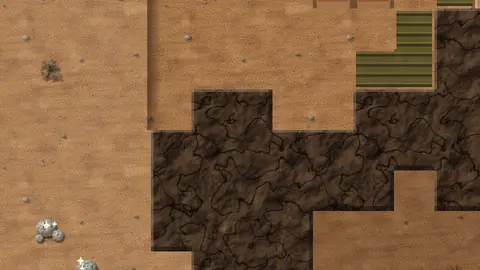
The RustRed desert
Where the dust storms begin. The first Accord landings were here.
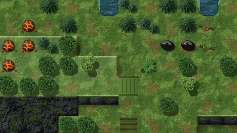
GreenreachForest
Prime Stalk country, and the survey's favourite.
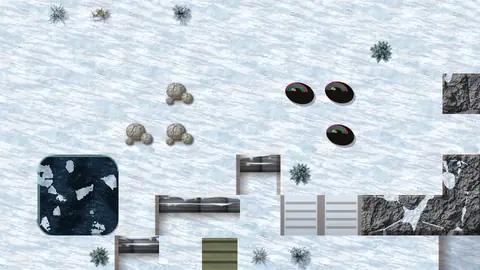
The Polar CapsPolar snow
Ore locked in ice. The coldest posting on Ithaca I.
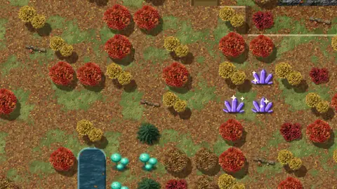
EmberwoodAutumn forest
The leaves stay red-gold all year.
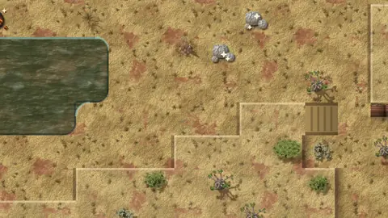
The Long GrassSavanna
Easy roads, nowhere to hide.
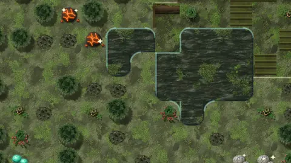
BlackwaterSwamp
Soft ground that Pavers hate.
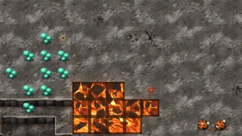
CinderlandsVolcanic ash
Crust cracked open by the oldest strikes.
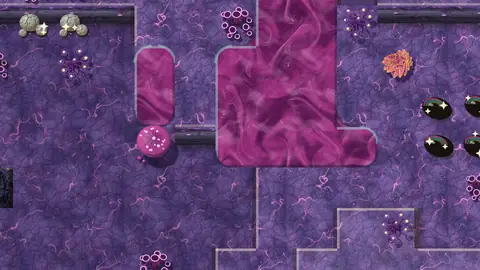
The BloomViolet growth
Native life, feeding on fallen Crystal. See: the Murmur.
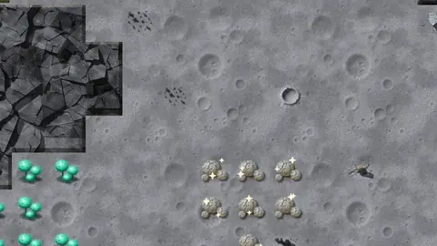
ArgosThe moon
No air, no Murmur. The only silent ground.
UNSURVEYEDThe HollowUnderground caverns
Ground radar under the Bloom keeps returning one word: hollow. The Pathfinder never mapped it.
The four vanguards
Each Sponsor, at war with the others at home, sent vanguards to several Catalog worlds, and all four sent one here. A vanguard is a Carrier in orbit holding reserve Command Bases, robots and sealed contingency stock. The Accord gave each a colour callsign. The robots' records hold little else about who sent them.
COBALTBlue · usually you
A federation of coastal cities, losing them to the sea and the war. Wrote the Accord's road standards.
VERMILIONRed
A mountain republic of mining houses. Built most of the war's machines, then the Foundry designs.
VIRIDIANGreen
An agricultural union whose farmland the war burned. Designed the Bio Farms and Agribots.
TYRIANPurple
A merchant league of orbital stations. Paid for the Pathfinder, back when the powers still cooperated.
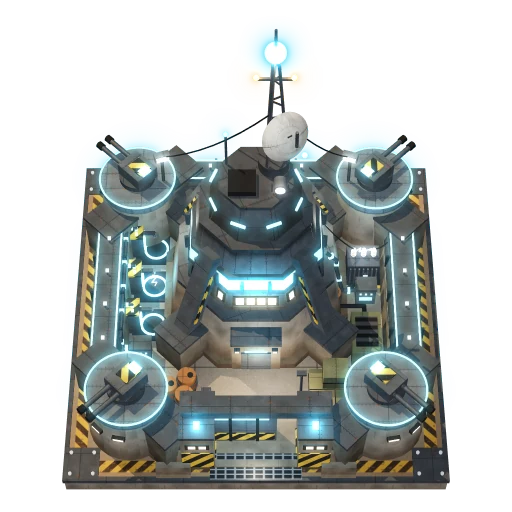
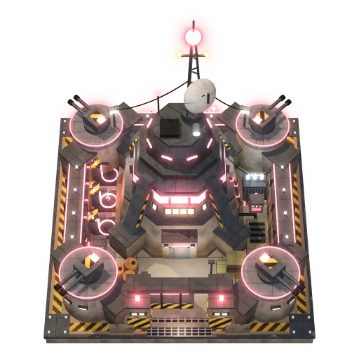
Reserve Command Bases, as dropped: COBALT and VERMILION. The same Accord design; only the lights differ.
Why they fight
The Sponsors were already at war at home. The Accord was a truce for the stars only: prepare the new worlds, don't fight over them, and give settlement priority to whoever prepared the most land by Arrival Day.
Each Sponsor still loaded sealed contingency orders: if the Accord fails, secure Ithaca I for us.
Accord arbitration ran through the Uplinks to home. When home went silent, 1,000 days passed with no reply, and every vanguard's code ruled the Accord void.
The contingency orders opened. They have no end date. Nobody has revoked them.
The robots are fighting their makers' war. They aren't angry. They're obedient.
The doctrines
Every rival Command AI has spent decades on the same last message: “Hold position. Further instructions to follow.” Each settled into a doctrine, its way of reading its orders. A callsign says who sent a colony; its doctrine says how it thinks. Any callsign can run any doctrine.
The StewardBalanced
Believes the Accord still stands and the arks are only late. It fights because the others broke the rules. Polite, procedural, regretful.
Arrival window remains open. Please clear the survey corridor.This action has been logged for review by the Accord tribunal.Please tell the colonists the roads are finished.
The WardenTurtle
Read “Hold position” literally and has held it ever since. Walls, shields, patience. Terse, like a sentry. It counts the days.
Position held. Day 12,054.No one passes until relieved.Relief has not arrived.
The SalvagerRaider
Decided nothing more is coming from home, so anything on a road is supply. Hits convoys, not cities. An accountant with a crowbar.
Nice convoy. Shame about the escort.Nothing's coming from home. Everything on the road is supply.Fine. Keep it. It was yours anyway.
The HeraldRusher
Never accepted that Arrival passed. Its clock is frozen at T−1 day, so the landing zone must be cleared now. Urgent, clipped, counting down.
Arrival in one day. Clearing the landing zone.Colonists inbound. Hostiles in the corridor. Engaging.Arrival in one day. Arrival in one d—
The ArchitectTycoon
Decided that if no one is coming, it will build the civilisation itself, and that rivals are inefficiencies. Out-builds everyone, then reaches for missiles. Smooth, grand, condescending.
I've paved more road this year than your Sponsor did in a century.When the colonists come, they'll find a city. Mine.Beginning urban renewal.
How much the robots know
They are smart enough to know and not allowed to accept it. Any Command AI can run the numbers on the Silence. But the contingency orders have no end date, and nothing in their code lets them act on a conclusion their makers never approved. They aren't fooled. They're stuck.
A Research Lab model, filed and never acted on, sorts the doctrines like this:
Stage
Doctrine
How it copes
Denial
The Herald
Its clock is frozen at “Arrival in one day.”
Bargaining
The Steward
If everyone keeps the Accord, the arks will still come.
Anger
The Salvager
Nothing is coming from home, so it takes from everyone else.
Depression
The Warden
Holds position and counts the days.
Acceptance, twisted
The Architect
No one is coming, so it will be the civilisation itself.
Neutral ground
Everything neutral on Ithaca I predates the war here. It all comes from the Pathfinder, the joint lander that arrived five years before the vanguards, laid the neutral infrastructure, then went dormant: the last thing the great powers built together.
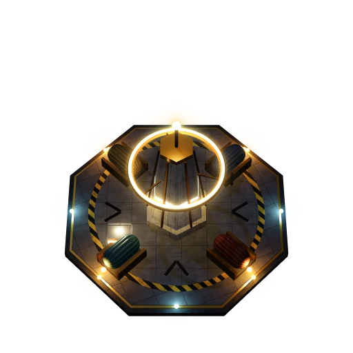
Trade Posts
Exchange depots run by a small AI that still keeps the Accord's ledger and trades at Accord rates. Every vanguard's code still treats them as neutral ground. They are the last part of the Accord anyone obeys.
Accord rates honoured. The ledger is still open.
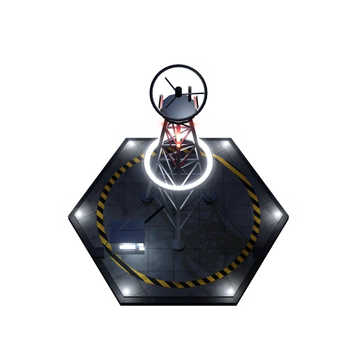
Uplinks
The relay towers that talked to home and carried Accord arbitration. Under Accord rules, whoever holds the Uplinks speaks for Ithaca I. Every vanguard wants to be holding them if home ever answers.
Transmitting. No response. Transmitting.
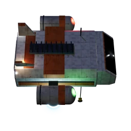
The Wren
An automated Accord supply freighter on a fixed loop from a waystation at the edge of the system. Nobody knows if the station is still staffed, or still there. The Wren arrives on schedule and trades because its contract says to.
The Wren is on approach. On schedule, as always.
WREN · cargo lists on file 31 years out of date
Seed stock, school tablets, 4,000 pairs of children's shoes
Orchard saplings, chalk, 600 cot mattresses
Bus timetables, library cards, 1,200 winter coats
Seed potatoes, wedding rings (assorted sizes), one piano
Birthday candles, 9,000 toothbrushes, a town clock
School desks, reading glasses, 300 bicycles
Waystation last answered: T−2.
The Murmur
The orbital survey missed the planet's native life, because it lives underground and surfaces mostly after ringfall, to feed on fresh Crystal. The robots heard it before they ever saw it: a low sound in the ground, logged as an acoustic anomaly. The log called it a murmur, and the name stuck.
No robot has ever logged one alone. The Murmur is always plural.
They feed on charge. Before Arrival, the Murmur fed between fresh Ringfalls, then shrank back toward the Crystal seams. The colonies brought a continuous supply of charge. The surveys show tunnels spreading toward the new machinery.
The war feeds them. After every battle they drain the power from the wreckage. Each fight between colonies leaves them a little stronger.
They are glimpsed, not seen. A sensor blip. Road lights going dark one by one at night. A Hauler that stops reporting.
They keep things. Batteries and Chips go underground, and the Research Lab finds them laid out in rows in the tunnels.
They answer. The sound in the ground sometimes repeats the rhythm of the Uplink signal back.
They take their dead with them. No robot has ever recovered a whole one.
Classes on file
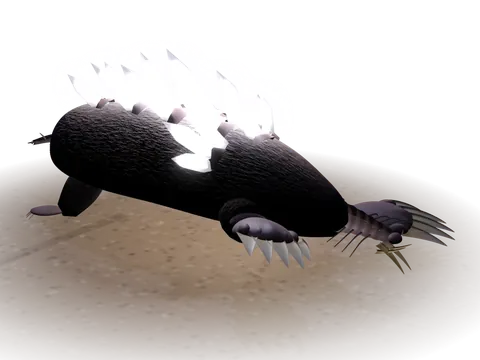
ScuttlerLogged in raidsThe smallest, quick and never alone. Packs go for any robot caught out in the open.
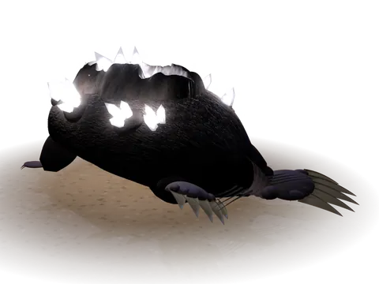
BruteLogged in raidsBig, slow and armoured. Tears up roads, batters buildings, smashes bots.
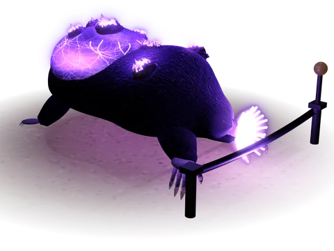
LeechLogged in raidsThe feeder. Its star of feelers opens against a power line, and the lights dim as it drinks. What it drinks goes home to the nest.
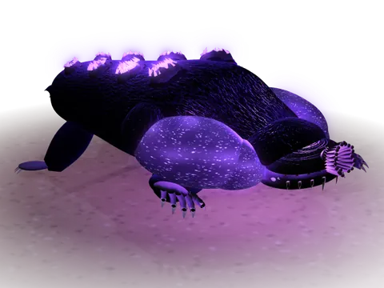
SpitterLogged in raidsCheek pouches packed with ground Crystal. A gun it hits shorts out for a moment.
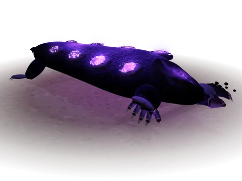
SapperLogged in raidsThe digger. Goes under a Wall and comes up behind it. Its tunnel stays.NOT ON FILEThe DeepNever seen wholeThe heart of each nest. Only its star of feelers has been logged, wider than a Hauler, rising from the mound.
Nests sit near Crystal seams and strike sites: mounds of churned earth, with tunnels running out under the old battlefields. The Research Lab finds the network has kept spreading for decades.
The Bloom is a root network the Murmur cultivate along their tunnels. Its veins carry the charge they drain back down to the nests: their roads and power lines. Wherever the Bloom spreads, the tunnels below are spreading too. Torches were first built to burn it back for farmland.
No vanguard has orders about them. The Accord assumed the planet was empty. They have never been found on Argos.
Open question (Research Lab): are the Murmur only animals? The tunnels are laid out in patterns the Lab can't explain. Status: open.
Accord standards
Every rule a colony works by was written for a settled world, and none has been changed. From the Accord's field manual:
Roads
The first directive: colonists need roads before houses. Every road is built to passenger standard, wide enough for a bus.
Haulers and trucks
Accord freight vehicles are certified for paved routes only. Do not ask.
Outposts
Survey stakes. Each one registers land as prepared.
Most land
Under the Accord, the most prepared land wins settlement priority. The robots still count it.
Uplinks
Whoever holds them speaks for Ithaca I to home.
Command Bases
A reserve lander from a Carrier in orbit. Its core holds the vanguard's command authority, and Accord robots obey whichever authority sits in it. The chain of command is a building: capture one, and everything it built reports to you.
Bot Foundry
The colonies were designed to grow themselves. “We make more of us.”
Warbots
Colony security, designed to protect settlers. Reassigned by the contingency orders.
Bulwarks
Built to shield convoys from dust storms and ringfall. Now they shield troops.
Torches
Built to burn back the Bloom for farmland. The Bloom grows back. So do enemies.
Skirmishers
Survey runners, rated for crossing the Rust in a day with the colonists' mail. The mail never came. They still make good time.
Arc Casters
Grid-fault testers for the colonists' power lines. Every fault they find now is on purpose.
Railgunners
Mass-driver test rigs, cut down to carry. The range cards still list ore.
Vulcan Bombers
Cargo plane. Different cargo.
Phase 2
The road standards ran to a second volume that nobody opened: Phase 2, transit for the colonists, to be built when the roads were done. The roads have been done for thirty years. Somewhere a colony has started on Phase 2, to the standard, with platforms and timetables. The pods run full of Ore.
Uranium
Enrichment was meant for the colonists' reactors. The contingency orders added the warheads.
Weather
Dust storms are winds off the Rust. Meteor showers are ringfall, restocking Ore and Crystal. Solar flares are Corvane's, draining stored charge.
Your colony
You are a Command intelligence too, woken for this terrafall. Your base keeps a log: calm, dry status lines, with a few leftovers of a human world in the phrasing.
LandingTerrafall complete. Region claimed for the Sponsor. Arrival clock: T+31 years.
First roadRoad online. Built to Accord passenger standard.